Population comparison using MCMCglmm
Loading details
library(data.table); library(ggplot2); library(knitr); library(MCMCglmm); library(formr);
opts_chunk$set(warning=TRUE, cache=F,cache.lazy=F,tidy=FALSE,autodep=TRUE,dev=c('png','pdf'),fig.width=20,fig.height=12.5,out.width='1440px',out.height='900px')
source("0__helpers.R")
loadRDS("coefs/rpqa_Children_surviving5y_all_nonlinear.rds")
loadRDS("coefs/rpqa_Children_surviving5y_all_linear_controls.rds")
loadRDS("coefs/rpqa_Children_surviving5y_all_nonlinear_controls.rds")
loadRDS("coefs/krmh_Children_surviving5y_all_nonlinear.rds")
loadRDS("coefs/krmh_Children_surviving5y_all_nonlinear_controls.rds")
loadRDS("coefs/krmh_Children_surviving5y_all_linear_controls.rds")
loadRDS("coefs/ddb_Children_surviving5y_all_nonlinear.rds")
loadRDS("coefs/ddb_Children_surviving5y_all_nonlinear_controls.rds")
loadRDS("coefs/ddb_Children_surviving5y_all_linear_controls.rds")
loadRDS("coefs/swed_Children_surviving5y_all_nonlinear_subset.rds")
swed_Children_surviving5y_all_nonlinear = swed_Children_surviving5y_all_nonlinear_subset
loadRDS("coefs/swed_Children_surviving5y_all_nonlinear_controls_subset.rds")
loadRDS("coefs/swed_Children_surviving5y_all_linear_controls_subset.rds")
swed_Children_surviving5y_all_nonlinear_controls = swed_Children_surviving5y_all_nonlinear_controls_subset
swed_Children_surviving5y_all_linear_controls = swed_Children_surviving5y_all_linear_controls_subset
load("krmh.rdata")
load("rpqa.rdata")
load("ddb.rdata")
swed_uc = local({load("coefs/swed_nonlinear_boot.rdata"); environment()})
swed_c = local({load("coefs/swed_nonlinear_controls_boot.rdata"); environment()})
m_swed_c = local({load("coefs/swed_main_controls_coefs.rdata"); environment()})
m_ddb_c = local({load("coefs/ddb_main_controls_coefs.rdata"); environment()})
m_rpqa_c = local({load("coefs/rpqa_main_controls_coefs.rdata"); environment()})
m_krmh_c = local({load("coefs/krmh_main_controls_coefs.rdata"); environment()})
m_swed_uc = local({load("coefs/swed_main_effects_coefs.rdata"); environment()})
m_ddb_uc = local({load("coefs/ddb_main_effects_coefs.rdata"); environment()})
m_rpqa_uc = local({load("coefs/rpqa_main_effects_coefs.rdata"); environment()})
m_krmh_uc = local({load("coefs/krmh_main_effects_coefs.rdata"); environment()})Analysis description
Number of children who live to 5 (all)
In these models, we’re including everybody who was born. Those who die early, don’t marry/have kids are included with an offspring count of zero. Since so many died early in the historical populations, before getting a chance at reproduction, we have to model this process separately via zero-alteration. Hence, we use the MCMCglmm package which allows us to model this.
These models were run in parallel on our scientific compute cluster to check multiple chain convergence. The detailed model specifications can be accessed via the “Analysis script” links, the model output and diagnostic checks are in this document.
Krummhörn
Few controls
krmh_Children_all_boot = plot_factor_response(krmh_Children_surviving5y_all_nonlinear, mcmcglmm_data = krmh.1)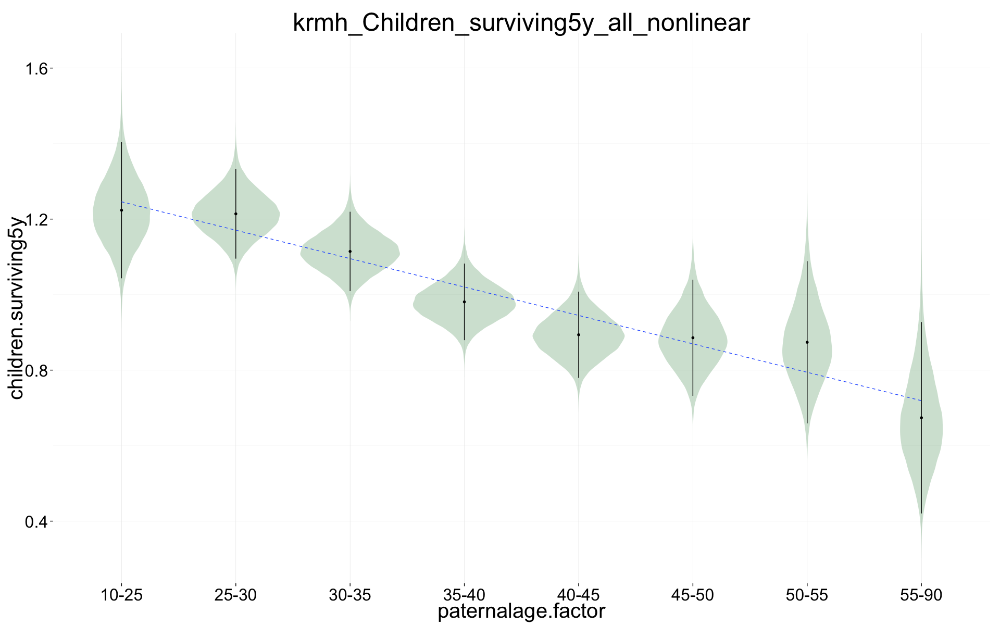
Diagnostics
post_process_mcmcglmm( krmh_Children_surviving5y_all_nonlinear )## Potential scale reduction factors:
##
## Point est.
## (Intercept) 1
## traitza_children.surviving5y 1
## birth.cohort(1773,1796] 1
## birth.cohort(1796,1814] 1
## birth.cohort(1814,1830] 1
## birth.cohort(1830,1850] 1
## male 1
## paternalage.mean 1
## paternalage.factor(25,30] 1
## paternalage.factor(30,35] 1
## paternalage.factor(35,40] 1
## paternalage.factor(40,45] 1
## paternalage.factor(45,50] 1
## paternalage.factor(50,55] 1
## paternalage.factor(55,90] 1
## traitza_children.surviving5y:birth.cohort(1773,1796] 1
## traitza_children.surviving5y:birth.cohort(1796,1814] 1
## traitza_children.surviving5y:birth.cohort(1814,1830] 1
## traitza_children.surviving5y:birth.cohort(1830,1850] 1
## traitza_children.surviving5y:male 1
## traitza_children.surviving5y:paternalage.mean 1
## traitza_children.surviving5y:paternalage.factor(25,30] 1
## traitza_children.surviving5y:paternalage.factor(30,35] 1
## traitza_children.surviving5y:paternalage.factor(35,40] 1
## traitza_children.surviving5y:paternalage.factor(40,45] 1
## traitza_children.surviving5y:paternalage.factor(45,50] 1
## traitza_children.surviving5y:paternalage.factor(50,55] 1
## traitza_children.surviving5y:paternalage.factor(55,90] 1
## Upper C.I.
## (Intercept) 1
## traitza_children.surviving5y 1
## birth.cohort(1773,1796] 1
## birth.cohort(1796,1814] 1
## birth.cohort(1814,1830] 1
## birth.cohort(1830,1850] 1
## male 1
## paternalage.mean 1
## paternalage.factor(25,30] 1
## paternalage.factor(30,35] 1
## paternalage.factor(35,40] 1
## paternalage.factor(40,45] 1
## paternalage.factor(45,50] 1
## paternalage.factor(50,55] 1
## paternalage.factor(55,90] 1
## traitza_children.surviving5y:birth.cohort(1773,1796] 1
## traitza_children.surviving5y:birth.cohort(1796,1814] 1
## traitza_children.surviving5y:birth.cohort(1814,1830] 1
## traitza_children.surviving5y:birth.cohort(1830,1850] 1
## traitza_children.surviving5y:male 1
## traitza_children.surviving5y:paternalage.mean 1
## traitza_children.surviving5y:paternalage.factor(25,30] 1
## traitza_children.surviving5y:paternalage.factor(30,35] 1
## traitza_children.surviving5y:paternalage.factor(35,40] 1
## traitza_children.surviving5y:paternalage.factor(40,45] 1
## traitza_children.surviving5y:paternalage.factor(45,50] 1
## traitza_children.surviving5y:paternalage.factor(50,55] 1
## traitza_children.surviving5y:paternalage.factor(55,90] 1
##
## Multivariate psrf
##
## 1
## Potential scale reduction factors:
##
## Point est. Upper C.I.
## traitchildren.surviving5y.idParents 1 1.01
## traitza_children.surviving5y.idParents 1 1.00
## traitchildren.surviving5y.units 1 1.00
##
## Multivariate psrf
##
## 1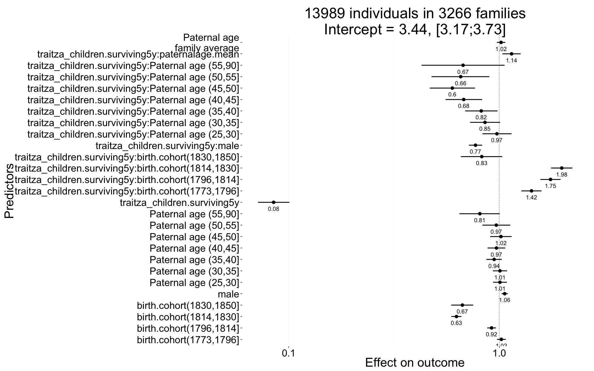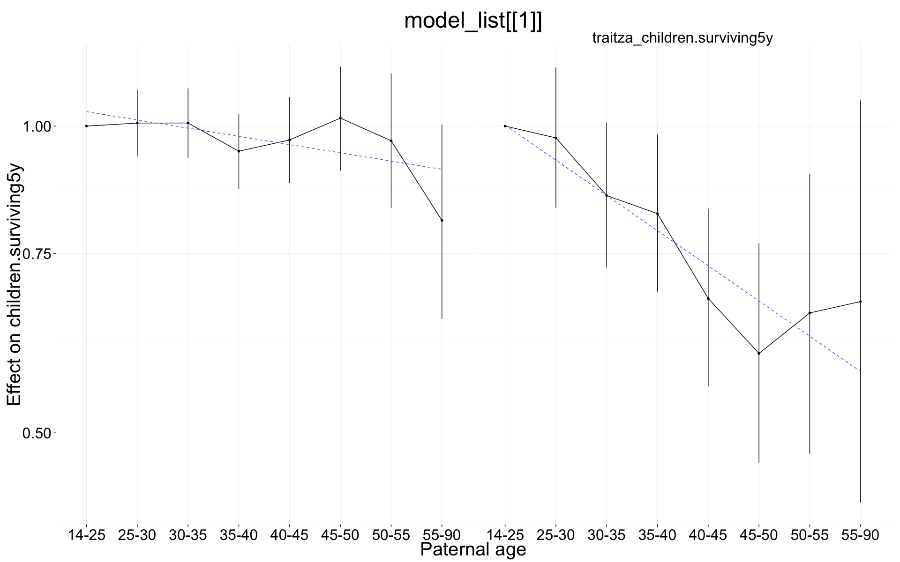
##
## Iterations = 30001:329851
## Thinning interval = 150
## Number of chains = 19
## Sample size per chain = 2000
##
## 1. Empirical mean and standard deviation for each variable,
## plus standard error of the mean:
##
## Mean SD
## (Intercept) 1.23548 0.0490
## traitza_children.surviving5y -2.46731 0.1042
## birth.cohort(1773,1796] 0.02255 0.0293
## birth.cohort(1796,1814] -0.08501 0.0292
## birth.cohort(1814,1830] -0.46896 0.0335
## birth.cohort(1830,1850] -0.40468 0.0732
## male 0.05854 0.0209
## paternalage.mean 0.01901 0.0281
## paternalage.factor(25,30] 0.00682 0.0462
## paternalage.factor(30,35] 0.00695 0.0476
## paternalage.factor(35,40] -0.05698 0.0514
## paternalage.factor(40,45] -0.03132 0.0588
## paternalage.factor(45,50] 0.01778 0.0714
## paternalage.factor(50,55] -0.03319 0.0925
## paternalage.factor(55,90] -0.21383 0.1333
## traitza_children.surviving5y:birth.cohort(1773,1796] 0.35200 0.0674
## traitza_children.surviving5y:birth.cohort(1796,1814] 0.55964 0.0671
## traitza_children.surviving5y:birth.cohort(1814,1830] 0.68219 0.0706
## traitza_children.surviving5y:birth.cohort(1830,1850] -0.19259 0.1374
## traitza_children.surviving5y:male -0.26032 0.0441
## traitza_children.surviving5y:paternalage.mean 0.13337 0.0606
## traitza_children.surviving5y:paternalage.factor(25,30] -0.02641 0.0966
## traitza_children.surviving5y:paternalage.factor(30,35] -0.15667 0.0995
## traitza_children.surviving5y:paternalage.factor(35,40] -0.19780 0.1076
## traitza_children.surviving5y:paternalage.factor(40,45] -0.38913 0.1221
## traitza_children.surviving5y:paternalage.factor(45,50] -0.51330 0.1502
## traitza_children.surviving5y:paternalage.factor(50,55] -0.42297 0.1926
## traitza_children.surviving5y:paternalage.factor(55,90] -0.39815 0.2755
## Naive SE
## (Intercept) 0.000252
## traitza_children.surviving5y 0.000534
## birth.cohort(1773,1796] 0.000150
## birth.cohort(1796,1814] 0.000150
## birth.cohort(1814,1830] 0.000172
## birth.cohort(1830,1850] 0.000376
## male 0.000107
## paternalage.mean 0.000144
## paternalage.factor(25,30] 0.000237
## paternalage.factor(30,35] 0.000244
## paternalage.factor(35,40] 0.000264
## paternalage.factor(40,45] 0.000301
## paternalage.factor(45,50] 0.000366
## paternalage.factor(50,55] 0.000474
## paternalage.factor(55,90] 0.000684
## traitza_children.surviving5y:birth.cohort(1773,1796] 0.000346
## traitza_children.surviving5y:birth.cohort(1796,1814] 0.000344
## traitza_children.surviving5y:birth.cohort(1814,1830] 0.000362
## traitza_children.surviving5y:birth.cohort(1830,1850] 0.000705
## traitza_children.surviving5y:male 0.000226
## traitza_children.surviving5y:paternalage.mean 0.000311
## traitza_children.surviving5y:paternalage.factor(25,30] 0.000495
## traitza_children.surviving5y:paternalage.factor(30,35] 0.000510
## traitza_children.surviving5y:paternalage.factor(35,40] 0.000552
## traitza_children.surviving5y:paternalage.factor(40,45] 0.000627
## traitza_children.surviving5y:paternalage.factor(45,50] 0.000770
## traitza_children.surviving5y:paternalage.factor(50,55] 0.000988
## traitza_children.surviving5y:paternalage.factor(55,90] 0.001413
## Time-series SE
## (Intercept) 0.000274
## traitza_children.surviving5y 0.000542
## birth.cohort(1773,1796] 0.000160
## birth.cohort(1796,1814] 0.000159
## birth.cohort(1814,1830] 0.000194
## birth.cohort(1830,1850] 0.000518
## male 0.000114
## paternalage.mean 0.000155
## paternalage.factor(25,30] 0.000251
## paternalage.factor(30,35] 0.000261
## paternalage.factor(35,40] 0.000279
## paternalage.factor(40,45] 0.000327
## paternalage.factor(45,50] 0.000396
## paternalage.factor(50,55] 0.000508
## paternalage.factor(55,90] 0.000753
## traitza_children.surviving5y:birth.cohort(1773,1796] 0.000346
## traitza_children.surviving5y:birth.cohort(1796,1814] 0.000347
## traitza_children.surviving5y:birth.cohort(1814,1830] 0.000370
## traitza_children.surviving5y:birth.cohort(1830,1850] 0.000791
## traitza_children.surviving5y:male 0.000232
## traitza_children.surviving5y:paternalage.mean 0.000315
## traitza_children.surviving5y:paternalage.factor(25,30] 0.000506
## traitza_children.surviving5y:paternalage.factor(30,35] 0.000517
## traitza_children.surviving5y:paternalage.factor(35,40] 0.000559
## traitza_children.surviving5y:paternalage.factor(40,45] 0.000633
## traitza_children.surviving5y:paternalage.factor(45,50] 0.000780
## traitza_children.surviving5y:paternalage.factor(50,55] 0.001008
## traitza_children.surviving5y:paternalage.factor(55,90] 0.001446
##
## 2. Quantiles for each variable:
##
## 2.5% 25%
## (Intercept) 1.1390 1.20272853
## traitza_children.surviving5y -2.6730 -2.53736152
## birth.cohort(1773,1796] -0.0348 0.00281692
## birth.cohort(1796,1814] -0.1421 -0.10496580
## birth.cohort(1814,1830] -0.5353 -0.49152866
## birth.cohort(1830,1850] -0.5496 -0.45351783
## male 0.0177 0.04445815
## paternalage.mean -0.0363 0.00000354
## paternalage.factor(25,30] -0.0834 -0.02425907
## paternalage.factor(30,35] -0.0869 -0.02509392
## paternalage.factor(35,40] -0.1579 -0.09145228
## paternalage.factor(40,45] -0.1467 -0.07088537
## paternalage.factor(45,50] -0.1235 -0.03022284
## paternalage.factor(50,55] -0.2132 -0.09510681
## paternalage.factor(55,90] -0.4787 -0.30236420
## traitza_children.surviving5y:birth.cohort(1773,1796] 0.2202 0.30662223
## traitza_children.surviving5y:birth.cohort(1796,1814] 0.4283 0.51400716
## traitza_children.surviving5y:birth.cohort(1814,1830] 0.5429 0.63518970
## traitza_children.surviving5y:birth.cohort(1830,1850] -0.4647 -0.28468528
## traitza_children.surviving5y:male -0.3463 -0.29014179
## traitza_children.surviving5y:paternalage.mean 0.0144 0.09213342
## traitza_children.surviving5y:paternalage.factor(25,30] -0.2131 -0.09128219
## traitza_children.surviving5y:paternalage.factor(30,35] -0.3516 -0.22427178
## traitza_children.surviving5y:paternalage.factor(35,40] -0.4099 -0.27051628
## traitza_children.surviving5y:paternalage.factor(40,45] -0.6268 -0.47239550
## traitza_children.surviving5y:paternalage.factor(45,50] -0.8059 -0.61434525
## traitza_children.surviving5y:paternalage.factor(50,55] -0.8031 -0.55142927
## traitza_children.surviving5y:paternalage.factor(55,90] -0.9412 -0.58347756
## 50% 75%
## (Intercept) 1.23510 1.2688
## traitza_children.surviving5y -2.46773 -2.3968
## birth.cohort(1773,1796] 0.02244 0.0425
## birth.cohort(1796,1814] -0.08492 -0.0653
## birth.cohort(1814,1830] -0.46869 -0.4464
## birth.cohort(1830,1850] -0.40404 -0.3553
## male 0.05841 0.0725
## paternalage.mean 0.01910 0.0381
## paternalage.factor(25,30] 0.00681 0.0379
## paternalage.factor(30,35] 0.00705 0.0390
## paternalage.factor(35,40] -0.05674 -0.0227
## paternalage.factor(40,45] -0.03128 0.0082
## paternalage.factor(45,50] 0.01807 0.0662
## paternalage.factor(50,55] -0.03310 0.0294
## paternalage.factor(55,90] -0.21307 -0.1240
## traitza_children.surviving5y:birth.cohort(1773,1796] 0.35175 0.3976
## traitza_children.surviving5y:birth.cohort(1796,1814] 0.55995 0.6051
## traitza_children.surviving5y:birth.cohort(1814,1830] 0.68255 0.7296
## traitza_children.surviving5y:birth.cohort(1830,1850] -0.19200 -0.0991
## traitza_children.surviving5y:male -0.26039 -0.2305
## traitza_children.surviving5y:paternalage.mean 0.13380 0.1745
## traitza_children.surviving5y:paternalage.factor(25,30] -0.02667 0.0380
## traitza_children.surviving5y:paternalage.factor(30,35] -0.15692 -0.0905
## traitza_children.surviving5y:paternalage.factor(35,40] -0.19779 -0.1260
## traitza_children.surviving5y:paternalage.factor(40,45] -0.38935 -0.3071
## traitza_children.surviving5y:paternalage.factor(45,50] -0.51366 -0.4123
## traitza_children.surviving5y:paternalage.factor(50,55] -0.42213 -0.2936
## traitza_children.surviving5y:paternalage.factor(55,90] -0.39645 -0.2135
## 97.5%
## (Intercept) 1.3316
## traitza_children.surviving5y -2.2638
## birth.cohort(1773,1796] 0.0796
## birth.cohort(1796,1814] -0.0275
## birth.cohort(1814,1830] -0.4040
## birth.cohort(1830,1850] -0.2637
## male 0.0999
## paternalage.mean 0.0740
## paternalage.factor(25,30] 0.0974
## paternalage.factor(30,35] 0.1012
## paternalage.factor(35,40] 0.0443
## paternalage.factor(40,45] 0.0841
## paternalage.factor(45,50] 0.1561
## paternalage.factor(50,55] 0.1474
## paternalage.factor(55,90] 0.0452
## traitza_children.surviving5y:birth.cohort(1773,1796] 0.4837
## traitza_children.surviving5y:birth.cohort(1796,1814] 0.6911
## traitza_children.surviving5y:birth.cohort(1814,1830] 0.8207
## traitza_children.surviving5y:birth.cohort(1830,1850] 0.0731
## traitza_children.surviving5y:male -0.1745
## traitza_children.surviving5y:paternalage.mean 0.2508
## traitza_children.surviving5y:paternalage.factor(25,30] 0.1638
## traitza_children.surviving5y:paternalage.factor(30,35] 0.0384
## traitza_children.surviving5y:paternalage.factor(35,40] 0.0146
## traitza_children.surviving5y:paternalage.factor(40,45] -0.1482
## traitza_children.surviving5y:paternalage.factor(45,50] -0.2183
## traitza_children.surviving5y:paternalage.factor(50,55] -0.0490
## traitza_children.surviving5y:paternalage.factor(55,90] 0.1394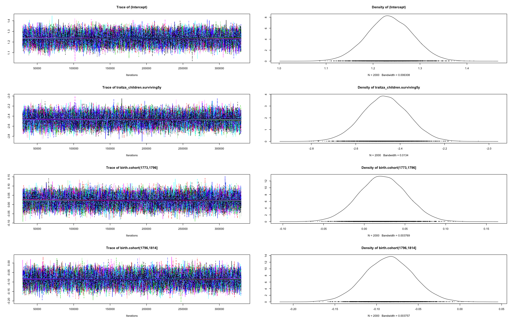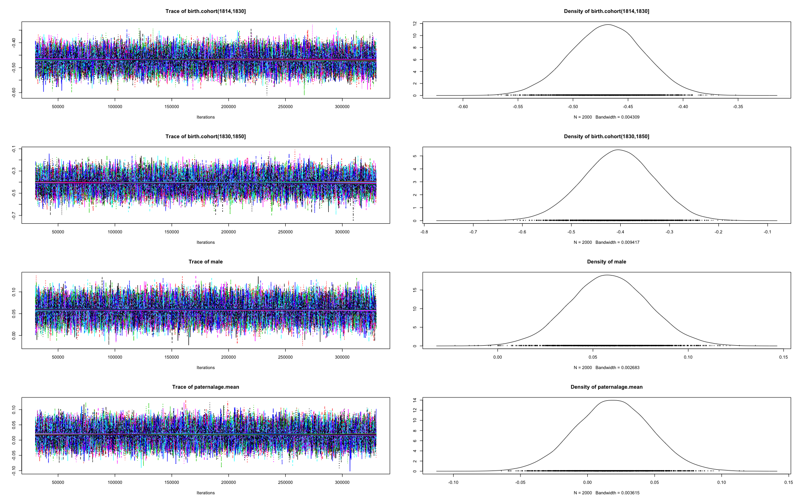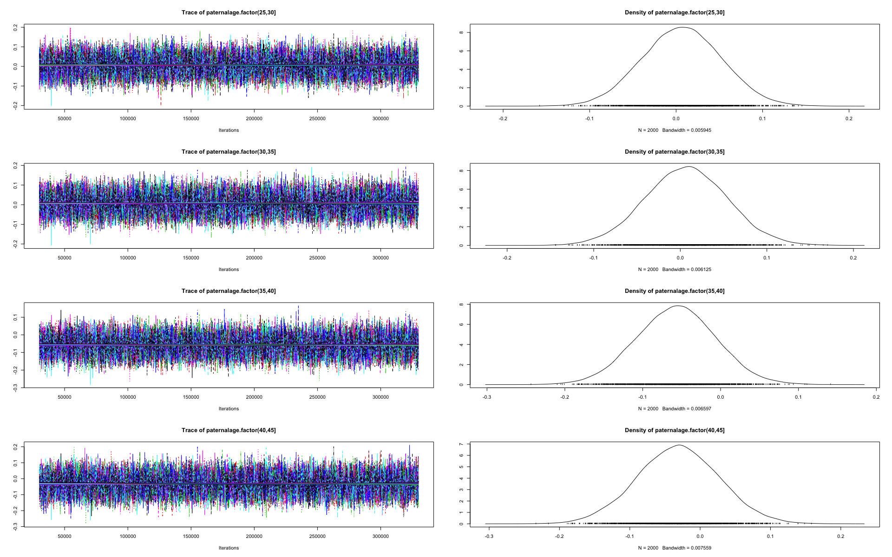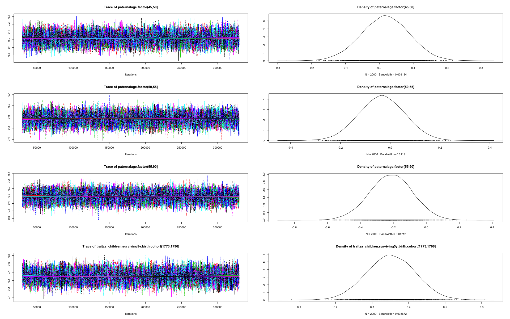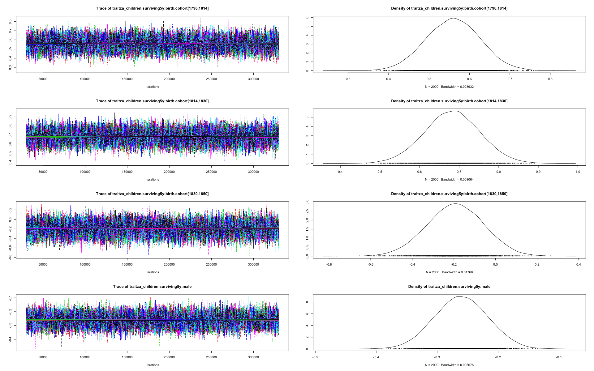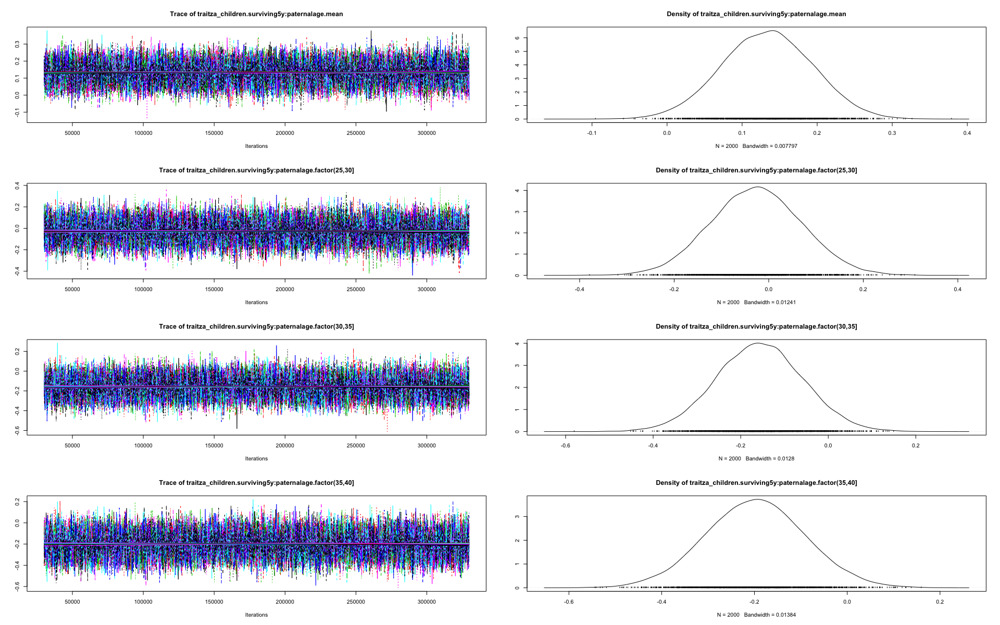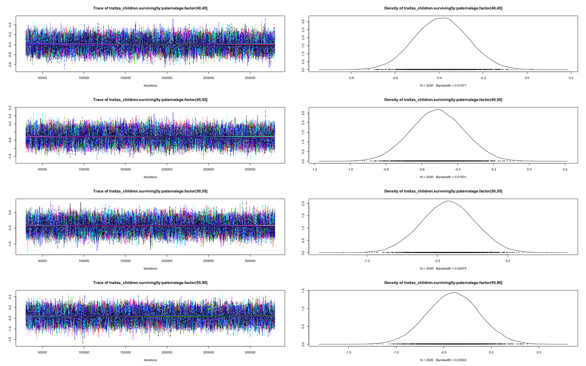
## NULL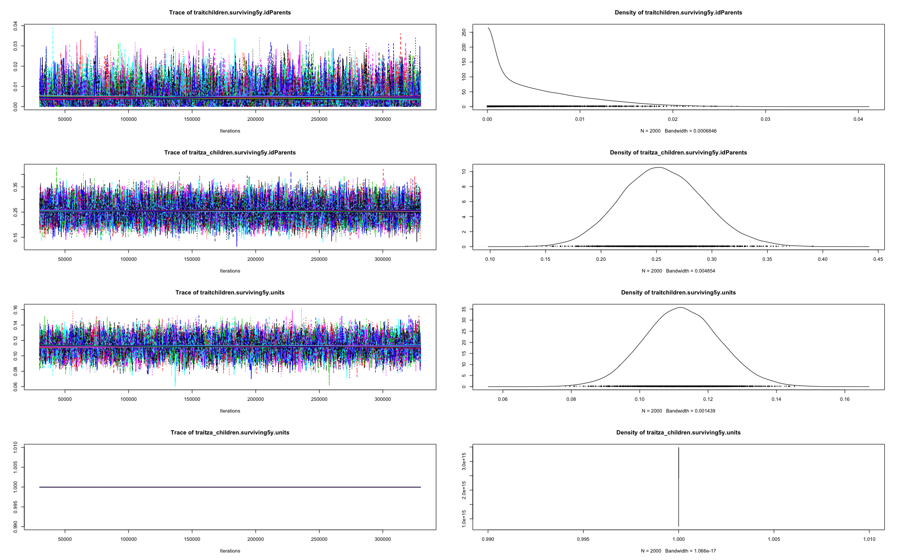
## NULL
## (Intercept)
## 32362
## traitza_children.surviving5y
## 37193
## birth.cohort(1773,1796]
## 34016
## birth.cohort(1796,1814]
## 33793
## birth.cohort(1814,1830]
## 30157
## birth.cohort(1830,1850]
## 20068
## male
## 33500
## paternalage.mean
## 32896
## paternalage.factor(25,30]
## 34308
## paternalage.factor(30,35]
## 33758
## paternalage.factor(35,40]
## 34259
## paternalage.factor(40,45]
## 32470
## paternalage.factor(45,50]
## 32735
## paternalage.factor(50,55]
## 33469
## paternalage.factor(55,90]
## 31429
## traitza_children.surviving5y:birth.cohort(1773,1796]
## 38165
## traitza_children.surviving5y:birth.cohort(1796,1814]
## 37947
## traitza_children.surviving5y:birth.cohort(1814,1830]
## 36627
## traitza_children.surviving5y:birth.cohort(1830,1850]
## 30399
## traitza_children.surviving5y:male
## 36413
## traitza_children.surviving5y:paternalage.mean
## 37093
## traitza_children.surviving5y:paternalage.factor(25,30]
## 36772
## traitza_children.surviving5y:paternalage.factor(30,35]
## 37257
## traitza_children.surviving5y:paternalage.factor(35,40]
## 37096
## traitza_children.surviving5y:paternalage.factor(40,45]
## 37555
## traitza_children.surviving5y:paternalage.factor(45,50]
## 37608
## traitza_children.surviving5y:paternalage.factor(50,55]
## 36765
## traitza_children.surviving5y:paternalage.factor(55,90]
## 36579
## traitchildren.surviving5y.idParents
## 8159
## traitza_children.surviving5y.idParents
## 31075
## traitchildren.surviving5y.units
## 10041
## traitza_children.surviving5y.units
## 0Many controls
krmh_Children_all_ctrl_boot = plot_factor_response(krmh_Children_surviving5y_all_nonlinear_controls, mcmcglmm_data = krmh.1)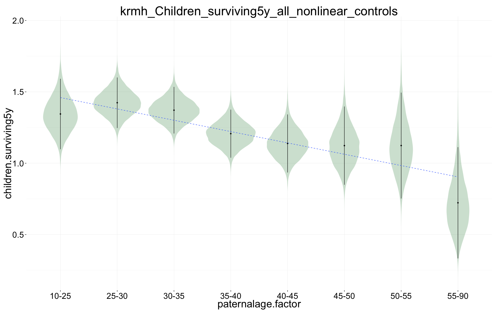
Diagnostics
post_process_mcmcglmm( krmh_Children_surviving5y_all_nonlinear_controls )## Potential scale reduction factors:
##
## Point est.
## (Intercept) 1
## traitza_children.surviving5y 1
## center(dependent_sibs_f5y) 1
## maternalage.factor(14,20] 1
## maternalage.factor(35,50] 1
## paternalloss 1
## maternalloss 1
## center(nr.siblings) 1
## birth.cohort(1773,1796] 1
## birth.cohort(1796,1814] 1
## birth.cohort(1814,1830] 1
## birth.cohort(1830,1850] 1
## male 1
## paternalage.mean 1
## paternalage.factor(25,30] 1
## paternalage.factor(30,35] 1
## paternalage.factor(35,40] 1
## paternalage.factor(40,45] 1
## paternalage.factor(45,50] 1
## paternalage.factor(50,55] 1
## paternalage.factor(55,90] 1
## traitza_children.surviving5y:center(dependent_sibs_f5y) 1
## traitza_children.surviving5y:maternalage.factor(14,20] 1
## traitza_children.surviving5y:maternalage.factor(35,50] 1
## traitza_children.surviving5y:paternalloss 1
## traitza_children.surviving5y:maternalloss 1
## traitza_children.surviving5y:center(nr.siblings) 1
## traitza_children.surviving5y:birth.cohort(1773,1796] 1
## traitza_children.surviving5y:birth.cohort(1796,1814] 1
## traitza_children.surviving5y:birth.cohort(1814,1830] 1
## traitza_children.surviving5y:birth.cohort(1830,1850] 1
## traitza_children.surviving5y:male 1
## traitza_children.surviving5y:paternalage.mean 1
## traitza_children.surviving5y:paternalage.factor(25,30] 1
## traitza_children.surviving5y:paternalage.factor(30,35] 1
## traitza_children.surviving5y:paternalage.factor(35,40] 1
## traitza_children.surviving5y:paternalage.factor(40,45] 1
## traitza_children.surviving5y:paternalage.factor(45,50] 1
## traitza_children.surviving5y:paternalage.factor(50,55] 1
## traitza_children.surviving5y:paternalage.factor(55,90] 1
## Upper C.I.
## (Intercept) 1.00
## traitza_children.surviving5y 1.00
## center(dependent_sibs_f5y) 1.00
## maternalage.factor(14,20] 1.00
## maternalage.factor(35,50] 1.00
## paternalloss 1.00
## maternalloss 1.00
## center(nr.siblings) 1.00
## birth.cohort(1773,1796] 1.00
## birth.cohort(1796,1814] 1.00
## birth.cohort(1814,1830] 1.01
## birth.cohort(1830,1850] 1.01
## male 1.00
## paternalage.mean 1.00
## paternalage.factor(25,30] 1.00
## paternalage.factor(30,35] 1.00
## paternalage.factor(35,40] 1.00
## paternalage.factor(40,45] 1.00
## paternalage.factor(45,50] 1.00
## paternalage.factor(50,55] 1.00
## paternalage.factor(55,90] 1.00
## traitza_children.surviving5y:center(dependent_sibs_f5y) 1.00
## traitza_children.surviving5y:maternalage.factor(14,20] 1.00
## traitza_children.surviving5y:maternalage.factor(35,50] 1.00
## traitza_children.surviving5y:paternalloss 1.00
## traitza_children.surviving5y:maternalloss 1.00
## traitza_children.surviving5y:center(nr.siblings) 1.00
## traitza_children.surviving5y:birth.cohort(1773,1796] 1.00
## traitza_children.surviving5y:birth.cohort(1796,1814] 1.00
## traitza_children.surviving5y:birth.cohort(1814,1830] 1.00
## traitza_children.surviving5y:birth.cohort(1830,1850] 1.00
## traitza_children.surviving5y:male 1.00
## traitza_children.surviving5y:paternalage.mean 1.00
## traitza_children.surviving5y:paternalage.factor(25,30] 1.00
## traitza_children.surviving5y:paternalage.factor(30,35] 1.00
## traitza_children.surviving5y:paternalage.factor(35,40] 1.00
## traitza_children.surviving5y:paternalage.factor(40,45] 1.00
## traitza_children.surviving5y:paternalage.factor(45,50] 1.00
## traitza_children.surviving5y:paternalage.factor(50,55] 1.00
## traitza_children.surviving5y:paternalage.factor(55,90] 1.00
##
## Multivariate psrf
##
## 1.01
## Potential scale reduction factors:
##
## Point est. Upper C.I.
## traitchildren.surviving5y.idParents 1.01 1.02
## traitza_children.surviving5y.idParents 1.00 1.00
## traitchildren.surviving5y.units 1.01 1.01
##
## Multivariate psrf
##
## 1.01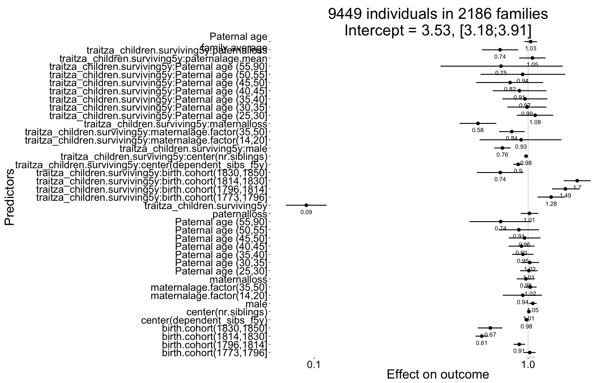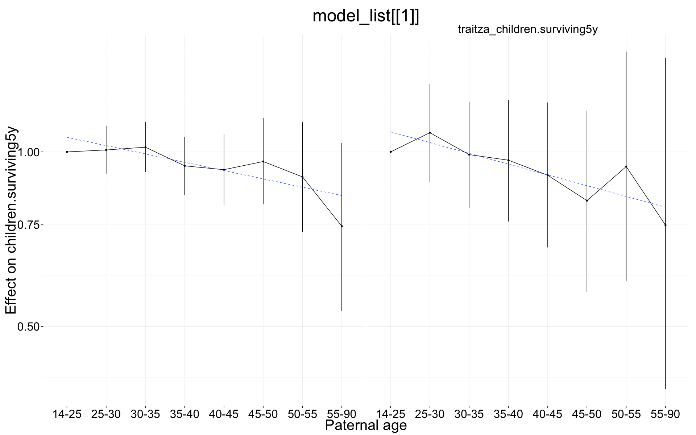
##
## Iterations = 10001:59951
## Thinning interval = 50
## Number of chains = 19
## Sample size per chain = 1000
##
## 1. Empirical mean and standard deviation for each variable,
## plus standard error of the mean:
##
## Mean SD
## (Intercept) 1.26119 0.0624
## traitza_children.surviving5y -2.38767 0.1335
## center(dependent_sibs_f5y) -0.01649 0.0146
## maternalage.factor(14,20] -0.05834 0.1285
## maternalage.factor(35,50] 0.02431 0.0405
## paternalloss 0.01445 0.0575
## maternalloss -0.02370 0.0590
## center(nr.siblings) 0.00790 0.0066
## birth.cohort(1773,1796] 0.01801 0.0385
## birth.cohort(1796,1814] -0.09479 0.0378
## birth.cohort(1814,1830] -0.49855 0.0410
## birth.cohort(1830,1850] -0.40669 0.0806
## male 0.05029 0.0255
## paternalage.mean 0.02891 0.0414
## paternalage.factor(25,30] 0.00788 0.0569
## paternalage.factor(30,35] 0.01902 0.0607
## paternalage.factor(35,40] -0.05607 0.0703
## paternalage.factor(40,45] -0.07060 0.0850
## paternalage.factor(45,50] -0.03737 0.1039
## paternalage.factor(50,55] -0.09968 0.1329
## paternalage.factor(55,90] -0.29572 0.2022
## traitza_children.surviving5y:center(dependent_sibs_f5y) -0.10729 0.0309
## traitza_children.surviving5y:maternalage.factor(14,20] -0.07807 0.2673
## traitza_children.surviving5y:maternalage.factor(35,50] -0.17457 0.0841
## traitza_children.surviving5y:paternalloss -0.30030 0.1188
## traitza_children.surviving5y:maternalloss -0.53917 0.1201
## traitza_children.surviving5y:center(nr.siblings) -0.02148 0.0142
## traitza_children.surviving5y:birth.cohort(1773,1796] 0.24755 0.0891
## traitza_children.surviving5y:birth.cohort(1796,1814] 0.40210 0.0880
## traitza_children.surviving5y:birth.cohort(1814,1830] 0.52873 0.0880
## traitza_children.surviving5y:birth.cohort(1830,1850] -0.29933 0.1528
## traitza_children.surviving5y:male -0.27550 0.0533
## traitza_children.surviving5y:paternalage.mean 0.04692 0.0865
## traitza_children.surviving5y:paternalage.factor(25,30] 0.07604 0.1194
## traitza_children.surviving5y:paternalage.factor(30,35] -0.01195 0.1273
## traitza_children.surviving5y:paternalage.factor(35,40] -0.03340 0.1470
## traitza_children.surviving5y:paternalage.factor(40,45] -0.09171 0.1749
## traitza_children.surviving5y:paternalage.factor(45,50] -0.19409 0.2179
## traitza_children.surviving5y:paternalage.factor(50,55] -0.05591 0.2766
## traitza_children.surviving5y:paternalage.factor(55,90] -0.29124 0.3974
## Naive SE
## (Intercept) 0.0004525
## traitza_children.surviving5y 0.0009685
## center(dependent_sibs_f5y) 0.0001061
## maternalage.factor(14,20] 0.0009323
## maternalage.factor(35,50] 0.0002939
## paternalloss 0.0004170
## maternalloss 0.0004279
## center(nr.siblings) 0.0000479
## birth.cohort(1773,1796] 0.0002792
## birth.cohort(1796,1814] 0.0002739
## birth.cohort(1814,1830] 0.0002975
## birth.cohort(1830,1850] 0.0005845
## male 0.0001847
## paternalage.mean 0.0003004
## paternalage.factor(25,30] 0.0004124
## paternalage.factor(30,35] 0.0004406
## paternalage.factor(35,40] 0.0005097
## paternalage.factor(40,45] 0.0006164
## paternalage.factor(45,50] 0.0007541
## paternalage.factor(50,55] 0.0009639
## paternalage.factor(55,90] 0.0014671
## traitza_children.surviving5y:center(dependent_sibs_f5y) 0.0002241
## traitza_children.surviving5y:maternalage.factor(14,20] 0.0019393
## traitza_children.surviving5y:maternalage.factor(35,50] 0.0006102
## traitza_children.surviving5y:paternalloss 0.0008616
## traitza_children.surviving5y:maternalloss 0.0008714
## traitza_children.surviving5y:center(nr.siblings) 0.0001030
## traitza_children.surviving5y:birth.cohort(1773,1796] 0.0006464
## traitza_children.surviving5y:birth.cohort(1796,1814] 0.0006382
## traitza_children.surviving5y:birth.cohort(1814,1830] 0.0006381
## traitza_children.surviving5y:birth.cohort(1830,1850] 0.0011082
## traitza_children.surviving5y:male 0.0003865
## traitza_children.surviving5y:paternalage.mean 0.0006276
## traitza_children.surviving5y:paternalage.factor(25,30] 0.0008661
## traitza_children.surviving5y:paternalage.factor(30,35] 0.0009233
## traitza_children.surviving5y:paternalage.factor(35,40] 0.0010665
## traitza_children.surviving5y:paternalage.factor(40,45] 0.0012692
## traitza_children.surviving5y:paternalage.factor(45,50] 0.0015810
## traitza_children.surviving5y:paternalage.factor(50,55] 0.0020069
## traitza_children.surviving5y:paternalage.factor(55,90] 0.0028831
## Time-series SE
## (Intercept) 0.0006390
## traitza_children.surviving5y 0.0011326
## center(dependent_sibs_f5y) 0.0001625
## maternalage.factor(14,20] 0.0013825
## maternalage.factor(35,50] 0.0004519
## paternalloss 0.0006463
## maternalloss 0.0006969
## center(nr.siblings) 0.0000723
## birth.cohort(1773,1796] 0.0003824
## birth.cohort(1796,1814] 0.0003709
## birth.cohort(1814,1830] 0.0004694
## birth.cohort(1830,1850] 0.0011912
## male 0.0002676
## paternalage.mean 0.0004467
## paternalage.factor(25,30] 0.0006106
## paternalage.factor(30,35] 0.0006305
## paternalage.factor(35,40] 0.0007564
## paternalage.factor(40,45] 0.0009083
## paternalage.factor(45,50] 0.0011140
## paternalage.factor(50,55] 0.0014062
## paternalage.factor(55,90] 0.0024542
## traitza_children.surviving5y:center(dependent_sibs_f5y) 0.0002755
## traitza_children.surviving5y:maternalage.factor(14,20] 0.0022787
## traitza_children.surviving5y:maternalage.factor(35,50] 0.0007424
## traitza_children.surviving5y:paternalloss 0.0010357
## traitza_children.surviving5y:maternalloss 0.0011333
## traitza_children.surviving5y:center(nr.siblings) 0.0001238
## traitza_children.surviving5y:birth.cohort(1773,1796] 0.0007133
## traitza_children.surviving5y:birth.cohort(1796,1814] 0.0007103
## traitza_children.surviving5y:birth.cohort(1814,1830] 0.0007580
## traitza_children.surviving5y:birth.cohort(1830,1850] 0.0016673
## traitza_children.surviving5y:male 0.0004550
## traitza_children.surviving5y:paternalage.mean 0.0007161
## traitza_children.surviving5y:paternalage.factor(25,30] 0.0010059
## traitza_children.surviving5y:paternalage.factor(30,35] 0.0010746
## traitza_children.surviving5y:paternalage.factor(35,40] 0.0012541
## traitza_children.surviving5y:paternalage.factor(40,45] 0.0014764
## traitza_children.surviving5y:paternalage.factor(45,50] 0.0018801
## traitza_children.surviving5y:paternalage.factor(50,55] 0.0023235
## traitza_children.surviving5y:paternalage.factor(55,90] 0.0036086
##
## 2. Quantiles for each variable:
##
## 2.5% 25%
## (Intercept) 1.138461 1.21972
## traitza_children.surviving5y -2.651547 -2.47771
## center(dependent_sibs_f5y) -0.045071 -0.02630
## maternalage.factor(14,20] -0.309226 -0.14465
## maternalage.factor(35,50] -0.054545 -0.00296
## paternalloss -0.098495 -0.02436
## maternalloss -0.140463 -0.06315
## center(nr.siblings) -0.005015 0.00343
## birth.cohort(1773,1796] -0.056950 -0.00810
## birth.cohort(1796,1814] -0.169466 -0.11982
## birth.cohort(1814,1830] -0.579706 -0.52585
## birth.cohort(1830,1850] -0.566142 -0.46081
## male -0.000358 0.03337
## paternalage.mean -0.051605 0.00106
## paternalage.factor(25,30] -0.105157 -0.02993
## paternalage.factor(30,35] -0.099724 -0.02219
## paternalage.factor(35,40] -0.193957 -0.10312
## paternalage.factor(40,45] -0.237622 -0.12838
## paternalage.factor(45,50] -0.237847 -0.10805
## paternalage.factor(50,55] -0.362553 -0.18852
## paternalage.factor(55,90] -0.698972 -0.43107
## traitza_children.surviving5y:center(dependent_sibs_f5y) -0.168240 -0.12802
## traitza_children.surviving5y:maternalage.factor(14,20] -0.610120 -0.25500
## traitza_children.surviving5y:maternalage.factor(35,50] -0.338864 -0.23116
## traitza_children.surviving5y:paternalloss -0.536225 -0.37892
## traitza_children.surviving5y:maternalloss -0.777492 -0.61861
## traitza_children.surviving5y:center(nr.siblings) -0.049240 -0.03114
## traitza_children.surviving5y:birth.cohort(1773,1796] 0.073227 0.18709
## traitza_children.surviving5y:birth.cohort(1796,1814] 0.229161 0.34335
## traitza_children.surviving5y:birth.cohort(1814,1830] 0.355769 0.46918
## traitza_children.surviving5y:birth.cohort(1830,1850] -0.596575 -0.40236
## traitza_children.surviving5y:male -0.379774 -0.31143
## traitza_children.surviving5y:paternalage.mean -0.124011 -0.01069
## traitza_children.surviving5y:paternalage.factor(25,30] -0.156764 -0.00489
## traitza_children.surviving5y:paternalage.factor(30,35] -0.258954 -0.09827
## traitza_children.surviving5y:paternalage.factor(35,40] -0.322006 -0.13372
## traitza_children.surviving5y:paternalage.factor(40,45] -0.435398 -0.20998
## traitza_children.surviving5y:paternalage.factor(45,50] -0.624654 -0.34299
## traitza_children.surviving5y:paternalage.factor(50,55] -0.595802 -0.24035
## traitza_children.surviving5y:paternalage.factor(55,90] -1.067410 -0.55942
## 50% 75%
## (Intercept) 1.26156 1.30311
## traitza_children.surviving5y -2.38687 -2.29645
## center(dependent_sibs_f5y) -0.01655 -0.00662
## maternalage.factor(14,20] -0.05698 0.02963
## maternalage.factor(35,50] 0.02424 0.05145
## paternalloss 0.01427 0.05306
## maternalloss -0.02384 0.01637
## center(nr.siblings) 0.00790 0.01238
## birth.cohort(1773,1796] 0.01821 0.04393
## birth.cohort(1796,1814] -0.09503 -0.07003
## birth.cohort(1814,1830] -0.49842 -0.47065
## birth.cohort(1830,1850] -0.40634 -0.35115
## male 0.05058 0.06724
## paternalage.mean 0.02850 0.05718
## paternalage.factor(25,30] 0.00766 0.04613
## paternalage.factor(30,35] 0.01868 0.06034
## paternalage.factor(35,40] -0.05539 -0.00904
## paternalage.factor(40,45] -0.07070 -0.01311
## paternalage.factor(45,50] -0.03814 0.03307
## paternalage.factor(50,55] -0.09932 -0.00944
## paternalage.factor(55,90] -0.29503 -0.15629
## traitza_children.surviving5y:center(dependent_sibs_f5y) -0.10701 -0.08626
## traitza_children.surviving5y:maternalage.factor(14,20] -0.07518 0.10103
## traitza_children.surviving5y:maternalage.factor(35,50] -0.17502 -0.11733
## traitza_children.surviving5y:paternalloss -0.30071 -0.21996
## traitza_children.surviving5y:maternalloss -0.53903 -0.45889
## traitza_children.surviving5y:center(nr.siblings) -0.02154 -0.01197
## traitza_children.surviving5y:birth.cohort(1773,1796] 0.24773 0.30582
## traitza_children.surviving5y:birth.cohort(1796,1814] 0.40204 0.46136
## traitza_children.surviving5y:birth.cohort(1814,1830] 0.52895 0.58887
## traitza_children.surviving5y:birth.cohort(1830,1850] -0.29898 -0.19703
## traitza_children.surviving5y:male -0.27576 -0.23972
## traitza_children.surviving5y:paternalage.mean 0.04716 0.10494
## traitza_children.surviving5y:paternalage.factor(25,30] 0.07626 0.15620
## traitza_children.surviving5y:paternalage.factor(30,35] -0.01078 0.07484
## traitza_children.surviving5y:paternalage.factor(35,40] -0.03296 0.06510
## traitza_children.surviving5y:paternalage.factor(40,45] -0.09267 0.02655
## traitza_children.surviving5y:paternalage.factor(45,50] -0.19359 -0.04661
## traitza_children.surviving5y:paternalage.factor(50,55] -0.05833 0.13294
## traitza_children.surviving5y:paternalage.factor(55,90] -0.29076 -0.02437
## 97.5%
## (Intercept) 1.38320
## traitza_children.surviving5y -2.12593
## center(dependent_sibs_f5y) 0.01211
## maternalage.factor(14,20] 0.18807
## maternalage.factor(35,50] 0.10426
## paternalloss 0.12793
## maternalloss 0.09078
## center(nr.siblings) 0.02089
## birth.cohort(1773,1796] 0.09414
## birth.cohort(1796,1814] -0.01992
## birth.cohort(1814,1830] -0.41889
## birth.cohort(1830,1850] -0.25131
## male 0.10035
## paternalage.mean 0.11030
## paternalage.factor(25,30] 0.11982
## paternalage.factor(30,35] 0.13807
## paternalage.factor(35,40] 0.08101
## paternalage.factor(40,45] 0.09492
## paternalage.factor(45,50] 0.16618
## paternalage.factor(50,55] 0.16039
## paternalage.factor(55,90] 0.08983
## traitza_children.surviving5y:center(dependent_sibs_f5y) -0.04710
## traitza_children.surviving5y:maternalage.factor(14,20] 0.44028
## traitza_children.surviving5y:maternalage.factor(35,50] -0.01019
## traitza_children.surviving5y:paternalloss -0.06837
## traitza_children.surviving5y:maternalloss -0.30218
## traitza_children.surviving5y:center(nr.siblings) 0.00635
## traitza_children.surviving5y:birth.cohort(1773,1796] 0.42376
## traitza_children.surviving5y:birth.cohort(1796,1814] 0.57594
## traitza_children.surviving5y:birth.cohort(1814,1830] 0.70142
## traitza_children.surviving5y:birth.cohort(1830,1850] -0.00331
## traitza_children.surviving5y:male -0.17082
## traitza_children.surviving5y:paternalage.mean 0.21517
## traitza_children.surviving5y:paternalage.factor(25,30] 0.30665
## traitza_children.surviving5y:paternalage.factor(30,35] 0.23880
## traitza_children.surviving5y:paternalage.factor(35,40] 0.25330
## traitza_children.surviving5y:paternalage.factor(40,45] 0.25242
## traitza_children.surviving5y:paternalage.factor(45,50] 0.23153
## traitza_children.surviving5y:paternalage.factor(50,55] 0.48509
## traitza_children.surviving5y:paternalage.factor(55,90] 0.49140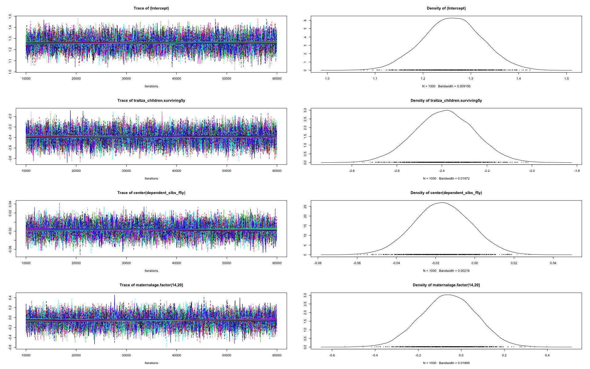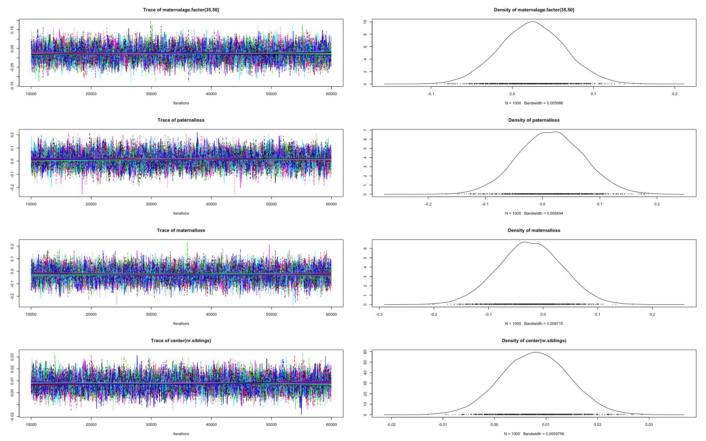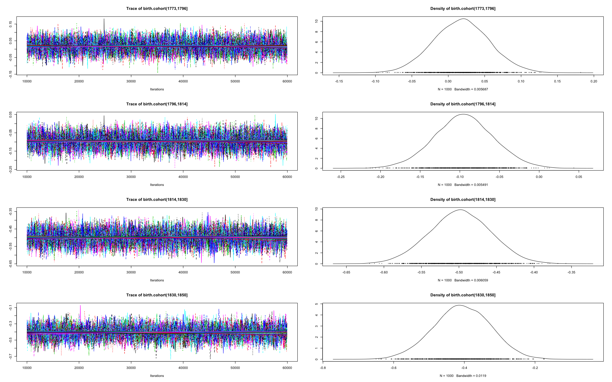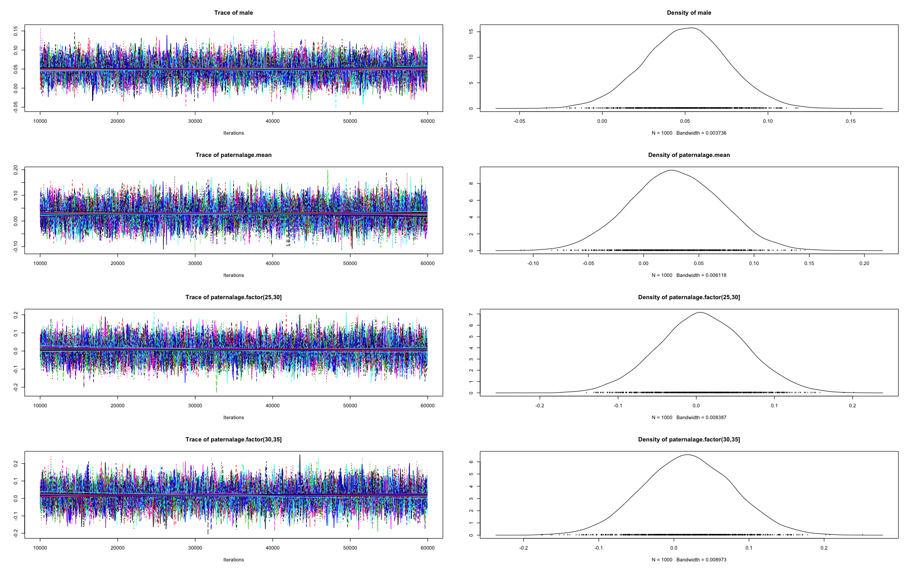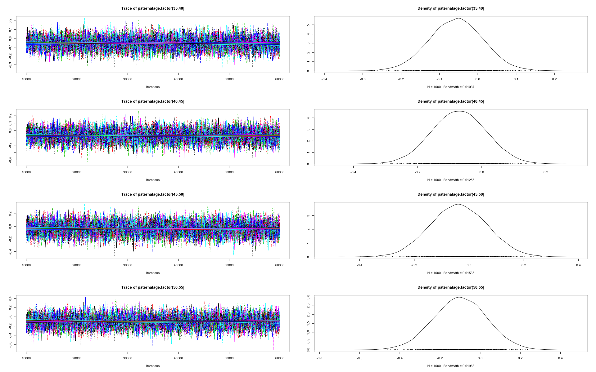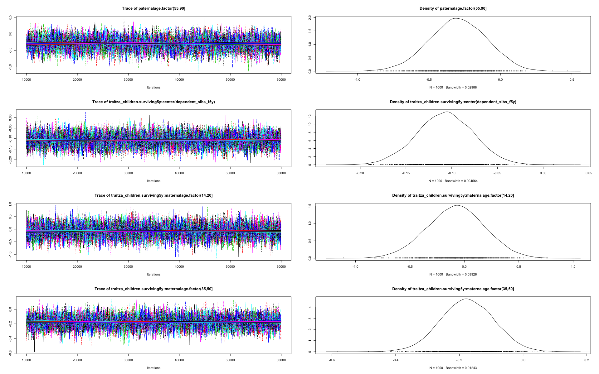 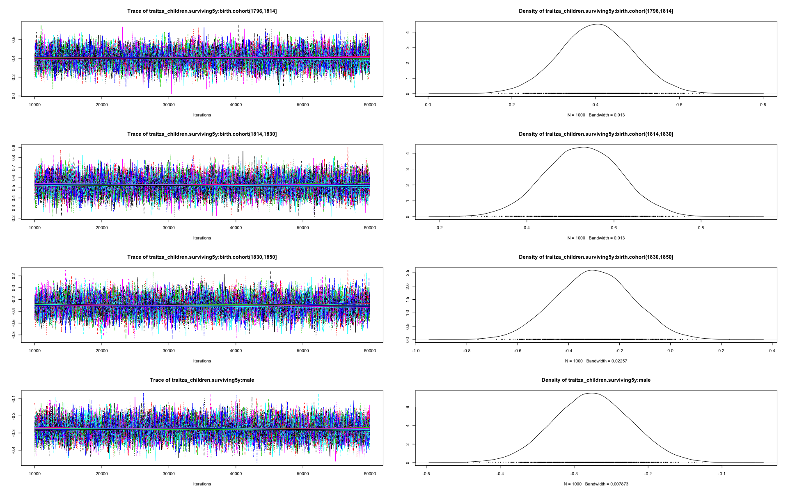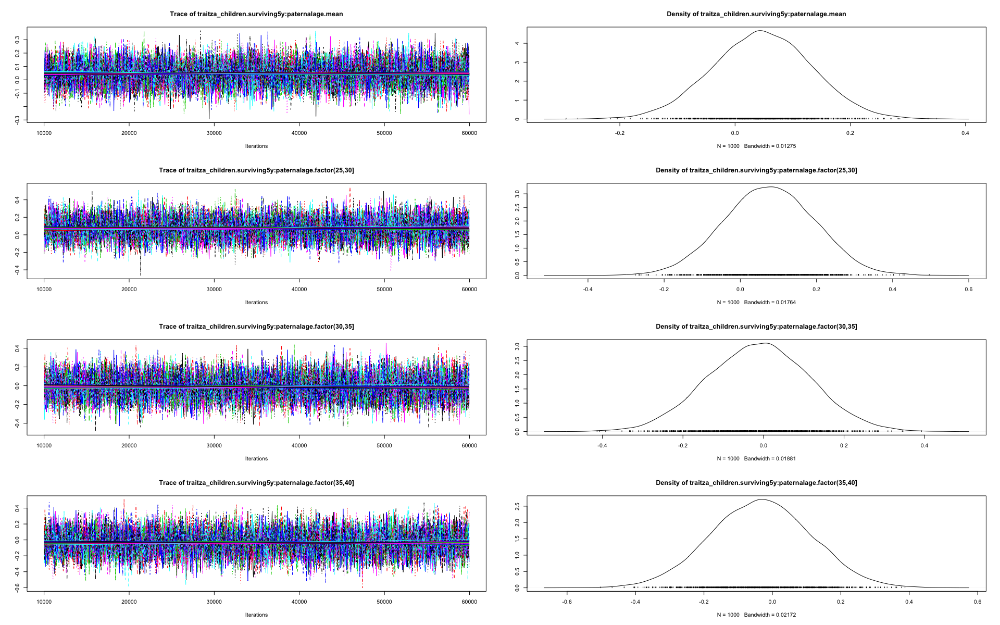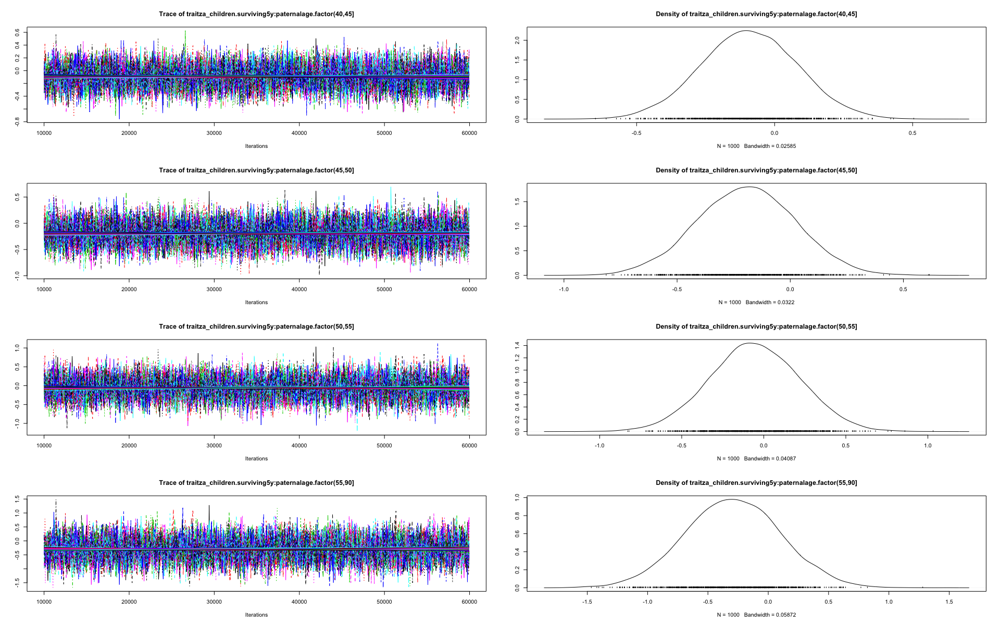
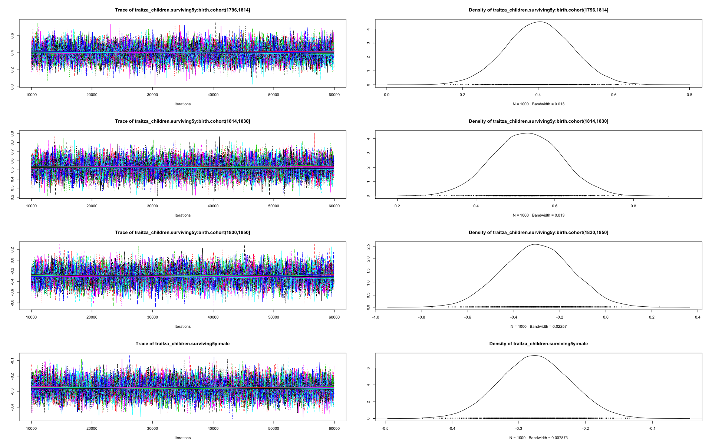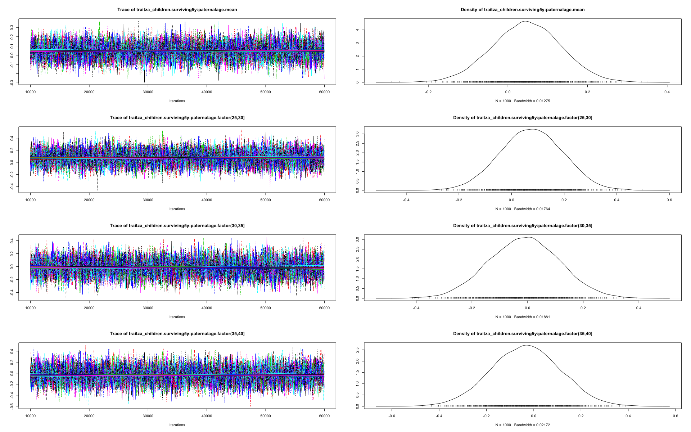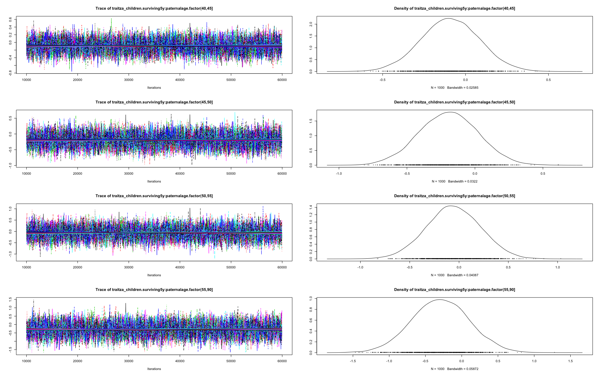
## NULL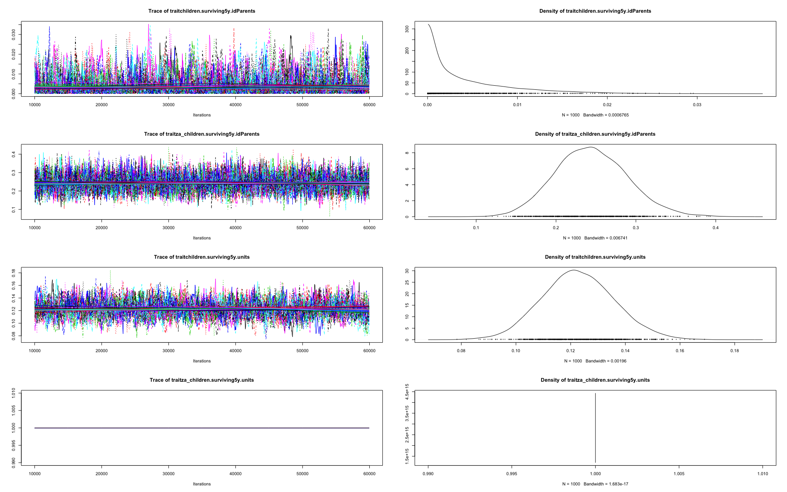
## NULL
## (Intercept)
## 9648
## traitza_children.surviving5y
## 14053
## center(dependent_sibs_f5y)
## 8246
## maternalage.factor(14,20]
## 8762
## maternalage.factor(35,50]
## 8081
## paternalloss
## 8150
## maternalloss
## 7234
## center(nr.siblings)
## 8415
## birth.cohort(1773,1796]
## 10304
## birth.cohort(1796,1814]
## 10514
## birth.cohort(1814,1830]
## 7710
## birth.cohort(1830,1850]
## 4720
## male
## 9178
## paternalage.mean
## 8757
## paternalage.factor(25,30]
## 8862
## paternalage.factor(30,35]
## 9400
## paternalage.factor(35,40]
## 8875
## paternalage.factor(40,45]
## 8884
## paternalage.factor(45,50]
## 8799
## paternalage.factor(50,55]
## 9027
## paternalage.factor(55,90]
## 6969
## traitza_children.surviving5y:center(dependent_sibs_f5y)
## 12751
## traitza_children.surviving5y:maternalage.factor(14,20]
## 14041
## traitza_children.surviving5y:maternalage.factor(35,50]
## 12956
## traitza_children.surviving5y:paternalloss
## 13294
## traitza_children.surviving5y:maternalloss
## 11524
## traitza_children.surviving5y:center(nr.siblings)
## 13428
## traitza_children.surviving5y:birth.cohort(1773,1796]
## 16171
## traitza_children.surviving5y:birth.cohort(1796,1814]
## 15458
## traitza_children.surviving5y:birth.cohort(1814,1830]
## 13770
## traitza_children.surviving5y:birth.cohort(1830,1850]
## 8961
## traitza_children.surviving5y:male
## 13934
## traitza_children.surviving5y:paternalage.mean
## 14893
## traitza_children.surviving5y:paternalage.factor(25,30]
## 14162
## traitza_children.surviving5y:paternalage.factor(30,35]
## 14066
## traitza_children.surviving5y:paternalage.factor(35,40]
## 13970
## traitza_children.surviving5y:paternalage.factor(40,45]
## 14414
## traitza_children.surviving5y:paternalage.factor(45,50]
## 13597
## traitza_children.surviving5y:paternalage.factor(50,55]
## 14273
## traitza_children.surviving5y:paternalage.factor(55,90]
## 12207
## traitchildren.surviving5y.idParents
## 2432
## traitza_children.surviving5y.idParents
## 6664
## traitchildren.surviving5y.units
## 2374
## traitza_children.surviving5y.units
## 0Linear effect
y10_diff_krmh = compute_and_plot_linear_response(krmh_Children_surviving5y_all_linear_controls, mcmcglmm_data = krmh.1)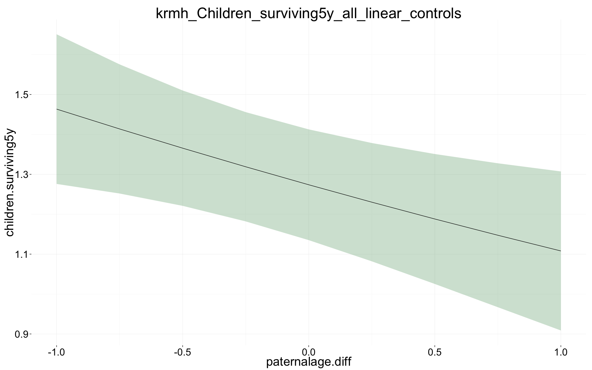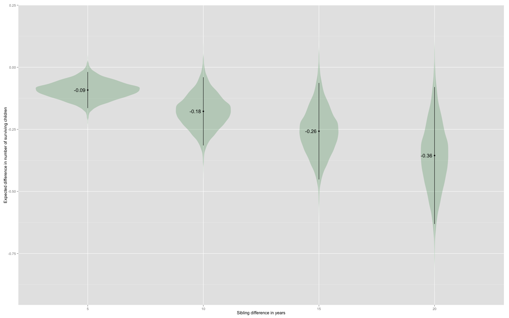
pander(y10_diff_krmh)| X. | mean | lower | upper |
|---|---|---|---|
| difference (father 10 years older) | -0.18 | -0.31 | -0.04 |
| quotient (father 10 years older) | 0.87 | 0.78 | 0.97 |
Diagnostics
post_process_mcmcglmm( krmh_Children_surviving5y_all_linear_controls )## Potential scale reduction factors:
##
## Point est.
## (Intercept) 1
## traitza_children.surviving5y 1
## center(dependent_sibs_f5y) 1
## maternalage.factor(14,20] 1
## maternalage.factor(35,50] 1
## paternalloss 1
## maternalloss 1
## center(nr.siblings) 1
## birth.cohort(1773,1796] 1
## birth.cohort(1796,1814] 1
## birth.cohort(1814,1830] 1
## birth.cohort(1830,1850] 1
## male 1
## paternalage.mean 1
## paternalage.diff 1
## traitza_children.surviving5y:center(dependent_sibs_f5y) 1
## traitza_children.surviving5y:maternalage.factor(14,20] 1
## traitza_children.surviving5y:maternalage.factor(35,50] 1
## traitza_children.surviving5y:paternalloss 1
## traitza_children.surviving5y:maternalloss 1
## traitza_children.surviving5y:center(nr.siblings) 1
## traitza_children.surviving5y:birth.cohort(1773,1796] 1
## traitza_children.surviving5y:birth.cohort(1796,1814] 1
## traitza_children.surviving5y:birth.cohort(1814,1830] 1
## traitza_children.surviving5y:birth.cohort(1830,1850] 1
## traitza_children.surviving5y:male 1
## traitza_children.surviving5y:paternalage.mean 1
## traitza_children.surviving5y:paternalage.diff 1
## Upper C.I.
## (Intercept) 1.00
## traitza_children.surviving5y 1.00
## center(dependent_sibs_f5y) 1.00
## maternalage.factor(14,20] 1.00
## maternalage.factor(35,50] 1.00
## paternalloss 1.00
## maternalloss 1.01
## center(nr.siblings) 1.00
## birth.cohort(1773,1796] 1.00
## birth.cohort(1796,1814] 1.00
## birth.cohort(1814,1830] 1.00
## birth.cohort(1830,1850] 1.01
## male 1.00
## paternalage.mean 1.00
## paternalage.diff 1.00
## traitza_children.surviving5y:center(dependent_sibs_f5y) 1.00
## traitza_children.surviving5y:maternalage.factor(14,20] 1.00
## traitza_children.surviving5y:maternalage.factor(35,50] 1.00
## traitza_children.surviving5y:paternalloss 1.00
## traitza_children.surviving5y:maternalloss 1.00
## traitza_children.surviving5y:center(nr.siblings) 1.00
## traitza_children.surviving5y:birth.cohort(1773,1796] 1.00
## traitza_children.surviving5y:birth.cohort(1796,1814] 1.00
## traitza_children.surviving5y:birth.cohort(1814,1830] 1.00
## traitza_children.surviving5y:birth.cohort(1830,1850] 1.01
## traitza_children.surviving5y:male 1.00
## traitza_children.surviving5y:paternalage.mean 1.00
## traitza_children.surviving5y:paternalage.diff 1.00
##
## Multivariate psrf
##
## 1.01
## Potential scale reduction factors:
##
## Point est. Upper C.I.
## traitchildren.surviving5y.idParents 1.01 1.01
## traitza_children.surviving5y.idParents 1.00 1.01
## traitchildren.surviving5y.units 1.01 1.02
##
## Multivariate psrf
##
## 1.01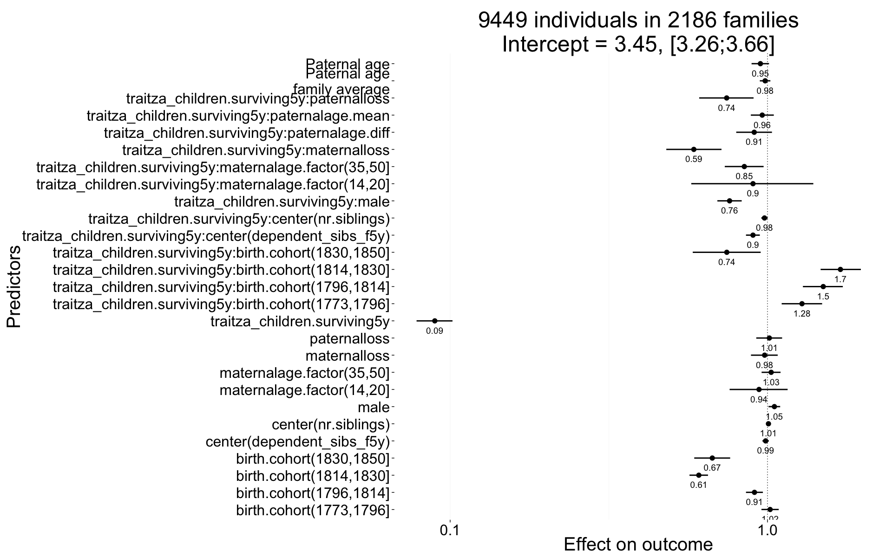
## NULL
##
## Iterations = 10001:59951
## Thinning interval = 50
## Number of chains = 15
## Sample size per chain = 1000
##
## 1. Empirical mean and standard deviation for each variable,
## plus standard error of the mean:
##
## Mean SD
## (Intercept) 1.23883 0.03513
## traitza_children.surviving5y -2.41467 0.07951
## center(dependent_sibs_f5y) -0.01365 0.01416
## maternalage.factor(14,20] -0.06330 0.12882
## maternalage.factor(35,50] 0.02660 0.04157
## paternalloss 0.01312 0.05744
## maternalloss -0.02143 0.05926
## center(nr.siblings) 0.00694 0.00653
## birth.cohort(1773,1796] 0.01897 0.03806
## birth.cohort(1796,1814] -0.09467 0.03739
## birth.cohort(1814,1830] -0.49852 0.04090
## birth.cohort(1830,1850] -0.40079 0.07942
## male 0.05003 0.02563
## paternalage.mean -0.01718 0.02300
## paternalage.diff -0.05168 0.03834
## traitza_children.surviving5y:center(dependent_sibs_f5y) -0.10534 0.03041
## traitza_children.surviving5y:maternalage.factor(14,20] -0.10643 0.26997
## traitza_children.surviving5y:maternalage.factor(35,50] -0.16890 0.08557
## traitza_children.surviving5y:paternalloss -0.29698 0.11985
## traitza_children.surviving5y:maternalloss -0.53397 0.12125
## traitza_children.surviving5y:center(nr.siblings) -0.02170 0.01409
## traitza_children.surviving5y:birth.cohort(1773,1796] 0.24971 0.08905
## traitza_children.surviving5y:birth.cohort(1796,1814] 0.40346 0.08698
## traitza_children.surviving5y:birth.cohort(1814,1830] 0.52978 0.08886
## traitza_children.surviving5y:birth.cohort(1830,1850] -0.29569 0.15082
## traitza_children.surviving5y:male -0.27490 0.05387
## traitza_children.surviving5y:paternalage.mean -0.03810 0.05046
## traitza_children.surviving5y:paternalage.diff -0.09609 0.07897
## Naive SE
## (Intercept) 0.0002869
## traitza_children.surviving5y 0.0006492
## center(dependent_sibs_f5y) 0.0001156
## maternalage.factor(14,20] 0.0010519
## maternalage.factor(35,50] 0.0003394
## paternalloss 0.0004690
## maternalloss 0.0004839
## center(nr.siblings) 0.0000533
## birth.cohort(1773,1796] 0.0003107
## birth.cohort(1796,1814] 0.0003053
## birth.cohort(1814,1830] 0.0003339
## birth.cohort(1830,1850] 0.0006485
## male 0.0002092
## paternalage.mean 0.0001878
## paternalage.diff 0.0003131
## traitza_children.surviving5y:center(dependent_sibs_f5y) 0.0002483
## traitza_children.surviving5y:maternalage.factor(14,20] 0.0022043
## traitza_children.surviving5y:maternalage.factor(35,50] 0.0006987
## traitza_children.surviving5y:paternalloss 0.0009786
## traitza_children.surviving5y:maternalloss 0.0009900
## traitza_children.surviving5y:center(nr.siblings) 0.0001151
## traitza_children.surviving5y:birth.cohort(1773,1796] 0.0007271
## traitza_children.surviving5y:birth.cohort(1796,1814] 0.0007102
## traitza_children.surviving5y:birth.cohort(1814,1830] 0.0007256
## traitza_children.surviving5y:birth.cohort(1830,1850] 0.0012314
## traitza_children.surviving5y:male 0.0004398
## traitza_children.surviving5y:paternalage.mean 0.0004120
## traitza_children.surviving5y:paternalage.diff 0.0006448
## Time-series SE
## (Intercept) 0.000426
## traitza_children.surviving5y 0.000743
## center(dependent_sibs_f5y) 0.000174
## maternalage.factor(14,20] 0.001499
## maternalage.factor(35,50] 0.000510
## paternalloss 0.000727
## maternalloss 0.000813
## center(nr.siblings) 0.000083
## birth.cohort(1773,1796] 0.000429
## birth.cohort(1796,1814] 0.000419
## birth.cohort(1814,1830] 0.000524
## birth.cohort(1830,1850] 0.001295
## male 0.000315
## paternalage.mean 0.000268
## paternalage.diff 0.000474
## traitza_children.surviving5y:center(dependent_sibs_f5y) 0.000298
## traitza_children.surviving5y:maternalage.factor(14,20] 0.002601
## traitza_children.surviving5y:maternalage.factor(35,50] 0.000813
## traitza_children.surviving5y:paternalloss 0.001175
## traitza_children.surviving5y:maternalloss 0.001231
## traitza_children.surviving5y:center(nr.siblings) 0.000137
## traitza_children.surviving5y:birth.cohort(1773,1796] 0.000817
## traitza_children.surviving5y:birth.cohort(1796,1814] 0.000787
## traitza_children.surviving5y:birth.cohort(1814,1830] 0.000868
## traitza_children.surviving5y:birth.cohort(1830,1850] 0.001782
## traitza_children.surviving5y:male 0.000518
## traitza_children.surviving5y:paternalage.mean 0.000473
## traitza_children.surviving5y:paternalage.diff 0.000753
##
## 2. Quantiles for each variable:
##
## 2.5% 25%
## (Intercept) 1.168960 1.21500
## traitza_children.surviving5y -2.568788 -2.46811
## center(dependent_sibs_f5y) -0.041562 -0.02321
## maternalage.factor(14,20] -0.320076 -0.15029
## maternalage.factor(35,50] -0.054991 -0.00119
## paternalloss -0.100736 -0.02536
## maternalloss -0.139768 -0.06118
## center(nr.siblings) -0.005917 0.00256
## birth.cohort(1773,1796] -0.054519 -0.00662
## birth.cohort(1796,1814] -0.168422 -0.11992
## birth.cohort(1814,1830] -0.578720 -0.52643
## birth.cohort(1830,1850] -0.557163 -0.45370
## male -0.000325 0.03297
## paternalage.mean -0.062885 -0.03246
## paternalage.diff -0.127375 -0.07738
## traitza_children.surviving5y:center(dependent_sibs_f5y) -0.164800 -0.12579
## traitza_children.surviving5y:maternalage.factor(14,20] -0.645992 -0.28287
## traitza_children.surviving5y:maternalage.factor(35,50] -0.337352 -0.22711
## traitza_children.surviving5y:paternalloss -0.534077 -0.37678
## traitza_children.surviving5y:maternalloss -0.775024 -0.61518
## traitza_children.surviving5y:center(nr.siblings) -0.048915 -0.03127
## traitza_children.surviving5y:birth.cohort(1773,1796] 0.076287 0.19005
## traitza_children.surviving5y:birth.cohort(1796,1814] 0.230714 0.34582
## traitza_children.surviving5y:birth.cohort(1814,1830] 0.356790 0.46930
## traitza_children.surviving5y:birth.cohort(1830,1850] -0.592558 -0.39668
## traitza_children.surviving5y:male -0.381111 -0.31117
## traitza_children.surviving5y:paternalage.mean -0.138391 -0.07164
## traitza_children.surviving5y:paternalage.diff -0.253371 -0.14930
## 50% 75%
## (Intercept) 1.23903 1.26227
## traitza_children.surviving5y -2.41409 -2.36060
## center(dependent_sibs_f5y) -0.01363 -0.00424
## maternalage.factor(14,20] -0.06147 0.02378
## maternalage.factor(35,50] 0.02665 0.05453
## paternalloss 0.01332 0.05200
## maternalloss -0.02081 0.01915
## center(nr.siblings) 0.00691 0.01133
## birth.cohort(1773,1796] 0.01903 0.04480
## birth.cohort(1796,1814] -0.09447 -0.06893
## birth.cohort(1814,1830] -0.49834 -0.47088
## birth.cohort(1830,1850] -0.40051 -0.34653
## male 0.05007 0.06733
## paternalage.mean -0.01704 -0.00165
## paternalage.diff -0.05144 -0.02549
## traitza_children.surviving5y:center(dependent_sibs_f5y) -0.10522 -0.08487
## traitza_children.surviving5y:maternalage.factor(14,20] -0.10518 0.07588
## traitza_children.surviving5y:maternalage.factor(35,50] -0.16817 -0.11074
## traitza_children.surviving5y:paternalloss -0.29621 -0.21650
## traitza_children.surviving5y:maternalloss -0.53460 -0.45230
## traitza_children.surviving5y:center(nr.siblings) -0.02185 -0.01201
## traitza_children.surviving5y:birth.cohort(1773,1796] 0.25026 0.31039
## traitza_children.surviving5y:birth.cohort(1796,1814] 0.40464 0.46082
## traitza_children.surviving5y:birth.cohort(1814,1830] 0.52926 0.58984
## traitza_children.surviving5y:birth.cohort(1830,1850] -0.29536 -0.19398
## traitza_children.surviving5y:male -0.27509 -0.23868
## traitza_children.surviving5y:paternalage.mean -0.03825 -0.00451
## traitza_children.surviving5y:paternalage.diff -0.09639 -0.04218
## 97.5%
## (Intercept) 1.306996
## traitza_children.surviving5y -2.260456
## center(dependent_sibs_f5y) 0.014420
## maternalage.factor(14,20] 0.184036
## maternalage.factor(35,50] 0.108490
## paternalloss 0.125275
## maternalloss 0.092898
## center(nr.siblings) 0.019789
## birth.cohort(1773,1796] 0.093269
## birth.cohort(1796,1814] -0.021682
## birth.cohort(1814,1830] -0.419011
## birth.cohort(1830,1850] -0.246990
## male 0.098939
## paternalage.mean 0.027467
## paternalage.diff 0.023738
## traitza_children.surviving5y:center(dependent_sibs_f5y) -0.045559
## traitza_children.surviving5y:maternalage.factor(14,20] 0.415722
## traitza_children.surviving5y:maternalage.factor(35,50] -0.002068
## traitza_children.surviving5y:paternalloss -0.064749
## traitza_children.surviving5y:maternalloss -0.295856
## traitza_children.surviving5y:center(nr.siblings) 0.006114
## traitza_children.surviving5y:birth.cohort(1773,1796] 0.422234
## traitza_children.surviving5y:birth.cohort(1796,1814] 0.573749
## traitza_children.surviving5y:birth.cohort(1814,1830] 0.707240
## traitza_children.surviving5y:birth.cohort(1830,1850] 0.000321
## traitza_children.surviving5y:male -0.168982
## traitza_children.surviving5y:paternalage.mean 0.060638
## traitza_children.surviving5y:paternalage.diff 0.056526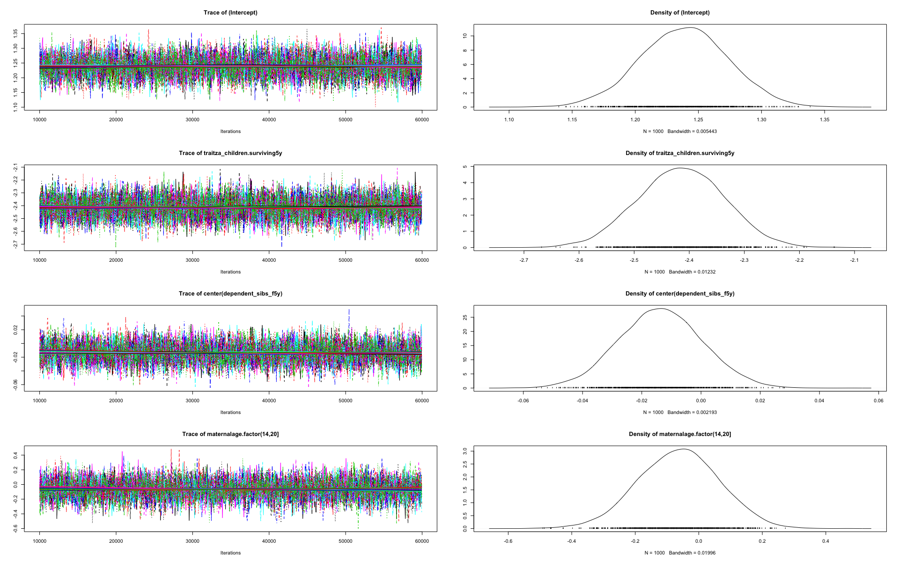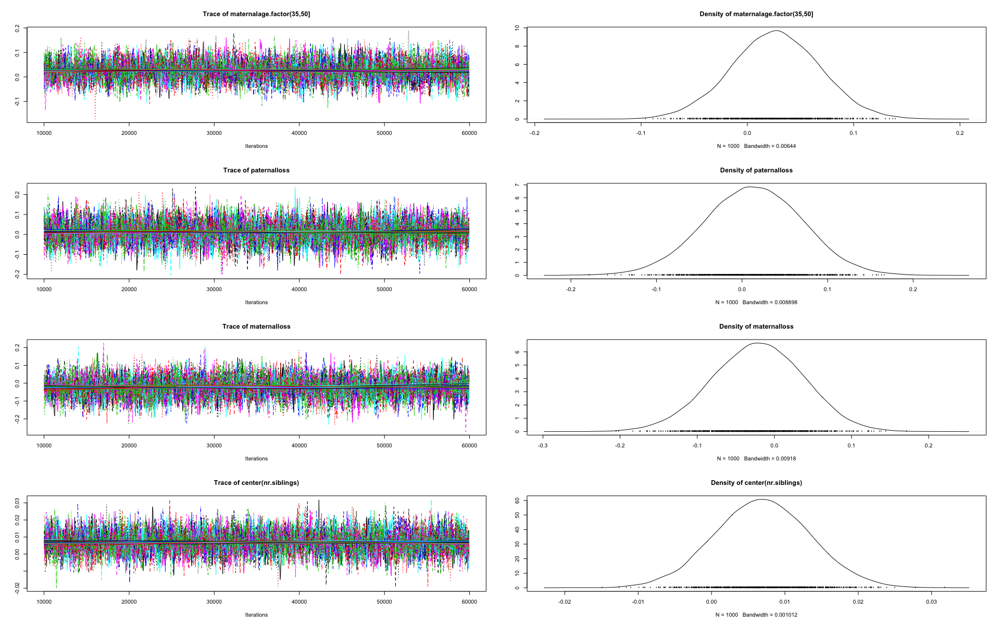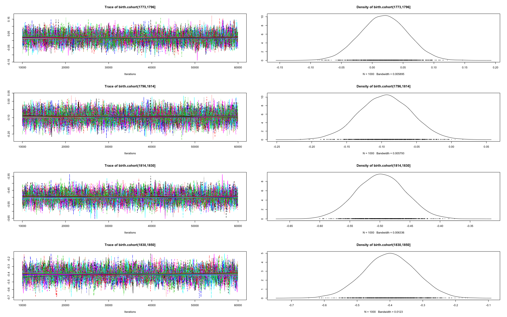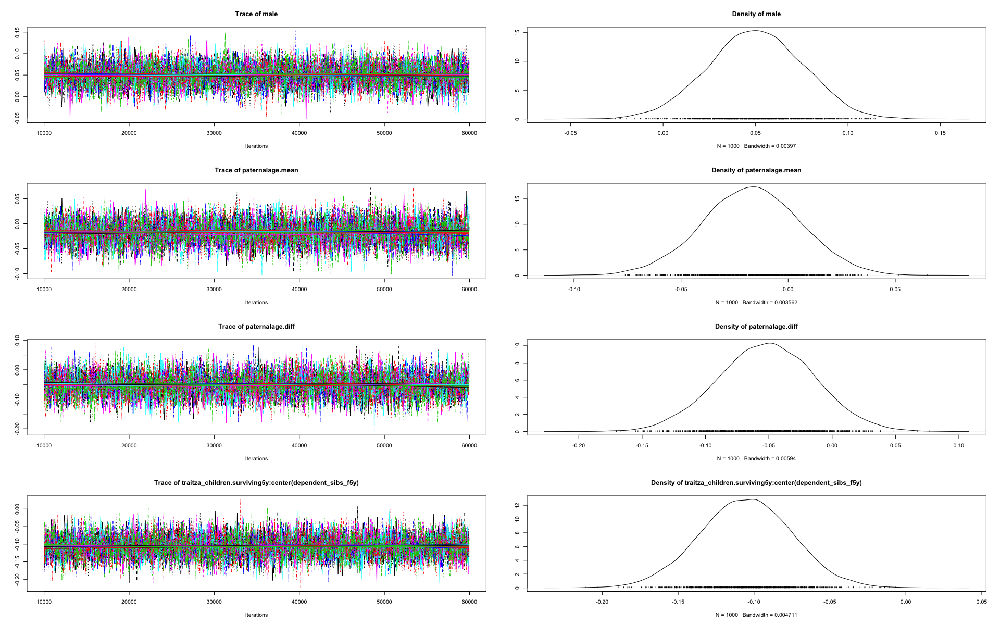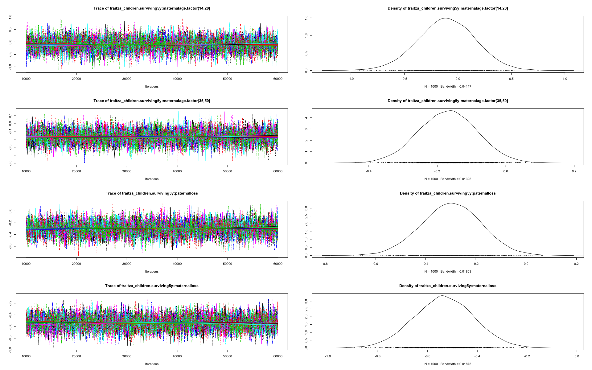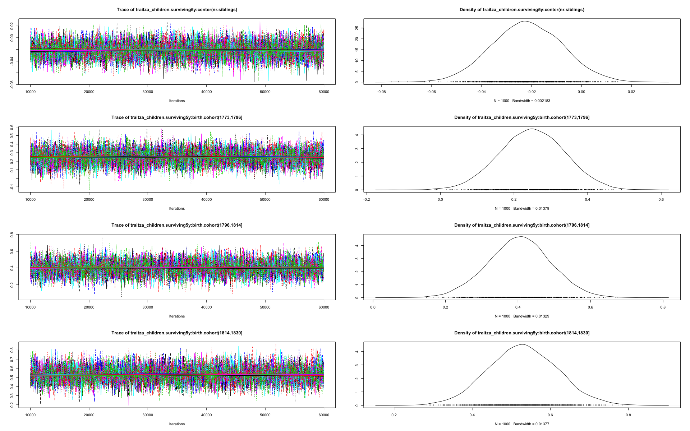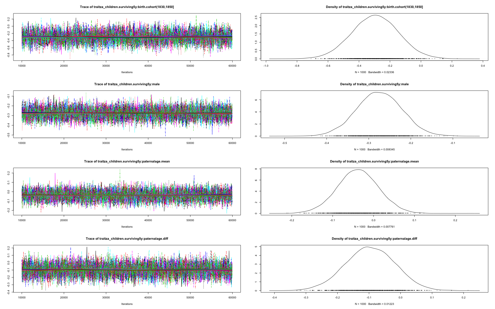
## NULL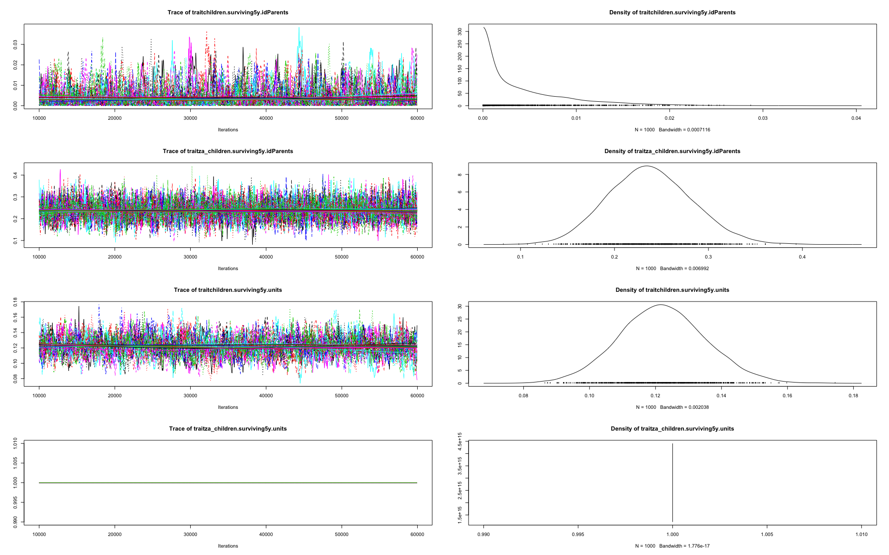
## NULL
## (Intercept)
## 7024
## traitza_children.surviving5y
## 11636
## center(dependent_sibs_f5y)
## 6708
## maternalage.factor(14,20]
## 7481
## maternalage.factor(35,50]
## 6691
## paternalloss
## 6281
## maternalloss
## 5377
## center(nr.siblings)
## 6344
## birth.cohort(1773,1796]
## 7965
## birth.cohort(1796,1814]
## 8028
## birth.cohort(1814,1830]
## 6149
## birth.cohort(1830,1850]
## 3820
## male
## 6835
## paternalage.mean
## 7627
## paternalage.diff
## 6591
## traitza_children.surviving5y:center(dependent_sibs_f5y)
## 10445
## traitza_children.surviving5y:maternalage.factor(14,20]
## 10977
## traitza_children.surviving5y:maternalage.factor(35,50]
## 11195
## traitza_children.surviving5y:paternalloss
## 10479
## traitza_children.surviving5y:maternalloss
## 9746
## traitza_children.surviving5y:center(nr.siblings)
## 10688
## traitza_children.surviving5y:birth.cohort(1773,1796]
## 11984
## traitza_children.surviving5y:birth.cohort(1796,1814]
## 12279
## traitza_children.surviving5y:birth.cohort(1814,1830]
## 10691
## traitza_children.surviving5y:birth.cohort(1830,1850]
## 7534
## traitza_children.surviving5y:male
## 10906
## traitza_children.surviving5y:paternalage.mean
## 11667
## traitza_children.surviving5y:paternalage.diff
## 11126
## traitchildren.surviving5y.idParents
## 1846
## traitza_children.surviving5y.idParents
## 5674
## traitchildren.surviving5y.units
## 1996
## traitza_children.surviving5y.units
## 0Québec
Few controls
rpqa_Children_all_boot = plot_factor_response(rpqa_Children_surviving5y_all_nonlinear, mcmcglmm_data = rpqa.1)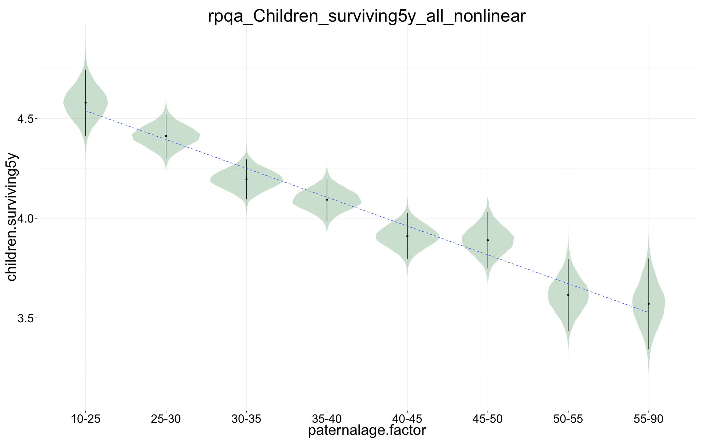
Diagnostics
post_process_mcmcglmm( rpqa_Children_surviving5y_all_nonlinear )## Potential scale reduction factors:
##
## Point est.
## (Intercept) 1
## traitza_children.surviving5y 1
## birth.cohort(1706,1723] 1
## birth.cohort(1723,1734] 1
## birth.cohort(1734,1743] 1
## male 1
## urban 1
## paternalage.mean 1
## paternalage.factor(25,30] 1
## paternalage.factor(30,35] 1
## paternalage.factor(35,40] 1
## paternalage.factor(40,45] 1
## paternalage.factor(45,50] 1
## paternalage.factor(50,55] 1
## paternalage.factor(55,90] 1
## traitza_children.surviving5y:birth.cohort(1706,1723] 1
## traitza_children.surviving5y:birth.cohort(1723,1734] 1
## traitza_children.surviving5y:birth.cohort(1734,1743] 1
## traitza_children.surviving5y:male 1
## traitza_children.surviving5y:urban 1
## traitza_children.surviving5y:paternalage.mean 1
## traitza_children.surviving5y:paternalage.factor(25,30] 1
## traitza_children.surviving5y:paternalage.factor(30,35] 1
## traitza_children.surviving5y:paternalage.factor(35,40] 1
## traitza_children.surviving5y:paternalage.factor(40,45] 1
## traitza_children.surviving5y:paternalage.factor(45,50] 1
## traitza_children.surviving5y:paternalage.factor(50,55] 1
## traitza_children.surviving5y:paternalage.factor(55,90] 1
## Upper C.I.
## (Intercept) 1
## traitza_children.surviving5y 1
## birth.cohort(1706,1723] 1
## birth.cohort(1723,1734] 1
## birth.cohort(1734,1743] 1
## male 1
## urban 1
## paternalage.mean 1
## paternalage.factor(25,30] 1
## paternalage.factor(30,35] 1
## paternalage.factor(35,40] 1
## paternalage.factor(40,45] 1
## paternalage.factor(45,50] 1
## paternalage.factor(50,55] 1
## paternalage.factor(55,90] 1
## traitza_children.surviving5y:birth.cohort(1706,1723] 1
## traitza_children.surviving5y:birth.cohort(1723,1734] 1
## traitza_children.surviving5y:birth.cohort(1734,1743] 1
## traitza_children.surviving5y:male 1
## traitza_children.surviving5y:urban 1
## traitza_children.surviving5y:paternalage.mean 1
## traitza_children.surviving5y:paternalage.factor(25,30] 1
## traitza_children.surviving5y:paternalage.factor(30,35] 1
## traitza_children.surviving5y:paternalage.factor(35,40] 1
## traitza_children.surviving5y:paternalage.factor(40,45] 1
## traitza_children.surviving5y:paternalage.factor(45,50] 1
## traitza_children.surviving5y:paternalage.factor(50,55] 1
## traitza_children.surviving5y:paternalage.factor(55,90] 1
##
## Multivariate psrf
##
## 1
## Potential scale reduction factors:
##
## Point est. Upper C.I.
## traitchildren.surviving5y.idParents 1 1.00
## traitza_children.surviving5y.idParents 1 1.00
## traitchildren.surviving5y.units 1 1.01
##
## Multivariate psrf
##
## 1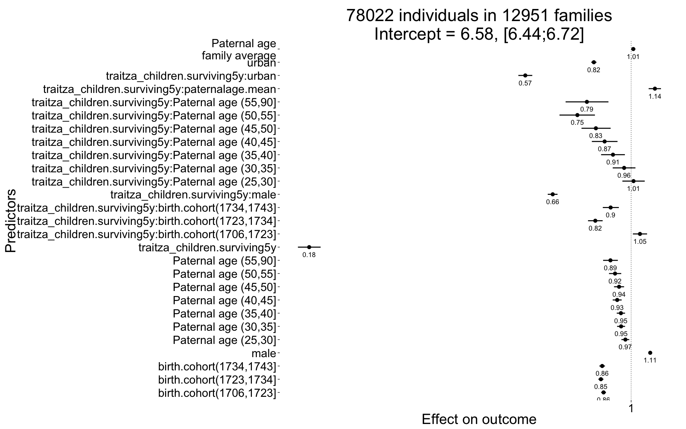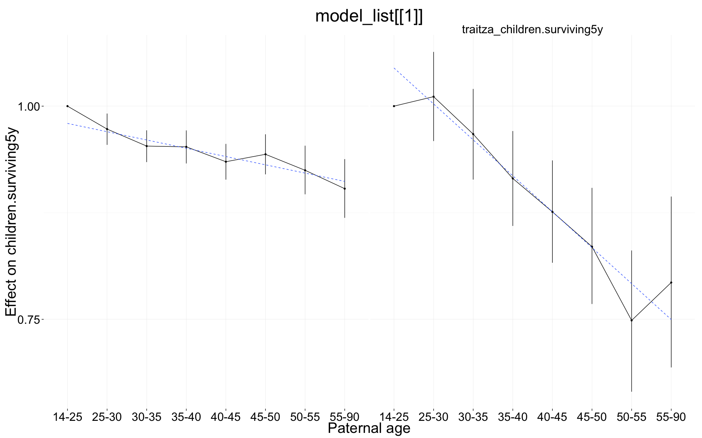
##
## Iterations = 10001:109901
## Thinning interval = 100
## Number of chains = 15
## Sample size per chain = 1000
##
## 1. Empirical mean and standard deviation for each variable,
## plus standard error of the mean:
##
## Mean SD
## (Intercept) 1.8841 0.01283
## traitza_children.surviving5y -1.7320 0.03719
## birth.cohort(1706,1723] -0.1484 0.00786
## birth.cohort(1723,1734] -0.1626 0.00823
## birth.cohort(1734,1743] -0.1558 0.00909
## male 0.1026 0.00550
## urban -0.2007 0.00849
## paternalage.mean 0.0116 0.00690
## paternalage.factor(25,30] -0.0310 0.01279
## paternalage.factor(30,35] -0.0541 0.01298
## paternalage.factor(35,40] -0.0551 0.01352
## paternalage.factor(40,45] -0.0751 0.01464
## paternalage.factor(45,50] -0.0650 0.01642
## paternalage.factor(50,55] -0.0865 0.02008
## paternalage.factor(55,90] -0.1114 0.02427
## traitza_children.surviving5y:birth.cohort(1706,1723] 0.0477 0.02309
## traitza_children.surviving5y:birth.cohort(1723,1734] -0.1925 0.02389
## traitza_children.surviving5y:birth.cohort(1734,1743] -0.1100 0.02625
## traitza_children.surviving5y:male -0.4221 0.01584
## traitza_children.surviving5y:urban -0.5695 0.02264
## traitza_children.surviving5y:paternalage.mean 0.1277 0.01998
## traitza_children.surviving5y:paternalage.factor(25,30] 0.0129 0.03670
## traitza_children.surviving5y:paternalage.factor(30,35] -0.0377 0.03709
## traitza_children.surviving5y:paternalage.factor(35,40] -0.0975 0.03909
## traitza_children.surviving5y:paternalage.factor(40,45] -0.1426 0.04187
## traitza_children.surviving5y:paternalage.factor(45,50] -0.1891 0.04749
## traitza_children.surviving5y:paternalage.factor(50,55] -0.2891 0.05768
## traitza_children.surviving5y:paternalage.factor(55,90] -0.2376 0.07039
## Naive SE
## (Intercept) 0.0001048
## traitza_children.surviving5y 0.0003036
## birth.cohort(1706,1723] 0.0000641
## birth.cohort(1723,1734] 0.0000672
## birth.cohort(1734,1743] 0.0000742
## male 0.0000449
## urban 0.0000693
## paternalage.mean 0.0000564
## paternalage.factor(25,30] 0.0001044
## paternalage.factor(30,35] 0.0001060
## paternalage.factor(35,40] 0.0001104
## paternalage.factor(40,45] 0.0001195
## paternalage.factor(45,50] 0.0001341
## paternalage.factor(50,55] 0.0001640
## paternalage.factor(55,90] 0.0001981
## traitza_children.surviving5y:birth.cohort(1706,1723] 0.0001885
## traitza_children.surviving5y:birth.cohort(1723,1734] 0.0001951
## traitza_children.surviving5y:birth.cohort(1734,1743] 0.0002143
## traitza_children.surviving5y:male 0.0001293
## traitza_children.surviving5y:urban 0.0001848
## traitza_children.surviving5y:paternalage.mean 0.0001632
## traitza_children.surviving5y:paternalage.factor(25,30] 0.0002996
## traitza_children.surviving5y:paternalage.factor(30,35] 0.0003028
## traitza_children.surviving5y:paternalage.factor(35,40] 0.0003192
## traitza_children.surviving5y:paternalage.factor(40,45] 0.0003418
## traitza_children.surviving5y:paternalage.factor(45,50] 0.0003878
## traitza_children.surviving5y:paternalage.factor(50,55] 0.0004709
## traitza_children.surviving5y:paternalage.factor(55,90] 0.0005748
## Time-series SE
## (Intercept) 0.0001057
## traitza_children.surviving5y 0.0003015
## birth.cohort(1706,1723] 0.0000641
## birth.cohort(1723,1734] 0.0000679
## birth.cohort(1734,1743] 0.0000756
## male 0.0000452
## urban 0.0000717
## paternalage.mean 0.0000575
## paternalage.factor(25,30] 0.0001043
## paternalage.factor(30,35] 0.0001081
## paternalage.factor(35,40] 0.0001095
## paternalage.factor(40,45] 0.0001204
## paternalage.factor(45,50] 0.0001348
## paternalage.factor(50,55] 0.0001642
## paternalage.factor(55,90] 0.0001990
## traitza_children.surviving5y:birth.cohort(1706,1723] 0.0001876
## traitza_children.surviving5y:birth.cohort(1723,1734] 0.0001951
## traitza_children.surviving5y:birth.cohort(1734,1743] 0.0002140
## traitza_children.surviving5y:male 0.0001300
## traitza_children.surviving5y:urban 0.0001847
## traitza_children.surviving5y:paternalage.mean 0.0001638
## traitza_children.surviving5y:paternalage.factor(25,30] 0.0002985
## traitza_children.surviving5y:paternalage.factor(30,35] 0.0003040
## traitza_children.surviving5y:paternalage.factor(35,40] 0.0003203
## traitza_children.surviving5y:paternalage.factor(40,45] 0.0003402
## traitza_children.surviving5y:paternalage.factor(45,50] 0.0003882
## traitza_children.surviving5y:paternalage.factor(50,55] 0.0004859
## traitza_children.surviving5y:paternalage.factor(55,90] 0.0005909
##
## 2. Quantiles for each variable:
##
## 2.5% 25%
## (Intercept) 1.85895 1.87536
## traitza_children.surviving5y -1.80316 -1.75712
## birth.cohort(1706,1723] -0.16389 -0.15370
## birth.cohort(1723,1734] -0.17845 -0.16817
## birth.cohort(1734,1743] -0.17367 -0.16195
## male 0.09185 0.09892
## urban -0.21725 -0.20642
## paternalage.mean -0.00215 0.00698
## paternalage.factor(25,30] -0.05603 -0.03980
## paternalage.factor(30,35] -0.07986 -0.06280
## paternalage.factor(35,40] -0.08174 -0.06423
## paternalage.factor(40,45] -0.10392 -0.08505
## paternalage.factor(45,50] -0.09665 -0.07605
## paternalage.factor(50,55] -0.12552 -0.10028
## paternalage.factor(55,90] -0.15801 -0.12801
## traitza_children.surviving5y:birth.cohort(1706,1723] 0.00249 0.03214
## traitza_children.surviving5y:birth.cohort(1723,1734] -0.23875 -0.20855
## traitza_children.surviving5y:birth.cohort(1734,1743] -0.16056 -0.12782
## traitza_children.surviving5y:male -0.45362 -0.43267
## traitza_children.surviving5y:urban -0.61416 -0.58491
## traitza_children.surviving5y:paternalage.mean 0.08813 0.11438
## traitza_children.surviving5y:paternalage.factor(25,30] -0.05953 -0.01168
## traitza_children.surviving5y:paternalage.factor(30,35] -0.11071 -0.06262
## traitza_children.surviving5y:paternalage.factor(35,40] -0.17447 -0.12399
## traitza_children.surviving5y:paternalage.factor(40,45] -0.22534 -0.17065
## traitza_children.surviving5y:paternalage.factor(45,50] -0.28128 -0.22105
## traitza_children.surviving5y:paternalage.factor(50,55] -0.40362 -0.32769
## traitza_children.surviving5y:paternalage.factor(55,90] -0.37649 -0.28493
## 50% 75%
## (Intercept) 1.8841 1.8928
## traitza_children.surviving5y -1.7320 -1.7073
## birth.cohort(1706,1723] -0.1483 -0.1432
## birth.cohort(1723,1734] -0.1627 -0.1571
## birth.cohort(1734,1743] -0.1558 -0.1495
## male 0.1027 0.1064
## urban -0.2007 -0.1949
## paternalage.mean 0.0116 0.0162
## paternalage.factor(25,30] -0.0310 -0.0225
## paternalage.factor(30,35] -0.0539 -0.0453
## paternalage.factor(35,40] -0.0549 -0.0460
## paternalage.factor(40,45] -0.0750 -0.0651
## paternalage.factor(45,50] -0.0650 -0.0539
## paternalage.factor(50,55] -0.0866 -0.0731
## paternalage.factor(55,90] -0.1114 -0.0947
## traitza_children.surviving5y:birth.cohort(1706,1723] 0.0475 0.0632
## traitza_children.surviving5y:birth.cohort(1723,1734] -0.1928 -0.1766
## traitza_children.surviving5y:birth.cohort(1734,1743] -0.1102 -0.0924
## traitza_children.surviving5y:male -0.4218 -0.4113
## traitza_children.surviving5y:urban -0.5694 -0.5542
## traitza_children.surviving5y:paternalage.mean 0.1279 0.1413
## traitza_children.surviving5y:paternalage.factor(25,30] 0.0128 0.0379
## traitza_children.surviving5y:paternalage.factor(30,35] -0.0377 -0.0125
## traitza_children.surviving5y:paternalage.factor(35,40] -0.0976 -0.0707
## traitza_children.surviving5y:paternalage.factor(40,45] -0.1427 -0.1141
## traitza_children.surviving5y:paternalage.factor(45,50] -0.1897 -0.1574
## traitza_children.surviving5y:paternalage.factor(50,55] -0.2892 -0.2499
## traitza_children.surviving5y:paternalage.factor(55,90] -0.2380 -0.1894
## 97.5%
## (Intercept) 1.90964
## traitza_children.surviving5y -1.65785
## birth.cohort(1706,1723] -0.13308
## birth.cohort(1723,1734] -0.14655
## birth.cohort(1734,1743] -0.13791
## male 0.11331
## urban -0.18419
## paternalage.mean 0.02510
## paternalage.factor(25,30] -0.00598
## paternalage.factor(30,35] -0.02875
## paternalage.factor(35,40] -0.02861
## paternalage.factor(40,45] -0.04622
## paternalage.factor(45,50] -0.03286
## paternalage.factor(50,55] -0.04668
## paternalage.factor(55,90] -0.06426
## traitza_children.surviving5y:birth.cohort(1706,1723] 0.09317
## traitza_children.surviving5y:birth.cohort(1723,1734] -0.14539
## traitza_children.surviving5y:birth.cohort(1734,1743] -0.05779
## traitza_children.surviving5y:male -0.39132
## traitza_children.surviving5y:urban -0.52499
## traitza_children.surviving5y:paternalage.mean 0.16659
## traitza_children.surviving5y:paternalage.factor(25,30] 0.08408
## traitza_children.surviving5y:paternalage.factor(30,35] 0.03453
## traitza_children.surviving5y:paternalage.factor(35,40] -0.02157
## traitza_children.surviving5y:paternalage.factor(40,45] -0.06123
## traitza_children.surviving5y:paternalage.factor(45,50] -0.09471
## traitza_children.surviving5y:paternalage.factor(50,55] -0.17529
## traitza_children.surviving5y:paternalage.factor(55,90] -0.09890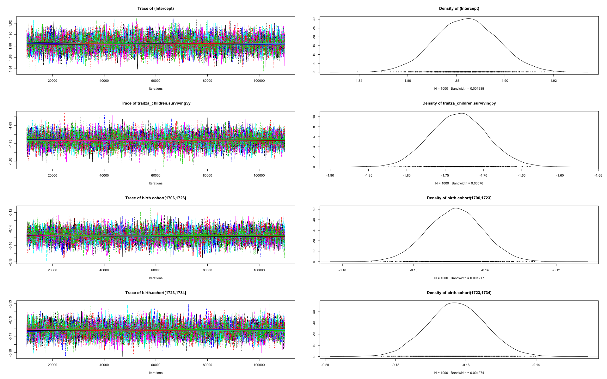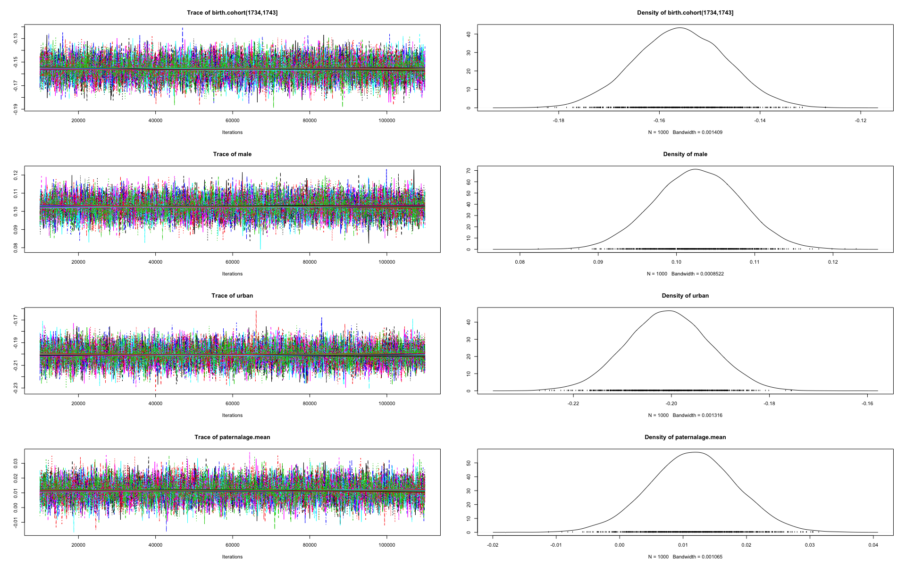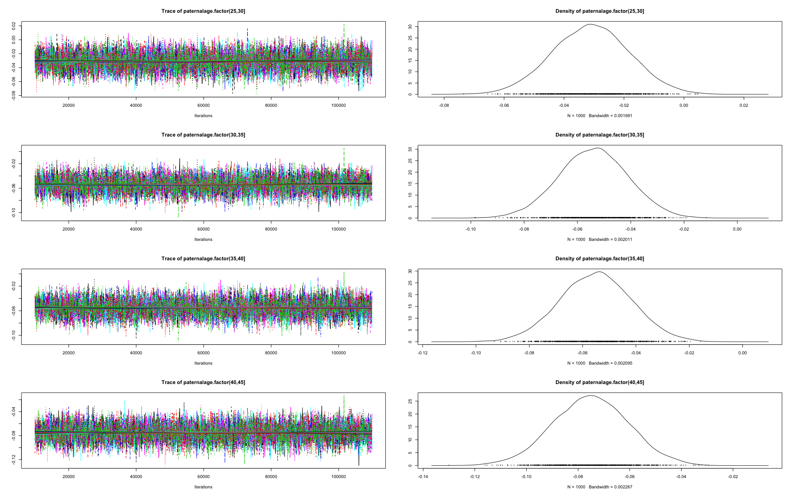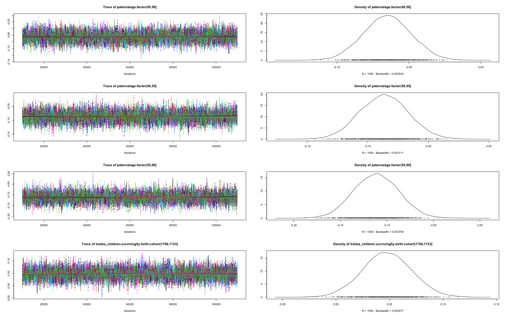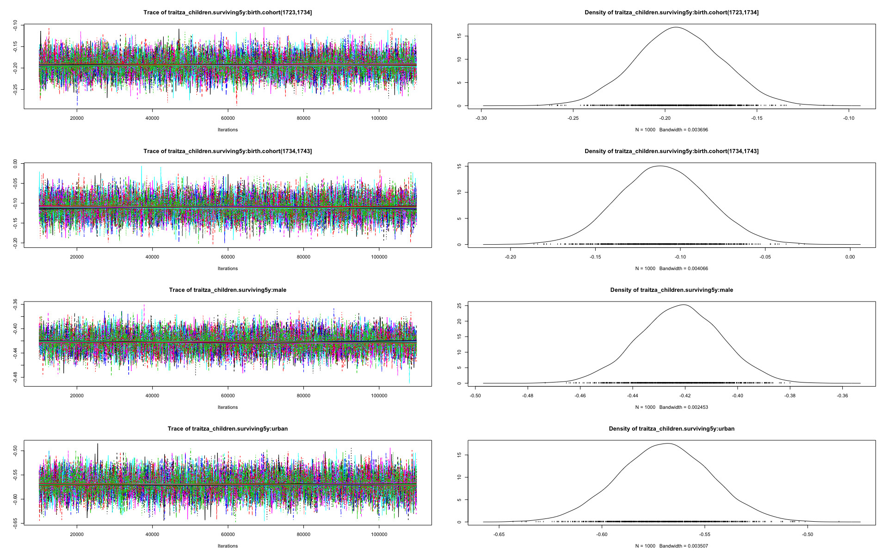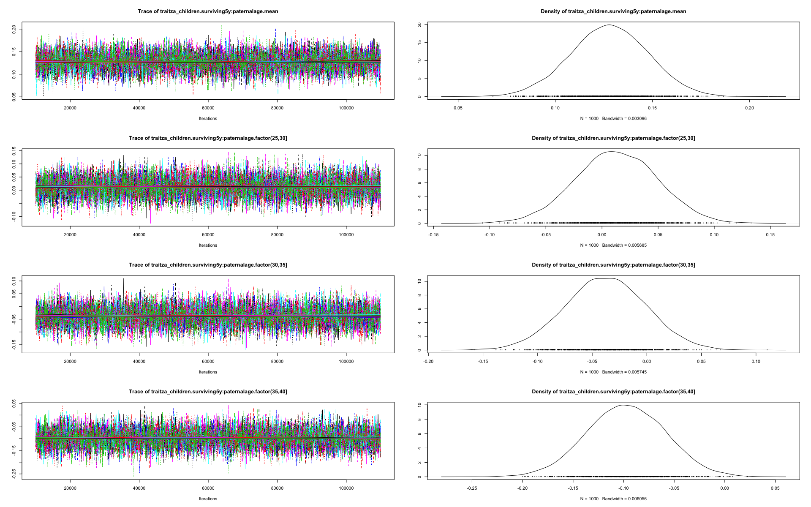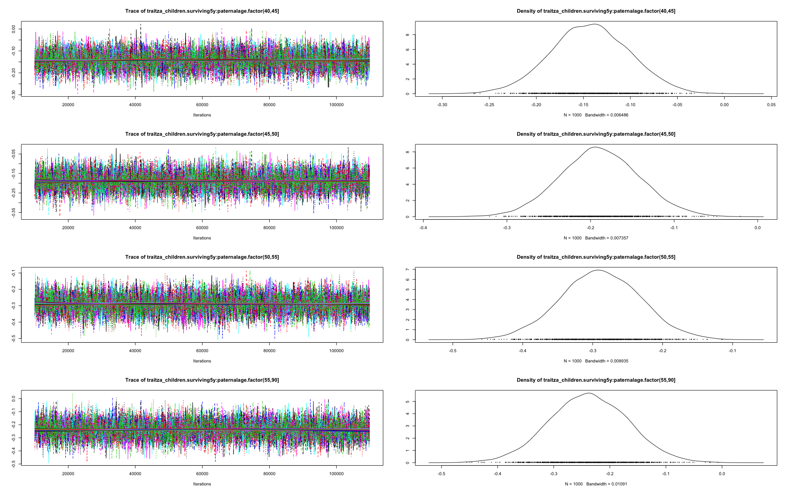
## NULL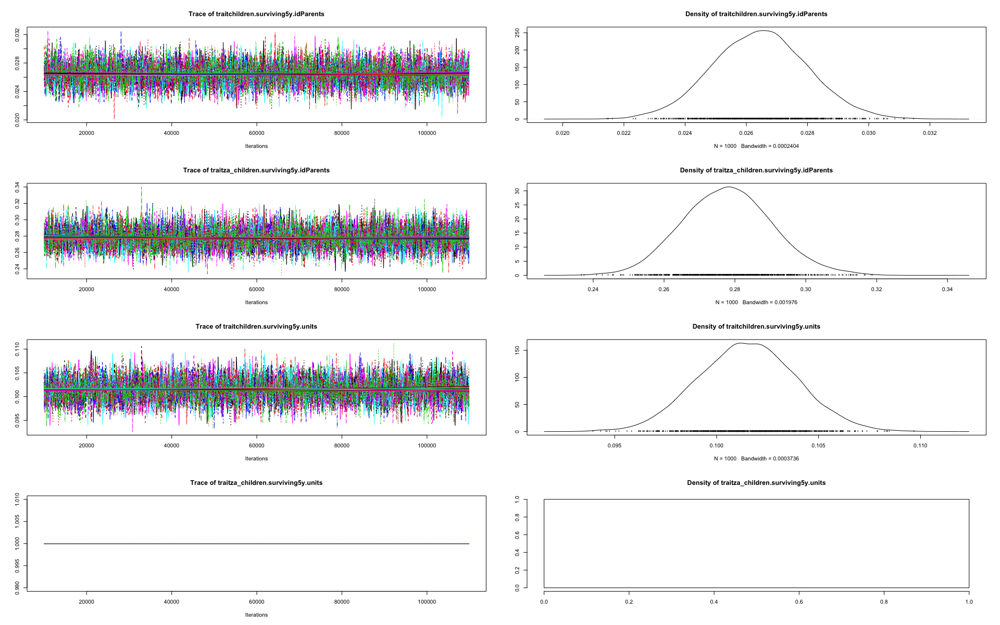
## NULL
## (Intercept)
## 14870
## traitza_children.surviving5y
## 15307
## birth.cohort(1706,1723]
## 15262
## birth.cohort(1723,1734]
## 14711
## birth.cohort(1734,1743]
## 14542
## male
## 14904
## urban
## 14139
## paternalage.mean
## 14542
## paternalage.factor(25,30]
## 15117
## paternalage.factor(30,35]
## 14617
## paternalage.factor(35,40]
## 15382
## paternalage.factor(40,45]
## 14915
## paternalage.factor(45,50]
## 14896
## paternalage.factor(50,55]
## 15161
## paternalage.factor(55,90]
## 15028
## traitza_children.surviving5y:birth.cohort(1706,1723]
## 15151
## traitza_children.surviving5y:birth.cohort(1723,1734]
## 15012
## traitza_children.surviving5y:birth.cohort(1734,1743]
## 15169
## traitza_children.surviving5y:male
## 14915
## traitza_children.surviving5y:urban
## 15144
## traitza_children.surviving5y:paternalage.mean
## 14931
## traitza_children.surviving5y:paternalage.factor(25,30]
## 15175
## traitza_children.surviving5y:paternalage.factor(30,35]
## 14939
## traitza_children.surviving5y:paternalage.factor(35,40]
## 14985
## traitza_children.surviving5y:paternalage.factor(40,45]
## 15342
## traitza_children.surviving5y:paternalage.factor(45,50]
## 15286
## traitza_children.surviving5y:paternalage.factor(50,55]
## 14531
## traitza_children.surviving5y:paternalage.factor(55,90]
## 14392
## traitchildren.surviving5y.idParents
## 10661
## traitza_children.surviving5y.idParents
## 13472
## traitchildren.surviving5y.units
## 9302
## traitza_children.surviving5y.units
## 0Many controls
rpqa_Children_all_ctrl_boot = plot_factor_response(rpqa_Children_surviving5y_all_nonlinear_controls, mcmcglmm_data = rpqa.1)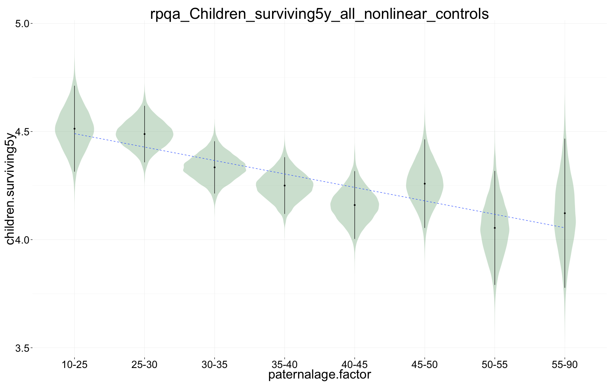
Diagnostics
post_process_mcmcglmm( rpqa_Children_surviving5y_all_nonlinear_controls )## Potential scale reduction factors:
##
## Point est.
## (Intercept) 1
## traitza_children.surviving5y 1
## center(dependent_sibs_f5y) 1
## maternalage.factor(14,20] 1
## maternalage.factor(35,50] 1
## paternalloss 1
## maternalloss 1
## center(nr.siblings) 1
## birth.cohort(1706,1723] 1
## birth.cohort(1723,1734] 1
## birth.cohort(1734,1743] 1
## male 1
## urban 1
## paternalage.mean 1
## paternalage.factor(25,30] 1
## paternalage.factor(30,35] 1
## paternalage.factor(35,40] 1
## paternalage.factor(40,45] 1
## paternalage.factor(45,50] 1
## paternalage.factor(50,55] 1
## paternalage.factor(55,90] 1
## traitza_children.surviving5y:center(dependent_sibs_f5y) 1
## traitza_children.surviving5y:maternalage.factor(14,20] 1
## traitza_children.surviving5y:maternalage.factor(35,50] 1
## traitza_children.surviving5y:paternalloss 1
## traitza_children.surviving5y:maternalloss 1
## traitza_children.surviving5y:center(nr.siblings) 1
## traitza_children.surviving5y:birth.cohort(1706,1723] 1
## traitza_children.surviving5y:birth.cohort(1723,1734] 1
## traitza_children.surviving5y:birth.cohort(1734,1743] 1
## traitza_children.surviving5y:male 1
## traitza_children.surviving5y:urban 1
## traitza_children.surviving5y:paternalage.mean 1
## traitza_children.surviving5y:paternalage.factor(25,30] 1
## traitza_children.surviving5y:paternalage.factor(30,35] 1
## traitza_children.surviving5y:paternalage.factor(35,40] 1
## traitza_children.surviving5y:paternalage.factor(40,45] 1
## traitza_children.surviving5y:paternalage.factor(45,50] 1
## traitza_children.surviving5y:paternalage.factor(50,55] 1
## traitza_children.surviving5y:paternalage.factor(55,90] 1
## Upper C.I.
## (Intercept) 1
## traitza_children.surviving5y 1
## center(dependent_sibs_f5y) 1
## maternalage.factor(14,20] 1
## maternalage.factor(35,50] 1
## paternalloss 1
## maternalloss 1
## center(nr.siblings) 1
## birth.cohort(1706,1723] 1
## birth.cohort(1723,1734] 1
## birth.cohort(1734,1743] 1
## male 1
## urban 1
## paternalage.mean 1
## paternalage.factor(25,30] 1
## paternalage.factor(30,35] 1
## paternalage.factor(35,40] 1
## paternalage.factor(40,45] 1
## paternalage.factor(45,50] 1
## paternalage.factor(50,55] 1
## paternalage.factor(55,90] 1
## traitza_children.surviving5y:center(dependent_sibs_f5y) 1
## traitza_children.surviving5y:maternalage.factor(14,20] 1
## traitza_children.surviving5y:maternalage.factor(35,50] 1
## traitza_children.surviving5y:paternalloss 1
## traitza_children.surviving5y:maternalloss 1
## traitza_children.surviving5y:center(nr.siblings) 1
## traitza_children.surviving5y:birth.cohort(1706,1723] 1
## traitza_children.surviving5y:birth.cohort(1723,1734] 1
## traitza_children.surviving5y:birth.cohort(1734,1743] 1
## traitza_children.surviving5y:male 1
## traitza_children.surviving5y:urban 1
## traitza_children.surviving5y:paternalage.mean 1
## traitza_children.surviving5y:paternalage.factor(25,30] 1
## traitza_children.surviving5y:paternalage.factor(30,35] 1
## traitza_children.surviving5y:paternalage.factor(35,40] 1
## traitza_children.surviving5y:paternalage.factor(40,45] 1
## traitza_children.surviving5y:paternalage.factor(45,50] 1
## traitza_children.surviving5y:paternalage.factor(50,55] 1
## traitza_children.surviving5y:paternalage.factor(55,90] 1
##
## Multivariate psrf
##
## 1.01
## Potential scale reduction factors:
##
## Point est. Upper C.I.
## traitchildren.surviving5y.idParents 1 1
## traitza_children.surviving5y.idParents 1 1
## traitchildren.surviving5y.units 1 1
##
## Multivariate psrf
##
## 1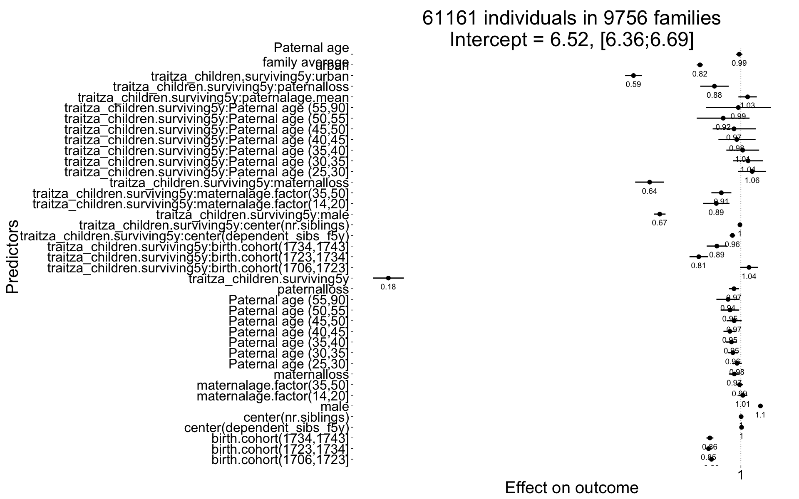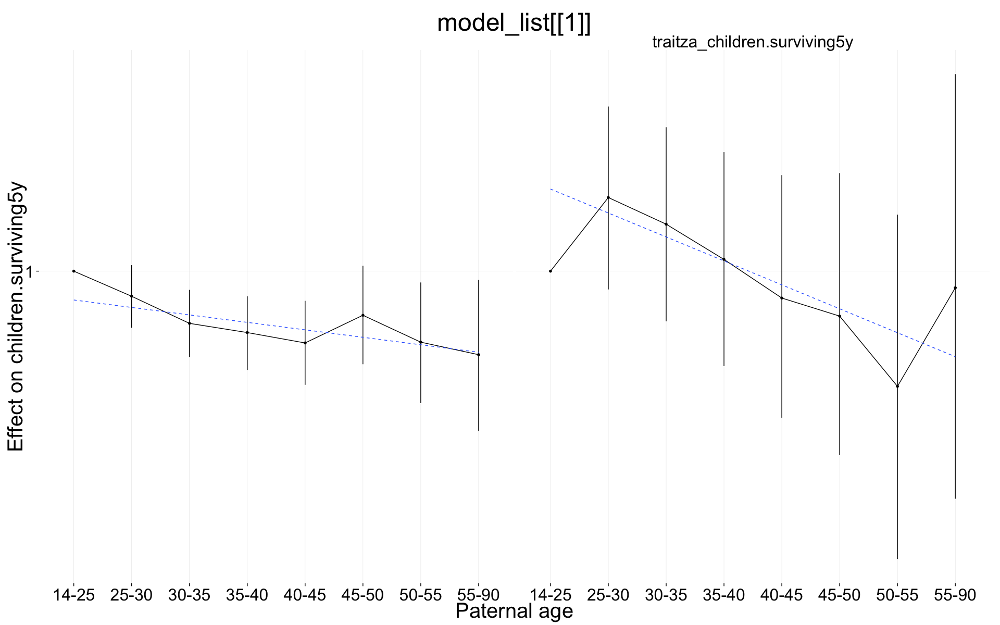
##
## Iterations = 10001:109901
## Thinning interval = 100
## Number of chains = 15
## Sample size per chain = 1000
##
## 1. Empirical mean and standard deviation for each variable,
## plus standard error of the mean:
##
## Mean SD
## (Intercept) 1.87521 0.01560
## traitza_children.surviving5y -1.74064 0.04563
## center(dependent_sibs_f5y) 0.00338 0.00293
## maternalage.factor(14,20] 0.00954 0.01361
## maternalage.factor(35,50] -0.00614 0.01062
## paternalloss -0.03398 0.01519
## maternalloss -0.03231 0.01614
## center(nr.siblings) 0.00131 0.00120
## birth.cohort(1706,1723] -0.14520 0.00909
## birth.cohort(1723,1734] -0.15964 0.00953
## birth.cohort(1734,1743] -0.15308 0.01032
## male 0.09654 0.00626
## urban -0.20200 0.00954
## paternalage.mean -0.00810 0.00957
## paternalage.factor(25,30] -0.01903 0.01457
## paternalage.factor(30,35] -0.03962 0.01545
## paternalage.factor(35,40] -0.04676 0.01698
## paternalage.factor(40,45] -0.05440 0.01942
## paternalage.factor(45,50] -0.03340 0.02280
## paternalage.factor(50,55] -0.05396 0.02771
## paternalage.factor(55,90] -0.06342 0.03451
## traitza_children.surviving5y:center(dependent_sibs_f5y) -0.04175 0.00832
## traitza_children.surviving5y:maternalage.factor(14,20] -0.12141 0.03955
## traitza_children.surviving5y:maternalage.factor(35,50] -0.09649 0.03002
## traitza_children.surviving5y:paternalloss -0.13059 0.04245
## traitza_children.surviving5y:maternalloss -0.45037 0.04293
## traitza_children.surviving5y:center(nr.siblings) -0.00471 0.00347
## traitza_children.surviving5y:birth.cohort(1706,1723] 0.04007 0.02629
## traitza_children.surviving5y:birth.cohort(1723,1734] -0.20808 0.02770
## traitza_children.surviving5y:birth.cohort(1734,1743] -0.11875 0.03002
## traitza_children.surviving5y:male -0.40075 0.01746
## traitza_children.surviving5y:urban -0.52972 0.02548
## traitza_children.surviving5y:paternalage.mean 0.03307 0.02754
## traitza_children.surviving5y:paternalage.factor(25,30] 0.05528 0.04243
## traitza_children.surviving5y:paternalage.factor(30,35] 0.03569 0.04497
## traitza_children.surviving5y:paternalage.factor(35,40] 0.00912 0.04933
## traitza_children.surviving5y:paternalage.factor(40,45] -0.01988 0.05613
## traitza_children.surviving5y:paternalage.factor(45,50] -0.03351 0.06538
## traitza_children.surviving5y:paternalage.factor(50,55] -0.08755 0.07947
## traitza_children.surviving5y:paternalage.factor(55,90] -0.01219 0.09837
## Naive SE
## (Intercept) 0.00012735
## traitza_children.surviving5y 0.00037256
## center(dependent_sibs_f5y) 0.00002395
## maternalage.factor(14,20] 0.00011110
## maternalage.factor(35,50] 0.00008672
## paternalloss 0.00012406
## maternalloss 0.00013177
## center(nr.siblings) 0.00000983
## birth.cohort(1706,1723] 0.00007419
## birth.cohort(1723,1734] 0.00007781
## birth.cohort(1734,1743] 0.00008424
## male 0.00005112
## urban 0.00007790
## paternalage.mean 0.00007810
## paternalage.factor(25,30] 0.00011893
## paternalage.factor(30,35] 0.00012617
## paternalage.factor(35,40] 0.00013865
## paternalage.factor(40,45] 0.00015858
## paternalage.factor(45,50] 0.00018620
## paternalage.factor(50,55] 0.00022629
## paternalage.factor(55,90] 0.00028180
## traitza_children.surviving5y:center(dependent_sibs_f5y) 0.00006796
## traitza_children.surviving5y:maternalage.factor(14,20] 0.00032293
## traitza_children.surviving5y:maternalage.factor(35,50] 0.00024508
## traitza_children.surviving5y:paternalloss 0.00034664
## traitza_children.surviving5y:maternalloss 0.00035050
## traitza_children.surviving5y:center(nr.siblings) 0.00002835
## traitza_children.surviving5y:birth.cohort(1706,1723] 0.00021468
## traitza_children.surviving5y:birth.cohort(1723,1734] 0.00022615
## traitza_children.surviving5y:birth.cohort(1734,1743] 0.00024513
## traitza_children.surviving5y:male 0.00014260
## traitza_children.surviving5y:urban 0.00020808
## traitza_children.surviving5y:paternalage.mean 0.00022485
## traitza_children.surviving5y:paternalage.factor(25,30] 0.00034640
## traitza_children.surviving5y:paternalage.factor(30,35] 0.00036716
## traitza_children.surviving5y:paternalage.factor(35,40] 0.00040279
## traitza_children.surviving5y:paternalage.factor(40,45] 0.00045833
## traitza_children.surviving5y:paternalage.factor(45,50] 0.00053383
## traitza_children.surviving5y:paternalage.factor(50,55] 0.00064885
## traitza_children.surviving5y:paternalage.factor(55,90] 0.00080323
## Time-series SE
## (Intercept) 0.00012855
## traitza_children.surviving5y 0.00037539
## center(dependent_sibs_f5y) 0.00002526
## maternalage.factor(14,20] 0.00011310
## maternalage.factor(35,50] 0.00008554
## paternalloss 0.00012627
## maternalloss 0.00013719
## center(nr.siblings) 0.00000996
## birth.cohort(1706,1723] 0.00007471
## birth.cohort(1723,1734] 0.00008071
## birth.cohort(1734,1743] 0.00008418
## male 0.00005054
## urban 0.00008360
## paternalage.mean 0.00007865
## paternalage.factor(25,30] 0.00011456
## paternalage.factor(30,35] 0.00012683
## paternalage.factor(35,40] 0.00013995
## paternalage.factor(40,45] 0.00016764
## paternalage.factor(45,50] 0.00019176
## paternalage.factor(50,55] 0.00023249
## paternalage.factor(55,90] 0.00028336
## traitza_children.surviving5y:center(dependent_sibs_f5y) 0.00006893
## traitza_children.surviving5y:maternalage.factor(14,20] 0.00032016
## traitza_children.surviving5y:maternalage.factor(35,50] 0.00024204
## traitza_children.surviving5y:paternalloss 0.00034755
## traitza_children.surviving5y:maternalloss 0.00036161
## traitza_children.surviving5y:center(nr.siblings) 0.00002845
## traitza_children.surviving5y:birth.cohort(1706,1723] 0.00021354
## traitza_children.surviving5y:birth.cohort(1723,1734] 0.00022038
## traitza_children.surviving5y:birth.cohort(1734,1743] 0.00025480
## traitza_children.surviving5y:male 0.00014174
## traitza_children.surviving5y:urban 0.00020077
## traitza_children.surviving5y:paternalage.mean 0.00022093
## traitza_children.surviving5y:paternalage.factor(25,30] 0.00034580
## traitza_children.surviving5y:paternalage.factor(30,35] 0.00036798
## traitza_children.surviving5y:paternalage.factor(35,40] 0.00040315
## traitza_children.surviving5y:paternalage.factor(40,45] 0.00045829
## traitza_children.surviving5y:paternalage.factor(45,50] 0.00053739
## traitza_children.surviving5y:paternalage.factor(50,55] 0.00065481
## traitza_children.surviving5y:paternalage.factor(55,90] 0.00079252
##
## 2. Quantiles for each variable:
##
## 2.5% 25%
## (Intercept) 1.84515 1.864688
## traitza_children.surviving5y -1.83054 -1.771669
## center(dependent_sibs_f5y) -0.00242 0.001435
## maternalage.factor(14,20] -0.01672 0.000295
## maternalage.factor(35,50] -0.02700 -0.013357
## paternalloss -0.06352 -0.044400
## maternalloss -0.06418 -0.043153
## center(nr.siblings) -0.00105 0.000496
## birth.cohort(1706,1723] -0.16308 -0.151305
## birth.cohort(1723,1734] -0.17829 -0.166039
## birth.cohort(1734,1743] -0.17330 -0.160003
## male 0.08413 0.092306
## urban -0.22102 -0.208356
## paternalage.mean -0.02716 -0.014452
## paternalage.factor(25,30] -0.04741 -0.028703
## paternalage.factor(30,35] -0.07007 -0.050154
## paternalage.factor(35,40] -0.07996 -0.058484
## paternalage.factor(40,45] -0.09211 -0.067576
## paternalage.factor(45,50] -0.07826 -0.048783
## paternalage.factor(50,55] -0.10855 -0.072853
## paternalage.factor(55,90] -0.13088 -0.086597
## traitza_children.surviving5y:center(dependent_sibs_f5y) -0.05797 -0.047476
## traitza_children.surviving5y:maternalage.factor(14,20] -0.19886 -0.148218
## traitza_children.surviving5y:maternalage.factor(35,50] -0.15482 -0.116539
## traitza_children.surviving5y:paternalloss -0.21390 -0.159472
## traitza_children.surviving5y:maternalloss -0.53571 -0.478897
## traitza_children.surviving5y:center(nr.siblings) -0.01147 -0.007056
## traitza_children.surviving5y:birth.cohort(1706,1723] -0.01179 0.022357
## traitza_children.surviving5y:birth.cohort(1723,1734] -0.26305 -0.226592
## traitza_children.surviving5y:birth.cohort(1734,1743] -0.17842 -0.138851
## traitza_children.surviving5y:male -0.43469 -0.412572
## traitza_children.surviving5y:urban -0.57985 -0.546609
## traitza_children.surviving5y:paternalage.mean -0.02133 0.014430
## traitza_children.surviving5y:paternalage.factor(25,30] -0.02744 0.026454
## traitza_children.surviving5y:paternalage.factor(30,35] -0.05320 0.005170
## traitza_children.surviving5y:paternalage.factor(35,40] -0.08714 -0.023897
## traitza_children.surviving5y:paternalage.factor(40,45] -0.13037 -0.057732
## traitza_children.surviving5y:paternalage.factor(45,50] -0.16223 -0.077400
## traitza_children.surviving5y:paternalage.factor(50,55] -0.24326 -0.141158
## traitza_children.surviving5y:paternalage.factor(55,90] -0.20241 -0.079097
## 50% 75%
## (Intercept) 1.87526 1.88554
## traitza_children.surviving5y -1.74074 -1.70993
## center(dependent_sibs_f5y) 0.00339 0.00533
## maternalage.factor(14,20] 0.00956 0.01860
## maternalage.factor(35,50] -0.00617 0.00100
## paternalloss -0.03403 -0.02366
## maternalloss -0.03244 -0.02143
## center(nr.siblings) 0.00130 0.00212
## birth.cohort(1706,1723] -0.14515 -0.13911
## birth.cohort(1723,1734] -0.15959 -0.15326
## birth.cohort(1734,1743] -0.15318 -0.14608
## male 0.09656 0.10079
## urban -0.20190 -0.19556
## paternalage.mean -0.00807 -0.00163
## paternalage.factor(25,30] -0.01903 -0.00908
## paternalage.factor(30,35] -0.03955 -0.02924
## paternalage.factor(35,40] -0.04651 -0.03527
## paternalage.factor(40,45] -0.05438 -0.04104
## paternalage.factor(45,50] -0.03341 -0.01783
## paternalage.factor(50,55] -0.05379 -0.03521
## paternalage.factor(55,90] -0.06327 -0.04012
## traitza_children.surviving5y:center(dependent_sibs_f5y) -0.04171 -0.03610
## traitza_children.surviving5y:maternalage.factor(14,20] -0.12121 -0.09429
## traitza_children.surviving5y:maternalage.factor(35,50] -0.09650 -0.07638
## traitza_children.surviving5y:paternalloss -0.13055 -0.10211
## traitza_children.surviving5y:maternalloss -0.45048 -0.42127
## traitza_children.surviving5y:center(nr.siblings) -0.00473 -0.00233
## traitza_children.surviving5y:birth.cohort(1706,1723] 0.04014 0.05792
## traitza_children.surviving5y:birth.cohort(1723,1734] -0.20805 -0.18938
## traitza_children.surviving5y:birth.cohort(1734,1743] -0.11860 -0.09852
## traitza_children.surviving5y:male -0.40070 -0.38905
## traitza_children.surviving5y:urban -0.53022 -0.51275
## traitza_children.surviving5y:paternalage.mean 0.03313 0.05166
## traitza_children.surviving5y:paternalage.factor(25,30] 0.05577 0.08409
## traitza_children.surviving5y:paternalage.factor(30,35] 0.03558 0.06638
## traitza_children.surviving5y:paternalage.factor(35,40] 0.00887 0.04247
## traitza_children.surviving5y:paternalage.factor(40,45] -0.02037 0.01833
## traitza_children.surviving5y:paternalage.factor(45,50] -0.03406 0.01074
## traitza_children.surviving5y:paternalage.factor(50,55] -0.08725 -0.03369
## traitza_children.surviving5y:paternalage.factor(55,90] -0.01260 0.05462
## 97.5%
## (Intercept) 1.906247
## traitza_children.surviving5y -1.651338
## center(dependent_sibs_f5y) 0.009170
## maternalage.factor(14,20] 0.036405
## maternalage.factor(35,50] 0.014822
## paternalloss -0.004160
## maternalloss -0.000815
## center(nr.siblings) 0.003660
## birth.cohort(1706,1723] -0.127431
## birth.cohort(1723,1734] -0.140961
## birth.cohort(1734,1743] -0.132552
## male 0.108834
## urban -0.183684
## paternalage.mean 0.010495
## paternalage.factor(25,30] 0.009111
## paternalage.factor(30,35] -0.009081
## paternalage.factor(35,40] -0.013466
## paternalage.factor(40,45] -0.016375
## paternalage.factor(45,50] 0.011458
## paternalage.factor(50,55] -0.000184
## paternalage.factor(55,90] 0.004953
## traitza_children.surviving5y:center(dependent_sibs_f5y) -0.025465
## traitza_children.surviving5y:maternalage.factor(14,20] -0.044135
## traitza_children.surviving5y:maternalage.factor(35,50] -0.037540
## traitza_children.surviving5y:paternalloss -0.047512
## traitza_children.surviving5y:maternalloss -0.366640
## traitza_children.surviving5y:center(nr.siblings) 0.002192
## traitza_children.surviving5y:birth.cohort(1706,1723] 0.091305
## traitza_children.surviving5y:birth.cohort(1723,1734] -0.153461
## traitza_children.surviving5y:birth.cohort(1734,1743] -0.060328
## traitza_children.surviving5y:male -0.366426
## traitza_children.surviving5y:urban -0.478944
## traitza_children.surviving5y:paternalage.mean 0.087039
## traitza_children.surviving5y:paternalage.factor(25,30] 0.138840
## traitza_children.surviving5y:paternalage.factor(30,35] 0.123862
## traitza_children.surviving5y:paternalage.factor(35,40] 0.105571
## traitza_children.surviving5y:paternalage.factor(40,45] 0.090437
## traitza_children.surviving5y:paternalage.factor(45,50] 0.094907
## traitza_children.surviving5y:paternalage.factor(50,55] 0.068780
## traitza_children.surviving5y:paternalage.factor(55,90] 0.178682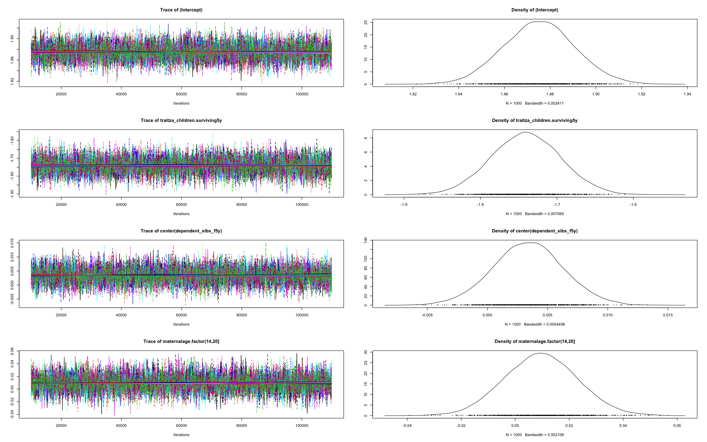
## NULL## NULL
## (Intercept)
## 14755
## traitza_children.surviving5y
## 14828
## center(dependent_sibs_f5y)
## 13755
## maternalage.factor(14,20]
## 14570
## maternalage.factor(35,50]
## 16063
## paternalloss
## 14568
## maternalloss
## 14044
## center(nr.siblings)
## 14826
## birth.cohort(1706,1723]
## 14900
## birth.cohort(1723,1734]
## 14184
## birth.cohort(1734,1743]
## 15159
## male
## 15546
## urban
## 13223
## paternalage.mean
## 15058
## paternalage.factor(25,30]
## 17775
## paternalage.factor(30,35]
## 15025
## paternalage.factor(35,40]
## 14982
## paternalage.factor(40,45]
## 14295
## paternalage.factor(45,50]
## 14487
## paternalage.factor(50,55]
## 14723
## paternalage.factor(55,90]
## 14890
## traitza_children.surviving5y:center(dependent_sibs_f5y)
## 14724
## traitza_children.surviving5y:maternalage.factor(14,20]
## 15292
## traitza_children.surviving5y:maternalage.factor(35,50]
## 15486
## traitza_children.surviving5y:paternalloss
## 14953
## traitza_children.surviving5y:maternalloss
## 14335
## traitza_children.surviving5y:center(nr.siblings)
## 14940
## traitza_children.surviving5y:birth.cohort(1706,1723]
## 15169
## traitza_children.surviving5y:birth.cohort(1723,1734]
## 16153
## traitza_children.surviving5y:birth.cohort(1734,1743]
## 14551
## traitza_children.surviving5y:male
## 15261
## traitza_children.surviving5y:urban
## 16596
## traitza_children.surviving5y:paternalage.mean
## 15830
## traitza_children.surviving5y:paternalage.factor(25,30]
## 15073
## traitza_children.surviving5y:paternalage.factor(30,35]
## 15005
## traitza_children.surviving5y:paternalage.factor(35,40]
## 15018
## traitza_children.surviving5y:paternalage.factor(40,45]
## 15054
## traitza_children.surviving5y:paternalage.factor(45,50]
## 14895
## traitza_children.surviving5y:paternalage.factor(50,55]
## 14819
## traitza_children.surviving5y:paternalage.factor(55,90]
## 15507
## traitchildren.surviving5y.idParents
## 10564
## traitza_children.surviving5y.idParents
## 13564
## traitchildren.surviving5y.units
## 8551
## traitza_children.surviving5y.units
## 0Linear effect
y10_diff_rpqa = compute_and_plot_linear_response(rpqa_Children_surviving5y_all_linear_controls, mcmcglmm_data = rpqa.1)pander(y10_diff_rpqa)| X. | mean | lower | upper |
|---|---|---|---|
| difference (father 10 years older) | -0.19 | -0.28 | -0.09 |
| quotient (father 10 years older) | 0.96 | 0.94 | 0.98 |
Diagnostics
post_process_mcmcglmm( rpqa_Children_surviving5y_all_linear_controls )## Potential scale reduction factors:
##
## Point est.
## (Intercept) 1
## traitza_children.surviving5y 1
## center(dependent_sibs_f5y) 1
## maternalage.factor(14,20] 1
## maternalage.factor(35,50] 1
## paternalloss 1
## maternalloss 1
## center(nr.siblings) 1
## birth.cohort(1706,1723] 1
## birth.cohort(1723,1734] 1
## birth.cohort(1734,1743] 1
## male 1
## urban 1
## paternalage.mean 1
## paternalage.diff 1
## traitza_children.surviving5y:center(dependent_sibs_f5y) 1
## traitza_children.surviving5y:maternalage.factor(14,20] 1
## traitza_children.surviving5y:maternalage.factor(35,50] 1
## traitza_children.surviving5y:paternalloss 1
## traitza_children.surviving5y:maternalloss 1
## traitza_children.surviving5y:center(nr.siblings) 1
## traitza_children.surviving5y:birth.cohort(1706,1723] 1
## traitza_children.surviving5y:birth.cohort(1723,1734] 1
## traitza_children.surviving5y:birth.cohort(1734,1743] 1
## traitza_children.surviving5y:male 1
## traitza_children.surviving5y:urban 1
## traitza_children.surviving5y:paternalage.mean 1
## traitza_children.surviving5y:paternalage.diff 1
## Upper C.I.
## (Intercept) 1
## traitza_children.surviving5y 1
## center(dependent_sibs_f5y) 1
## maternalage.factor(14,20] 1
## maternalage.factor(35,50] 1
## paternalloss 1
## maternalloss 1
## center(nr.siblings) 1
## birth.cohort(1706,1723] 1
## birth.cohort(1723,1734] 1
## birth.cohort(1734,1743] 1
## male 1
## urban 1
## paternalage.mean 1
## paternalage.diff 1
## traitza_children.surviving5y:center(dependent_sibs_f5y) 1
## traitza_children.surviving5y:maternalage.factor(14,20] 1
## traitza_children.surviving5y:maternalage.factor(35,50] 1
## traitza_children.surviving5y:paternalloss 1
## traitza_children.surviving5y:maternalloss 1
## traitza_children.surviving5y:center(nr.siblings) 1
## traitza_children.surviving5y:birth.cohort(1706,1723] 1
## traitza_children.surviving5y:birth.cohort(1723,1734] 1
## traitza_children.surviving5y:birth.cohort(1734,1743] 1
## traitza_children.surviving5y:male 1
## traitza_children.surviving5y:urban 1
## traitza_children.surviving5y:paternalage.mean 1
## traitza_children.surviving5y:paternalage.diff 1
##
## Multivariate psrf
##
## 1
## Potential scale reduction factors:
##
## Point est. Upper C.I.
## traitchildren.surviving5y.idParents 1 1
## traitza_children.surviving5y.idParents 1 1
## traitchildren.surviving5y.units 1 1
##
## Multivariate psrf
##
## 1## NULL
##
## Iterations = 10001:109901
## Thinning interval = 100
## Number of chains = 15
## Sample size per chain = 1000
##
## 1. Empirical mean and standard deviation for each variable,
## plus standard error of the mean:
##
## Mean SD
## (Intercept) 1.836474 0.00860
## traitza_children.surviving5y -1.732678 0.02567
## center(dependent_sibs_f5y) 0.001861 0.00283
## maternalage.factor(14,20] 0.011245 0.01354
## maternalage.factor(35,50] 0.000761 0.01090
## paternalloss -0.031285 0.01547
## maternalloss -0.031873 0.01612
## center(nr.siblings) 0.001447 0.00121
## birth.cohort(1706,1723] -0.144908 0.00899
## birth.cohort(1723,1734] -0.158937 0.00951
## birth.cohort(1734,1743] -0.153574 0.01031
## male 0.096413 0.00626
## urban -0.202308 0.00952
## paternalage.mean -0.021833 0.00584
## paternalage.diff -0.018933 0.00810
## traitza_children.surviving5y:center(dependent_sibs_f5y) -0.039433 0.00812
## traitza_children.surviving5y:maternalage.factor(14,20] -0.134120 0.03923
## traitza_children.surviving5y:maternalage.factor(35,50] -0.088804 0.03044
## traitza_children.surviving5y:paternalloss -0.123478 0.04246
## traitza_children.surviving5y:maternalloss -0.444436 0.04319
## traitza_children.surviving5y:center(nr.siblings) -0.005351 0.00345
## traitza_children.surviving5y:birth.cohort(1706,1723] 0.040362 0.02648
## traitza_children.surviving5y:birth.cohort(1723,1734] -0.206553 0.02752
## traitza_children.surviving5y:birth.cohort(1734,1743] -0.115914 0.03021
## traitza_children.surviving5y:male -0.400270 0.01772
## traitza_children.surviving5y:urban -0.528993 0.02563
## traitza_children.surviving5y:paternalage.mean 0.003050 0.01687
## traitza_children.surviving5y:paternalage.diff -0.048007 0.02301
## Naive SE
## (Intercept) 0.0000702
## traitza_children.surviving5y 0.0002096
## center(dependent_sibs_f5y) 0.0000231
## maternalage.factor(14,20] 0.0001106
## maternalage.factor(35,50] 0.0000890
## paternalloss 0.0001263
## maternalloss 0.0001316
## center(nr.siblings) 0.0000099
## birth.cohort(1706,1723] 0.0000734
## birth.cohort(1723,1734] 0.0000777
## birth.cohort(1734,1743] 0.0000842
## male 0.0000511
## urban 0.0000777
## paternalage.mean 0.0000477
## paternalage.diff 0.0000661
## traitza_children.surviving5y:center(dependent_sibs_f5y) 0.0000663
## traitza_children.surviving5y:maternalage.factor(14,20] 0.0003203
## traitza_children.surviving5y:maternalage.factor(35,50] 0.0002486
## traitza_children.surviving5y:paternalloss 0.0003467
## traitza_children.surviving5y:maternalloss 0.0003527
## traitza_children.surviving5y:center(nr.siblings) 0.0000282
## traitza_children.surviving5y:birth.cohort(1706,1723] 0.0002162
## traitza_children.surviving5y:birth.cohort(1723,1734] 0.0002247
## traitza_children.surviving5y:birth.cohort(1734,1743] 0.0002467
## traitza_children.surviving5y:male 0.0001447
## traitza_children.surviving5y:urban 0.0002092
## traitza_children.surviving5y:paternalage.mean 0.0001378
## traitza_children.surviving5y:paternalage.diff 0.0001879
## Time-series SE
## (Intercept) 0.0000704
## traitza_children.surviving5y 0.0002109
## center(dependent_sibs_f5y) 0.0000237
## maternalage.factor(14,20] 0.0001127
## maternalage.factor(35,50] 0.0000906
## paternalloss 0.0001295
## maternalloss 0.0001344
## center(nr.siblings) 0.0000100
## birth.cohort(1706,1723] 0.0000735
## birth.cohort(1723,1734] 0.0000785
## birth.cohort(1734,1743] 0.0000845
## male 0.0000519
## urban 0.0000782
## paternalage.mean 0.0000483
## paternalage.diff 0.0000665
## traitza_children.surviving5y:center(dependent_sibs_f5y) 0.0000669
## traitza_children.surviving5y:maternalage.factor(14,20] 0.0003230
## traitza_children.surviving5y:maternalage.factor(35,50] 0.0002462
## traitza_children.surviving5y:paternalloss 0.0003454
## traitza_children.surviving5y:maternalloss 0.0003553
## traitza_children.surviving5y:center(nr.siblings) 0.0000273
## traitza_children.surviving5y:birth.cohort(1706,1723] 0.0002174
## traitza_children.surviving5y:birth.cohort(1723,1734] 0.0002259
## traitza_children.surviving5y:birth.cohort(1734,1743] 0.0002475
## traitza_children.surviving5y:male 0.0001431
## traitza_children.surviving5y:urban 0.0002075
## traitza_children.surviving5y:paternalage.mean 0.0001365
## traitza_children.surviving5y:paternalage.diff 0.0001851
##
## 2. Quantiles for each variable:
##
## 2.5%
## (Intercept) 1.819654
## traitza_children.surviving5y -1.782689
## center(dependent_sibs_f5y) -0.003622
## maternalage.factor(14,20] -0.015347
## maternalage.factor(35,50] -0.020617
## paternalloss -0.061292
## maternalloss -0.063861
## center(nr.siblings) -0.000911
## birth.cohort(1706,1723] -0.162592
## birth.cohort(1723,1734] -0.177522
## birth.cohort(1734,1743] -0.173833
## male 0.084193
## urban -0.221045
## paternalage.mean -0.033325
## paternalage.diff -0.034621
## traitza_children.surviving5y:center(dependent_sibs_f5y) -0.055683
## traitza_children.surviving5y:maternalage.factor(14,20] -0.211382
## traitza_children.surviving5y:maternalage.factor(35,50] -0.148355
## traitza_children.surviving5y:paternalloss -0.207109
## traitza_children.surviving5y:maternalloss -0.527828
## traitza_children.surviving5y:center(nr.siblings) -0.012141
## traitza_children.surviving5y:birth.cohort(1706,1723] -0.011823
## traitza_children.surviving5y:birth.cohort(1723,1734] -0.260583
## traitza_children.surviving5y:birth.cohort(1734,1743] -0.175512
## traitza_children.surviving5y:male -0.434725
## traitza_children.surviving5y:urban -0.578661
## traitza_children.surviving5y:paternalage.mean -0.030211
## traitza_children.surviving5y:paternalage.diff -0.093202
## 25%
## (Intercept) 1.8307122
## traitza_children.surviving5y -1.7498863
## center(dependent_sibs_f5y) -0.0000691
## maternalage.factor(14,20] 0.0021253
## maternalage.factor(35,50] -0.0064276
## paternalloss -0.0419033
## maternalloss -0.0426212
## center(nr.siblings) 0.0006185
## birth.cohort(1706,1723] -0.1509162
## birth.cohort(1723,1734] -0.1653176
## birth.cohort(1734,1743] -0.1606149
## male 0.0921756
## urban -0.2087493
## paternalage.mean -0.0257331
## paternalage.diff -0.0243360
## traitza_children.surviving5y:center(dependent_sibs_f5y) -0.0447845
## traitza_children.surviving5y:maternalage.factor(14,20] -0.1605319
## traitza_children.surviving5y:maternalage.factor(35,50] -0.1092604
## traitza_children.surviving5y:paternalloss -0.1524747
## traitza_children.surviving5y:maternalloss -0.4736533
## traitza_children.surviving5y:center(nr.siblings) -0.0076949
## traitza_children.surviving5y:birth.cohort(1706,1723] 0.0226852
## traitza_children.surviving5y:birth.cohort(1723,1734] -0.2246731
## traitza_children.surviving5y:birth.cohort(1734,1743] -0.1361462
## traitza_children.surviving5y:male -0.4122867
## traitza_children.surviving5y:urban -0.5461646
## traitza_children.surviving5y:paternalage.mean -0.0080364
## traitza_children.surviving5y:paternalage.diff -0.0635079
## 50% 75%
## (Intercept) 1.836377 1.84228
## traitza_children.surviving5y -1.732521 -1.71544
## center(dependent_sibs_f5y) 0.001833 0.00376
## maternalage.factor(14,20] 0.011278 0.02042
## maternalage.factor(35,50] 0.000734 0.00798
## paternalloss -0.031378 -0.02082
## maternalloss -0.031827 -0.02102
## center(nr.siblings) 0.001447 0.00227
## birth.cohort(1706,1723] -0.144858 -0.13891
## birth.cohort(1723,1734] -0.158941 -0.15267
## birth.cohort(1734,1743] -0.153616 -0.14656
## male 0.096401 0.10066
## urban -0.202441 -0.19580
## paternalage.mean -0.021851 -0.01786
## paternalage.diff -0.018973 -0.01342
## traitza_children.surviving5y:center(dependent_sibs_f5y) -0.039438 -0.03402
## traitza_children.surviving5y:maternalage.factor(14,20] -0.134492 -0.10711
## traitza_children.surviving5y:maternalage.factor(35,50] -0.088633 -0.06811
## traitza_children.surviving5y:paternalloss -0.123215 -0.09474
## traitza_children.surviving5y:maternalloss -0.444186 -0.41533
## traitza_children.surviving5y:center(nr.siblings) -0.005351 -0.00301
## traitza_children.surviving5y:birth.cohort(1706,1723] 0.040357 0.05825
## traitza_children.surviving5y:birth.cohort(1723,1734] -0.206671 -0.18783
## traitza_children.surviving5y:birth.cohort(1734,1743] -0.115903 -0.09572
## traitza_children.surviving5y:male -0.400269 -0.38849
## traitza_children.surviving5y:urban -0.529192 -0.51182
## traitza_children.surviving5y:paternalage.mean 0.003044 0.01423
## traitza_children.surviving5y:paternalage.diff -0.047867 -0.03256
## 97.5%
## (Intercept) 1.853123
## traitza_children.surviving5y -1.682409
## center(dependent_sibs_f5y) 0.007480
## maternalage.factor(14,20] 0.037601
## maternalage.factor(35,50] 0.022156
## paternalloss -0.000856
## maternalloss -0.000711
## center(nr.siblings) 0.003838
## birth.cohort(1706,1723] -0.127242
## birth.cohort(1723,1734] -0.140156
## birth.cohort(1734,1743] -0.133633
## male 0.108659
## urban -0.183820
## paternalage.mean -0.010272
## paternalage.diff -0.002917
## traitza_children.surviving5y:center(dependent_sibs_f5y) -0.023502
## traitza_children.surviving5y:maternalage.factor(14,20] -0.057947
## traitza_children.surviving5y:maternalage.factor(35,50] -0.029217
## traitza_children.surviving5y:paternalloss -0.040445
## traitza_children.surviving5y:maternalloss -0.359535
## traitza_children.surviving5y:center(nr.siblings) 0.001519
## traitza_children.surviving5y:birth.cohort(1706,1723] 0.092729
## traitza_children.surviving5y:birth.cohort(1723,1734] -0.152013
## traitza_children.surviving5y:birth.cohort(1734,1743] -0.056224
## traitza_children.surviving5y:male -0.365423
## traitza_children.surviving5y:urban -0.478367
## traitza_children.surviving5y:paternalage.mean 0.036352
## traitza_children.surviving5y:paternalage.diff -0.002835## NULL## NULL
## (Intercept)
## 15064
## traitza_children.surviving5y
## 14924
## center(dependent_sibs_f5y)
## 14718
## maternalage.factor(14,20]
## 14592
## maternalage.factor(35,50]
## 14576
## paternalloss
## 14474
## maternalloss
## 14597
## center(nr.siblings)
## 14690
## birth.cohort(1706,1723]
## 15004
## birth.cohort(1723,1734]
## 14792
## birth.cohort(1734,1743]
## 14906
## male
## 14583
## urban
## 15178
## paternalage.mean
## 14680
## paternalage.diff
## 14872
## traitza_children.surviving5y:center(dependent_sibs_f5y)
## 14908
## traitza_children.surviving5y:maternalage.factor(14,20]
## 14967
## traitza_children.surviving5y:maternalage.factor(35,50]
## 15362
## traitza_children.surviving5y:paternalloss
## 15259
## traitza_children.surviving5y:maternalloss
## 15012
## traitza_children.surviving5y:center(nr.siblings)
## 16304
## traitza_children.surviving5y:birth.cohort(1706,1723]
## 14934
## traitza_children.surviving5y:birth.cohort(1723,1734]
## 14853
## traitza_children.surviving5y:birth.cohort(1734,1743]
## 14895
## traitza_children.surviving5y:male
## 15373
## traitza_children.surviving5y:urban
## 15428
## traitza_children.surviving5y:paternalage.mean
## 15314
## traitza_children.surviving5y:paternalage.diff
## 15513
## traitchildren.surviving5y.idParents
## 10629
## traitza_children.surviving5y.idParents
## 14298
## traitchildren.surviving5y.units
## 8445
## traitza_children.surviving5y.units
## 0DDB
Few controls
ddb_Children_all_boot = plot_factor_response(ddb_Children_surviving5y_all_nonlinear, mcmcglmm_data = ddb.1)Diagnostics
post_process_mcmcglmm( ddb_Children_surviving5y_all_nonlinear )## Potential scale reduction factors:
##
## Point est.
## (Intercept) 1
## traitza_children.surviving5y 1
## birth.cohort(1824,1845] 1
## birth.cohort(1845,1860] 1
## male 1
## regionLinkopings 1
## regionNorra inlands 1
## regionSundsvalls 1
## paternalage.mean 1
## paternalage.factor(25,30] 1
## paternalage.factor(30,35] 1
## paternalage.factor(35,40] 1
## paternalage.factor(40,45] 1
## paternalage.factor(45,50] 1
## paternalage.factor(50,55] 1
## paternalage.factor(55,90] 1
## traitza_children.surviving5y:birth.cohort(1824,1845] 1
## traitza_children.surviving5y:birth.cohort(1845,1860] 1
## traitza_children.surviving5y:male 1
## traitza_children.surviving5y:regionLinkopings 1
## traitza_children.surviving5y:regionNorra inlands 1
## traitza_children.surviving5y:regionSundsvalls 1
## traitza_children.surviving5y:paternalage.mean 1
## traitza_children.surviving5y:paternalage.factor(25,30] 1
## traitza_children.surviving5y:paternalage.factor(30,35] 1
## traitza_children.surviving5y:paternalage.factor(35,40] 1
## traitza_children.surviving5y:paternalage.factor(40,45] 1
## traitza_children.surviving5y:paternalage.factor(45,50] 1
## traitza_children.surviving5y:paternalage.factor(50,55] 1
## traitza_children.surviving5y:paternalage.factor(55,90] 1
## Upper C.I.
## (Intercept) 1
## traitza_children.surviving5y 1
## birth.cohort(1824,1845] 1
## birth.cohort(1845,1860] 1
## male 1
## regionLinkopings 1
## regionNorra inlands 1
## regionSundsvalls 1
## paternalage.mean 1
## paternalage.factor(25,30] 1
## paternalage.factor(30,35] 1
## paternalage.factor(35,40] 1
## paternalage.factor(40,45] 1
## paternalage.factor(45,50] 1
## paternalage.factor(50,55] 1
## paternalage.factor(55,90] 1
## traitza_children.surviving5y:birth.cohort(1824,1845] 1
## traitza_children.surviving5y:birth.cohort(1845,1860] 1
## traitza_children.surviving5y:male 1
## traitza_children.surviving5y:regionLinkopings 1
## traitza_children.surviving5y:regionNorra inlands 1
## traitza_children.surviving5y:regionSundsvalls 1
## traitza_children.surviving5y:paternalage.mean 1
## traitza_children.surviving5y:paternalage.factor(25,30] 1
## traitza_children.surviving5y:paternalage.factor(30,35] 1
## traitza_children.surviving5y:paternalage.factor(35,40] 1
## traitza_children.surviving5y:paternalage.factor(40,45] 1
## traitza_children.surviving5y:paternalage.factor(45,50] 1
## traitza_children.surviving5y:paternalage.factor(50,55] 1
## traitza_children.surviving5y:paternalage.factor(55,90] 1
##
## Multivariate psrf
##
## 1.01
## Potential scale reduction factors:
##
## Point est. Upper C.I.
## traitchildren.surviving5y.idParents 1.01 1.01
## traitza_children.surviving5y.idParents 1.00 1.00
## traitchildren.surviving5y.units 1.01 1.01
##
## Multivariate psrf
##
## 1.01
##
## Iterations = 10001:109901
## Thinning interval = 100
## Number of chains = 19
## Sample size per chain = 1000
##
## 1. Empirical mean and standard deviation for each variable,
## plus standard error of the mean:
##
## Mean SD
## (Intercept) 1.46109 0.01902
## traitza_children.surviving5y -2.17630 0.04863
## birth.cohort(1824,1845] -0.00976 0.00974
## birth.cohort(1845,1860] -0.01668 0.01577
## male 0.02330 0.00831
## regionLinkopings -0.28797 0.01503
## regionNorra inlands -0.03140 0.01257
## regionSundsvalls -0.33678 0.01319
## paternalage.mean 0.01691 0.01120
## paternalage.factor(25,30] -0.02977 0.01722
## paternalage.factor(30,35] -0.00809 0.01779
## paternalage.factor(35,40] -0.02092 0.01941
## paternalage.factor(40,45] -0.02323 0.02177
## paternalage.factor(45,50] -0.05426 0.02692
## paternalage.factor(50,55] -0.09309 0.03667
## paternalage.factor(55,90] -0.10822 0.05059
## traitza_children.surviving5y:birth.cohort(1824,1845] 0.04817 0.02488
## traitza_children.surviving5y:birth.cohort(1845,1860] -0.13280 0.03878
## traitza_children.surviving5y:male -0.04547 0.01978
## traitza_children.surviving5y:regionLinkopings -1.56100 0.03922
## traitza_children.surviving5y:regionNorra inlands -0.05199 0.03719
## traitza_children.surviving5y:regionSundsvalls -0.00754 0.03619
## traitza_children.surviving5y:paternalage.mean 0.44936 0.02788
## traitza_children.surviving5y:paternalage.factor(25,30] -0.06245 0.04100
## traitza_children.surviving5y:paternalage.factor(30,35] -0.21062 0.04262
## traitza_children.surviving5y:paternalage.factor(35,40] -0.31130 0.04625
## traitza_children.surviving5y:paternalage.factor(40,45] -0.50827 0.05286
## traitza_children.surviving5y:paternalage.factor(45,50] -0.68504 0.06532
## traitza_children.surviving5y:paternalage.factor(50,55] -0.83740 0.08822
## traitza_children.surviving5y:paternalage.factor(55,90] -1.42453 0.12058
## Naive SE
## (Intercept) 0.0001380
## traitza_children.surviving5y 0.0003528
## birth.cohort(1824,1845] 0.0000707
## birth.cohort(1845,1860] 0.0001144
## male 0.0000603
## regionLinkopings 0.0001091
## regionNorra inlands 0.0000912
## regionSundsvalls 0.0000957
## paternalage.mean 0.0000813
## paternalage.factor(25,30] 0.0001250
## paternalage.factor(30,35] 0.0001290
## paternalage.factor(35,40] 0.0001408
## paternalage.factor(40,45] 0.0001579
## paternalage.factor(45,50] 0.0001953
## paternalage.factor(50,55] 0.0002660
## paternalage.factor(55,90] 0.0003670
## traitza_children.surviving5y:birth.cohort(1824,1845] 0.0001805
## traitza_children.surviving5y:birth.cohort(1845,1860] 0.0002814
## traitza_children.surviving5y:male 0.0001435
## traitza_children.surviving5y:regionLinkopings 0.0002845
## traitza_children.surviving5y:regionNorra inlands 0.0002698
## traitza_children.surviving5y:regionSundsvalls 0.0002625
## traitza_children.surviving5y:paternalage.mean 0.0002023
## traitza_children.surviving5y:paternalage.factor(25,30] 0.0002975
## traitza_children.surviving5y:paternalage.factor(30,35] 0.0003092
## traitza_children.surviving5y:paternalage.factor(35,40] 0.0003355
## traitza_children.surviving5y:paternalage.factor(40,45] 0.0003835
## traitza_children.surviving5y:paternalage.factor(45,50] 0.0004739
## traitza_children.surviving5y:paternalage.factor(50,55] 0.0006401
## traitza_children.surviving5y:paternalage.factor(55,90] 0.0008748
## Time-series SE
## (Intercept) 0.0001776
## traitza_children.surviving5y 0.0003760
## birth.cohort(1824,1845] 0.0000951
## birth.cohort(1845,1860] 0.0001514
## male 0.0000814
## regionLinkopings 0.0001913
## regionNorra inlands 0.0001035
## regionSundsvalls 0.0001160
## paternalage.mean 0.0001103
## paternalage.factor(25,30] 0.0001675
## paternalage.factor(30,35] 0.0001698
## paternalage.factor(35,40] 0.0001857
## paternalage.factor(40,45] 0.0002006
## paternalage.factor(45,50] 0.0002593
## paternalage.factor(50,55] 0.0003466
## paternalage.factor(55,90] 0.0005182
## traitza_children.surviving5y:birth.cohort(1824,1845] 0.0001924
## traitza_children.surviving5y:birth.cohort(1845,1860] 0.0003024
## traitza_children.surviving5y:male 0.0001531
## traitza_children.surviving5y:regionLinkopings 0.0003467
## traitza_children.surviving5y:regionNorra inlands 0.0002733
## traitza_children.surviving5y:regionSundsvalls 0.0002680
## traitza_children.surviving5y:paternalage.mean 0.0002167
## traitza_children.surviving5y:paternalage.factor(25,30] 0.0003278
## traitza_children.surviving5y:paternalage.factor(30,35] 0.0003319
## traitza_children.surviving5y:paternalage.factor(35,40] 0.0003633
## traitza_children.surviving5y:paternalage.factor(40,45] 0.0004143
## traitza_children.surviving5y:paternalage.factor(45,50] 0.0005004
## traitza_children.surviving5y:paternalage.factor(50,55] 0.0006848
## traitza_children.surviving5y:paternalage.factor(55,90] 0.0009300
##
## 2. Quantiles for each variable:
##
## 2.5% 25%
## (Intercept) 1.424145 1.44801
## traitza_children.surviving5y -2.272495 -2.20916
## birth.cohort(1824,1845] -0.029096 -0.01623
## birth.cohort(1845,1860] -0.048034 -0.02725
## male 0.006900 0.01765
## regionLinkopings -0.317122 -0.29815
## regionNorra inlands -0.056055 -0.03998
## regionSundsvalls -0.362274 -0.34582
## paternalage.mean -0.005200 0.00943
## paternalage.factor(25,30] -0.063797 -0.04132
## paternalage.factor(30,35] -0.043038 -0.02004
## paternalage.factor(35,40] -0.058487 -0.03426
## paternalage.factor(40,45] -0.065543 -0.03790
## paternalage.factor(45,50] -0.106910 -0.07237
## paternalage.factor(50,55] -0.165187 -0.11783
## paternalage.factor(55,90] -0.207541 -0.14198
## traitza_children.surviving5y:birth.cohort(1824,1845] -0.000993 0.03124
## traitza_children.surviving5y:birth.cohort(1845,1860] -0.208395 -0.15918
## traitza_children.surviving5y:male -0.084128 -0.05882
## traitza_children.surviving5y:regionLinkopings -1.637827 -1.58730
## traitza_children.surviving5y:regionNorra inlands -0.124897 -0.07740
## traitza_children.surviving5y:regionSundsvalls -0.079435 -0.03163
## traitza_children.surviving5y:paternalage.mean 0.394161 0.43052
## traitza_children.surviving5y:paternalage.factor(25,30] -0.142121 -0.08990
## traitza_children.surviving5y:paternalage.factor(30,35] -0.293848 -0.23938
## traitza_children.surviving5y:paternalage.factor(35,40] -0.401437 -0.34256
## traitza_children.surviving5y:paternalage.factor(40,45] -0.610706 -0.54476
## traitza_children.surviving5y:paternalage.factor(45,50] -0.813332 -0.72998
## traitza_children.surviving5y:paternalage.factor(50,55] -1.011489 -0.89689
## traitza_children.surviving5y:paternalage.factor(55,90] -1.661742 -1.50680
## 50% 75%
## (Intercept) 1.46117 1.47405
## traitza_children.surviving5y -2.17607 -2.14307
## birth.cohort(1824,1845] -0.00976 -0.00315
## birth.cohort(1845,1860] -0.01666 -0.00586
## male 0.02336 0.02894
## regionLinkopings -0.28796 -0.27767
## regionNorra inlands -0.03138 -0.02291
## regionSundsvalls -0.33676 -0.32781
## paternalage.mean 0.01692 0.02454
## paternalage.factor(25,30] -0.02967 -0.01803
## paternalage.factor(30,35] -0.00797 0.00390
## paternalage.factor(35,40] -0.02088 -0.00776
## paternalage.factor(40,45] -0.02322 -0.00858
## paternalage.factor(45,50] -0.05428 -0.03610
## paternalage.factor(50,55] -0.09337 -0.06825
## paternalage.factor(55,90] -0.10834 -0.07472
## traitza_children.surviving5y:birth.cohort(1824,1845] 0.04812 0.06509
## traitza_children.surviving5y:birth.cohort(1845,1860] -0.13267 -0.10657
## traitza_children.surviving5y:male -0.04543 -0.03199
## traitza_children.surviving5y:regionLinkopings -1.56088 -1.53454
## traitza_children.surviving5y:regionNorra inlands -0.05183 -0.02693
## traitza_children.surviving5y:regionSundsvalls -0.00760 0.01666
## traitza_children.surviving5y:paternalage.mean 0.44919 0.46814
## traitza_children.surviving5y:paternalage.factor(25,30] -0.06264 -0.03509
## traitza_children.surviving5y:paternalage.factor(30,35] -0.21065 -0.18191
## traitza_children.surviving5y:paternalage.factor(35,40] -0.31106 -0.28072
## traitza_children.surviving5y:paternalage.factor(40,45] -0.50835 -0.47238
## traitza_children.surviving5y:paternalage.factor(45,50] -0.68447 -0.64176
## traitza_children.surviving5y:paternalage.factor(50,55] -0.83632 -0.77709
## traitza_children.surviving5y:paternalage.factor(55,90] -1.42376 -1.34146
## 97.5%
## (Intercept) 1.49798
## traitza_children.surviving5y -2.08234
## birth.cohort(1824,1845] 0.00915
## birth.cohort(1845,1860] 0.01415
## male 0.03933
## regionLinkopings -0.25853
## regionNorra inlands -0.00666
## regionSundsvalls -0.31083
## paternalage.mean 0.03860
## paternalage.factor(25,30] 0.00393
## paternalage.factor(30,35] 0.02664
## paternalage.factor(35,40] 0.01736
## paternalage.factor(40,45] 0.01925
## paternalage.factor(45,50] -0.00111
## paternalage.factor(50,55] -0.02186
## paternalage.factor(55,90] -0.00837
## traitza_children.surviving5y:birth.cohort(1824,1845] 0.09652
## traitza_children.surviving5y:birth.cohort(1845,1860] -0.05719
## traitza_children.surviving5y:male -0.00670
## traitza_children.surviving5y:regionLinkopings -1.48453
## traitza_children.surviving5y:regionNorra inlands 0.02054
## traitza_children.surviving5y:regionSundsvalls 0.06308
## traitza_children.surviving5y:paternalage.mean 0.50373
## traitza_children.surviving5y:paternalage.factor(25,30] 0.01873
## traitza_children.surviving5y:paternalage.factor(30,35] -0.12742
## traitza_children.surviving5y:paternalage.factor(35,40] -0.22022
## traitza_children.surviving5y:paternalage.factor(40,45] -0.40556
## traitza_children.surviving5y:paternalage.factor(45,50] -0.55735
## traitza_children.surviving5y:paternalage.factor(50,55] -0.66715
## traitza_children.surviving5y:paternalage.factor(55,90] -1.19065## NULL## NULL
## (Intercept)
## 11602
## traitza_children.surviving5y
## 16811
## birth.cohort(1824,1845]
## 10630
## birth.cohort(1845,1860]
## 11014
## male
## 10517
## regionLinkopings
## 6441
## regionNorra inlands
## 14836
## regionSundsvalls
## 13187
## paternalage.mean
## 10627
## paternalage.factor(25,30]
## 10707
## paternalage.factor(30,35]
## 11229
## paternalage.factor(35,40]
## 11154
## paternalage.factor(40,45]
## 11981
## paternalage.factor(45,50]
## 10916
## paternalage.factor(50,55]
## 11328
## paternalage.factor(55,90]
## 9748
## traitza_children.surviving5y:birth.cohort(1824,1845]
## 17035
## traitza_children.surviving5y:birth.cohort(1845,1860]
## 16622
## traitza_children.surviving5y:male
## 16867
## traitza_children.surviving5y:regionLinkopings
## 13051
## traitza_children.surviving5y:regionNorra inlands
## 18612
## traitza_children.surviving5y:regionSundsvalls
## 18441
## traitza_children.surviving5y:paternalage.mean
## 16677
## traitza_children.surviving5y:paternalage.factor(25,30]
## 15886
## traitza_children.surviving5y:paternalage.factor(30,35]
## 16634
## traitza_children.surviving5y:paternalage.factor(35,40]
## 16415
## traitza_children.surviving5y:paternalage.factor(40,45]
## 16534
## traitza_children.surviving5y:paternalage.factor(45,50]
## 17222
## traitza_children.surviving5y:paternalage.factor(50,55]
## 16815
## traitza_children.surviving5y:paternalage.factor(55,90]
## 17142
## traitchildren.surviving5y.idParents
## 3865
## traitza_children.surviving5y.idParents
## 9945
## traitchildren.surviving5y.units
## 2403
## traitza_children.surviving5y.units
## 0Many controls
ddb_Children_all_ctrl_boot = plot_factor_response(ddb_Children_surviving5y_all_nonlinear_controls, mcmcglmm_data = ddb.1)Diagnostics
post_process_mcmcglmm( ddb_Children_surviving5y_all_nonlinear_controls ) ## Potential scale reduction factors:
##
## Point est.
## (Intercept) 1.00
## traitza_children.surviving5y 1.00
## center(dependent_sibs_f5y) 1.00
## maternalage.factor(10,20] 1.00
## maternalage.factor(35,59] 1.00
## paternalloss 1.00
## maternalloss 1.01
## center(nr.siblings) 1.00
## birth.cohort(1824,1845] 1.00
## birth.cohort(1845,1860] 1.00
## male 1.00
## regionLinkopings 1.00
## regionNorra inlands 1.00
## regionSundsvalls 1.00
## paternalage.mean 1.00
## paternalage.factor(25,30] 1.00
## paternalage.factor(30,35] 1.00
## paternalage.factor(35,40] 1.00
## paternalage.factor(40,45] 1.00
## paternalage.factor(45,50] 1.00
## paternalage.factor(50,55] 1.00
## paternalage.factor(55,90] 1.00
## traitza_children.surviving5y:center(dependent_sibs_f5y) 1.00
## traitza_children.surviving5y:maternalage.factor(10,20] 1.00
## traitza_children.surviving5y:maternalage.factor(35,59] 1.00
## traitza_children.surviving5y:paternalloss 1.00
## traitza_children.surviving5y:maternalloss 1.00
## traitza_children.surviving5y:center(nr.siblings) 1.00
## traitza_children.surviving5y:birth.cohort(1824,1845] 1.00
## traitza_children.surviving5y:birth.cohort(1845,1860] 1.00
## traitza_children.surviving5y:male 1.00
## traitza_children.surviving5y:regionLinkopings 1.00
## traitza_children.surviving5y:regionNorra inlands 1.00
## traitza_children.surviving5y:regionSundsvalls 1.00
## traitza_children.surviving5y:paternalage.mean 1.00
## traitza_children.surviving5y:paternalage.factor(25,30] 1.00
## traitza_children.surviving5y:paternalage.factor(30,35] 1.00
## traitza_children.surviving5y:paternalage.factor(35,40] 1.00
## traitza_children.surviving5y:paternalage.factor(40,45] 1.00
## traitza_children.surviving5y:paternalage.factor(45,50] 1.00
## traitza_children.surviving5y:paternalage.factor(50,55] 1.00
## traitza_children.surviving5y:paternalage.factor(55,90] 1.00
## Upper C.I.
## (Intercept) 1.00
## traitza_children.surviving5y 1.00
## center(dependent_sibs_f5y) 1.00
## maternalage.factor(10,20] 1.00
## maternalage.factor(35,59] 1.00
## paternalloss 1.01
## maternalloss 1.02
## center(nr.siblings) 1.00
## birth.cohort(1824,1845] 1.00
## birth.cohort(1845,1860] 1.00
## male 1.00
## regionLinkopings 1.01
## regionNorra inlands 1.00
## regionSundsvalls 1.00
## paternalage.mean 1.00
## paternalage.factor(25,30] 1.00
## paternalage.factor(30,35] 1.00
## paternalage.factor(35,40] 1.00
## paternalage.factor(40,45] 1.00
## paternalage.factor(45,50] 1.00
## paternalage.factor(50,55] 1.00
## paternalage.factor(55,90] 1.00
## traitza_children.surviving5y:center(dependent_sibs_f5y) 1.00
## traitza_children.surviving5y:maternalage.factor(10,20] 1.00
## traitza_children.surviving5y:maternalage.factor(35,59] 1.00
## traitza_children.surviving5y:paternalloss 1.00
## traitza_children.surviving5y:maternalloss 1.01
## traitza_children.surviving5y:center(nr.siblings) 1.00
## traitza_children.surviving5y:birth.cohort(1824,1845] 1.00
## traitza_children.surviving5y:birth.cohort(1845,1860] 1.00
## traitza_children.surviving5y:male 1.00
## traitza_children.surviving5y:regionLinkopings 1.00
## traitza_children.surviving5y:regionNorra inlands 1.00
## traitza_children.surviving5y:regionSundsvalls 1.00
## traitza_children.surviving5y:paternalage.mean 1.00
## traitza_children.surviving5y:paternalage.factor(25,30] 1.00
## traitza_children.surviving5y:paternalage.factor(30,35] 1.00
## traitza_children.surviving5y:paternalage.factor(35,40] 1.00
## traitza_children.surviving5y:paternalage.factor(40,45] 1.00
## traitza_children.surviving5y:paternalage.factor(45,50] 1.00
## traitza_children.surviving5y:paternalage.factor(50,55] 1.00
## traitza_children.surviving5y:paternalage.factor(55,90] 1.00
##
## Multivariate psrf
##
## 1.02
## Potential scale reduction factors:
##
## Point est. Upper C.I.
## traitchildren.surviving5y.idParents 1 1.01
## traitza_children.surviving5y.idParents 1 1.00
## traitchildren.surviving5y.units 1 1.01
##
## Multivariate psrf
##
## 1.01##
## Iterations = 10001:109901
## Thinning interval = 100
## Number of chains = 19
## Sample size per chain = 1000
##
## 1. Empirical mean and standard deviation for each variable,
## plus standard error of the mean:
##
## Mean SD
## (Intercept) 1.45025 0.01934
## traitza_children.surviving5y -1.97560 0.04797
## center(dependent_sibs_f5y) 0.01251 0.00453
## maternalage.factor(10,20] 0.06981 0.03531
## maternalage.factor(35,59] 0.02172 0.01196
## paternalloss -0.01091 0.01844
## maternalloss -0.04742 0.02008
## center(nr.siblings) 0.01075 0.00208
## birth.cohort(1824,1845] -0.02447 0.00993
## birth.cohort(1845,1860] -0.03574 0.01590
## male 0.02208 0.00830
## regionLinkopings -0.26064 0.01540
## regionNorra inlands -0.02386 0.01262
## regionSundsvalls -0.30460 0.01356
## paternalage.mean -0.00070 0.01281
## paternalage.factor(25,30] -0.02886 0.01737
## paternalage.factor(30,35] -0.00724 0.01876
## paternalage.factor(35,40] -0.01991 0.02162
## paternalage.factor(40,45] -0.01908 0.02576
## paternalage.factor(45,50] -0.04369 0.03180
## paternalage.factor(50,55] -0.06814 0.04195
## paternalage.factor(55,90] -0.04680 0.05649
## traitza_children.surviving5y:center(dependent_sibs_f5y) -0.13678 0.01116
## traitza_children.surviving5y:maternalage.factor(10,20] -0.26811 0.08626
## traitza_children.surviving5y:maternalage.factor(35,59] -0.11774 0.02888
## traitza_children.surviving5y:paternalloss -0.90040 0.04102
## traitza_children.surviving5y:maternalloss -1.36966 0.04413
## traitza_children.surviving5y:center(nr.siblings) -0.02226 0.00537
## traitza_children.surviving5y:birth.cohort(1824,1845] 0.01348 0.02465
## traitza_children.surviving5y:birth.cohort(1845,1860] -0.17633 0.03831
## traitza_children.surviving5y:male -0.05349 0.01961
## traitza_children.surviving5y:regionLinkopings -1.19748 0.03731
## traitza_children.surviving5y:regionNorra inlands 0.01168 0.03490
## traitza_children.surviving5y:regionSundsvalls 0.02923 0.03492
## traitza_children.surviving5y:paternalage.mean 0.14279 0.03071
## traitza_children.surviving5y:paternalage.factor(25,30] 0.05438 0.04137
## traitza_children.surviving5y:paternalage.factor(30,35] 0.00845 0.04492
## traitza_children.surviving5y:paternalage.factor(35,40] -0.01908 0.05152
## traitza_children.surviving5y:paternalage.factor(40,45] -0.15596 0.06203
## traitza_children.surviving5y:paternalage.factor(45,50] -0.26896 0.07631
## traitza_children.surviving5y:paternalage.factor(50,55] -0.31464 0.09954
## traitza_children.surviving5y:paternalage.factor(55,90] -0.62732 0.13240
## Naive SE
## (Intercept) 0.0001403
## traitza_children.surviving5y 0.0003480
## center(dependent_sibs_f5y) 0.0000329
## maternalage.factor(10,20] 0.0002562
## maternalage.factor(35,59] 0.0000867
## paternalloss 0.0001338
## maternalloss 0.0001457
## center(nr.siblings) 0.0000151
## birth.cohort(1824,1845] 0.0000720
## birth.cohort(1845,1860] 0.0001154
## male 0.0000602
## regionLinkopings 0.0001117
## regionNorra inlands 0.0000915
## regionSundsvalls 0.0000984
## paternalage.mean 0.0000929
## paternalage.factor(25,30] 0.0001260
## paternalage.factor(30,35] 0.0001361
## paternalage.factor(35,40] 0.0001568
## paternalage.factor(40,45] 0.0001869
## paternalage.factor(45,50] 0.0002307
## paternalage.factor(50,55] 0.0003043
## paternalage.factor(55,90] 0.0004098
## traitza_children.surviving5y:center(dependent_sibs_f5y) 0.0000809
## traitza_children.surviving5y:maternalage.factor(10,20] 0.0006258
## traitza_children.surviving5y:maternalage.factor(35,59] 0.0002095
## traitza_children.surviving5y:paternalloss 0.0002976
## traitza_children.surviving5y:maternalloss 0.0003201
## traitza_children.surviving5y:center(nr.siblings) 0.0000389
## traitza_children.surviving5y:birth.cohort(1824,1845] 0.0001788
## traitza_children.surviving5y:birth.cohort(1845,1860] 0.0002779
## traitza_children.surviving5y:male 0.0001423
## traitza_children.surviving5y:regionLinkopings 0.0002707
## traitza_children.surviving5y:regionNorra inlands 0.0002532
## traitza_children.surviving5y:regionSundsvalls 0.0002533
## traitza_children.surviving5y:paternalage.mean 0.0002228
## traitza_children.surviving5y:paternalage.factor(25,30] 0.0003002
## traitza_children.surviving5y:paternalage.factor(30,35] 0.0003259
## traitza_children.surviving5y:paternalage.factor(35,40] 0.0003738
## traitza_children.surviving5y:paternalage.factor(40,45] 0.0004500
## traitza_children.surviving5y:paternalage.factor(45,50] 0.0005536
## traitza_children.surviving5y:paternalage.factor(50,55] 0.0007221
## traitza_children.surviving5y:paternalage.factor(55,90] 0.0009605
## Time-series SE
## (Intercept) 0.0001865
## traitza_children.surviving5y 0.0003693
## center(dependent_sibs_f5y) 0.0000446
## maternalage.factor(10,20] 0.0003447
## maternalage.factor(35,59] 0.0001205
## paternalloss 0.0002612
## maternalloss 0.0003268
## center(nr.siblings) 0.0000198
## birth.cohort(1824,1845] 0.0000982
## birth.cohort(1845,1860] 0.0001571
## male 0.0000819
## regionLinkopings 0.0001875
## regionNorra inlands 0.0001051
## regionSundsvalls 0.0001236
## paternalage.mean 0.0001293
## paternalage.factor(25,30] 0.0001718
## paternalage.factor(30,35] 0.0001843
## paternalage.factor(35,40] 0.0002142
## paternalage.factor(40,45] 0.0002505
## paternalage.factor(45,50] 0.0003153
## paternalage.factor(50,55] 0.0004215
## paternalage.factor(55,90] 0.0005822
## traitza_children.surviving5y:center(dependent_sibs_f5y) 0.0000887
## traitza_children.surviving5y:maternalage.factor(10,20] 0.0006827
## traitza_children.surviving5y:maternalage.factor(35,59] 0.0002329
## traitza_children.surviving5y:paternalloss 0.0003944
## traitza_children.surviving5y:maternalloss 0.0004493
## traitza_children.surviving5y:center(nr.siblings) 0.0000413
## traitza_children.surviving5y:birth.cohort(1824,1845] 0.0001943
## traitza_children.surviving5y:birth.cohort(1845,1860] 0.0003040
## traitza_children.surviving5y:male 0.0001537
## traitza_children.surviving5y:regionLinkopings 0.0003213
## traitza_children.surviving5y:regionNorra inlands 0.0002515
## traitza_children.surviving5y:regionSundsvalls 0.0002649
## traitza_children.surviving5y:paternalage.mean 0.0002395
## traitza_children.surviving5y:paternalage.factor(25,30] 0.0003311
## traitza_children.surviving5y:paternalage.factor(30,35] 0.0003561
## traitza_children.surviving5y:paternalage.factor(35,40] 0.0004055
## traitza_children.surviving5y:paternalage.factor(40,45] 0.0004756
## traitza_children.surviving5y:paternalage.factor(45,50] 0.0005844
## traitza_children.surviving5y:paternalage.factor(50,55] 0.0007966
## traitza_children.surviving5y:paternalage.factor(55,90] 0.0010444
##
## 2. Quantiles for each variable:
##
## 2.5% 25%
## (Intercept) 1.412606 1.43711
## traitza_children.surviving5y -2.070587 -2.00781
## center(dependent_sibs_f5y) 0.003539 0.00946
## maternalage.factor(10,20] 0.000106 0.04596
## maternalage.factor(35,59] -0.001651 0.01367
## paternalloss -0.047291 -0.02334
## maternalloss -0.086415 -0.06117
## center(nr.siblings) 0.006710 0.00932
## birth.cohort(1824,1845] -0.043756 -0.03123
## birth.cohort(1845,1860] -0.066912 -0.04659
## male 0.005695 0.01641
## regionLinkopings -0.290837 -0.27115
## regionNorra inlands -0.048905 -0.03221
## regionSundsvalls -0.330948 -0.31375
## paternalage.mean -0.025872 -0.00941
## paternalage.factor(25,30] -0.063332 -0.04041
## paternalage.factor(30,35] -0.044152 -0.01968
## paternalage.factor(35,40] -0.062382 -0.03455
## paternalage.factor(40,45] -0.069480 -0.03618
## paternalage.factor(45,50] -0.105759 -0.06513
## paternalage.factor(50,55] -0.151173 -0.09678
## paternalage.factor(55,90] -0.157241 -0.08464
## traitza_children.surviving5y:center(dependent_sibs_f5y) -0.158368 -0.14434
## traitza_children.surviving5y:maternalage.factor(10,20] -0.436369 -0.32673
## traitza_children.surviving5y:maternalage.factor(35,59] -0.174426 -0.13737
## traitza_children.surviving5y:paternalloss -0.981573 -0.92818
## traitza_children.surviving5y:maternalloss -1.456241 -1.39958
## traitza_children.surviving5y:center(nr.siblings) -0.032883 -0.02587
## traitza_children.surviving5y:birth.cohort(1824,1845] -0.034681 -0.00312
## traitza_children.surviving5y:birth.cohort(1845,1860] -0.251615 -0.20216
## traitza_children.surviving5y:male -0.091847 -0.06662
## traitza_children.surviving5y:regionLinkopings -1.270335 -1.22268
## traitza_children.surviving5y:regionNorra inlands -0.056862 -0.01168
## traitza_children.surviving5y:regionSundsvalls -0.037942 0.00559
## traitza_children.surviving5y:paternalage.mean 0.083043 0.12180
## traitza_children.surviving5y:paternalage.factor(25,30] -0.025467 0.02630
## traitza_children.surviving5y:paternalage.factor(30,35] -0.078612 -0.02189
## traitza_children.surviving5y:paternalage.factor(35,40] -0.119186 -0.05439
## traitza_children.surviving5y:paternalage.factor(40,45] -0.276499 -0.19803
## traitza_children.surviving5y:paternalage.factor(45,50] -0.419081 -0.32071
## traitza_children.surviving5y:paternalage.factor(50,55] -0.507953 -0.38203
## traitza_children.surviving5y:paternalage.factor(55,90] -0.885939 -0.71620
## 50% 75%
## (Intercept) 1.449959 1.46316
## traitza_children.surviving5y -1.975418 -1.94252
## center(dependent_sibs_f5y) 0.012506 0.01561
## maternalage.factor(10,20] 0.069894 0.09365
## maternalage.factor(35,59] 0.021654 0.02978
## paternalloss -0.010949 0.00150
## maternalloss -0.047541 -0.03379
## center(nr.siblings) 0.010737 0.01214
## birth.cohort(1824,1845] -0.024498 -0.01781
## birth.cohort(1845,1860] -0.035691 -0.02499
## male 0.022131 0.02772
## regionLinkopings -0.260598 -0.25035
## regionNorra inlands -0.023774 -0.01539
## regionSundsvalls -0.304585 -0.29549
## paternalage.mean -0.000744 0.00793
## paternalage.factor(25,30] -0.028822 -0.01715
## paternalage.factor(30,35] -0.007171 0.00526
## paternalage.factor(35,40] -0.019815 -0.00553
## paternalage.factor(40,45] -0.019120 -0.00184
## paternalage.factor(45,50] -0.043679 -0.02224
## paternalage.factor(50,55] -0.068030 -0.03970
## paternalage.factor(55,90] -0.046883 -0.00877
## traitza_children.surviving5y:center(dependent_sibs_f5y) -0.136811 -0.12934
## traitza_children.surviving5y:maternalage.factor(10,20] -0.267950 -0.21039
## traitza_children.surviving5y:maternalage.factor(35,59] -0.117745 -0.09855
## traitza_children.surviving5y:paternalloss -0.900012 -0.87255
## traitza_children.surviving5y:maternalloss -1.369717 -1.33979
## traitza_children.surviving5y:center(nr.siblings) -0.022243 -0.01868
## traitza_children.surviving5y:birth.cohort(1824,1845] 0.013562 0.03018
## traitza_children.surviving5y:birth.cohort(1845,1860] -0.176054 -0.15043
## traitza_children.surviving5y:male -0.053575 -0.04034
## traitza_children.surviving5y:regionLinkopings -1.197568 -1.17208
## traitza_children.surviving5y:regionNorra inlands 0.011646 0.03543
## traitza_children.surviving5y:regionSundsvalls 0.028985 0.05258
## traitza_children.surviving5y:paternalage.mean 0.142741 0.16354
## traitza_children.surviving5y:paternalage.factor(25,30] 0.053586 0.08196
## traitza_children.surviving5y:paternalage.factor(30,35] 0.008095 0.03876
## traitza_children.surviving5y:paternalage.factor(35,40] -0.019565 0.01630
## traitza_children.surviving5y:paternalage.factor(40,45] -0.156150 -0.11382
## traitza_children.surviving5y:paternalage.factor(45,50] -0.268580 -0.21674
## traitza_children.surviving5y:paternalage.factor(50,55] -0.314373 -0.24723
## traitza_children.surviving5y:paternalage.factor(55,90] -0.627435 -0.53782
## 97.5%
## (Intercept) 1.48851
## traitza_children.surviving5y -1.88204
## center(dependent_sibs_f5y) 0.02131
## maternalage.factor(10,20] 0.13919
## maternalage.factor(35,59] 0.04534
## paternalloss 0.02568
## maternalloss -0.00787
## center(nr.siblings) 0.01493
## birth.cohort(1824,1845] -0.00481
## birth.cohort(1845,1860] -0.00457
## male 0.03815
## regionLinkopings -0.23036
## regionNorra inlands 0.00101
## regionSundsvalls -0.27788
## paternalage.mean 0.02473
## paternalage.factor(25,30] 0.00511
## paternalage.factor(30,35] 0.02955
## paternalage.factor(35,40] 0.02285
## paternalage.factor(40,45] 0.03193
## paternalage.factor(45,50] 0.01915
## paternalage.factor(50,55] 0.01455
## paternalage.factor(55,90] 0.06430
## traitza_children.surviving5y:center(dependent_sibs_f5y) -0.11467
## traitza_children.surviving5y:maternalage.factor(10,20] -0.09869
## traitza_children.surviving5y:maternalage.factor(35,59] -0.06123
## traitza_children.surviving5y:paternalloss -0.82069
## traitza_children.surviving5y:maternalloss -1.28296
## traitza_children.surviving5y:center(nr.siblings) -0.01183
## traitza_children.surviving5y:birth.cohort(1824,1845] 0.06142
## traitza_children.surviving5y:birth.cohort(1845,1860] -0.10155
## traitza_children.surviving5y:male -0.01474
## traitza_children.surviving5y:regionLinkopings -1.12453
## traitza_children.surviving5y:regionNorra inlands 0.07933
## traitza_children.surviving5y:regionSundsvalls 0.09806
## traitza_children.surviving5y:paternalage.mean 0.20330
## traitza_children.surviving5y:paternalage.factor(25,30] 0.13629
## traitza_children.surviving5y:paternalage.factor(30,35] 0.09717
## traitza_children.surviving5y:paternalage.factor(35,40] 0.08221
## traitza_children.surviving5y:paternalage.factor(40,45] -0.03434
## traitza_children.surviving5y:paternalage.factor(45,50] -0.12083
## traitza_children.surviving5y:paternalage.factor(50,55] -0.12104
## traitza_children.surviving5y:paternalage.factor(55,90] -0.36995## NULL## NULL
## (Intercept)
## 10837
## traitza_children.surviving5y
## 17070
## center(dependent_sibs_f5y)
## 10444
## maternalage.factor(10,20]
## 10851
## maternalage.factor(35,59]
## 9959
## paternalloss
## 5223
## maternalloss
## 3902
## center(nr.siblings)
## 11277
## birth.cohort(1824,1845]
## 10448
## birth.cohort(1845,1860]
## 10402
## male
## 10483
## regionLinkopings
## 6851
## regionNorra inlands
## 14611
## regionSundsvalls
## 12181
## paternalage.mean
## 10104
## paternalage.factor(25,30]
## 10304
## paternalage.factor(30,35]
## 10389
## paternalage.factor(35,40]
## 10274
## paternalage.factor(40,45]
## 10654
## paternalage.factor(45,50]
## 10338
## paternalage.factor(50,55]
## 10200
## paternalage.factor(55,90]
## 9470
## traitza_children.surviving5y:center(dependent_sibs_f5y)
## 15926
## traitza_children.surviving5y:maternalage.factor(10,20]
## 16118
## traitza_children.surviving5y:maternalage.factor(35,59]
## 15693
## traitza_children.surviving5y:paternalloss
## 11085
## traitza_children.surviving5y:maternalloss
## 9876
## traitza_children.surviving5y:center(nr.siblings)
## 16974
## traitza_children.surviving5y:birth.cohort(1824,1845]
## 16289
## traitza_children.surviving5y:birth.cohort(1845,1860]
## 16132
## traitza_children.surviving5y:male
## 16566
## traitza_children.surviving5y:regionLinkopings
## 13597
## traitza_children.surviving5y:regionNorra inlands
## 19377
## traitza_children.surviving5y:regionSundsvalls
## 17551
## traitza_children.surviving5y:paternalage.mean
## 16604
## traitza_children.surviving5y:paternalage.factor(25,30]
## 16020
## traitza_children.surviving5y:paternalage.factor(30,35]
## 16305
## traitza_children.surviving5y:paternalage.factor(35,40]
## 16344
## traitza_children.surviving5y:paternalage.factor(40,45]
## 17145
## traitza_children.surviving5y:paternalage.factor(45,50]
## 17315
## traitza_children.surviving5y:paternalage.factor(50,55]
## 16030
## traitza_children.surviving5y:paternalage.factor(55,90]
## 16443
## traitchildren.surviving5y.idParents
## 3588
## traitza_children.surviving5y.idParents
## 11308
## traitchildren.surviving5y.units
## 2478
## traitza_children.surviving5y.units
## 0Linear effect
y10_diff_ddb = compute_and_plot_linear_response(ddb_Children_surviving5y_all_linear_controls, mcmcglmm_data = ddb.1)pander(y10_diff_ddb)| X. | mean | lower | upper |
|---|---|---|---|
| difference (father 10 years older) | -0.2 | -0.27 | -0.14 |
| quotient (father 10 years older) | 0.91 | 0.88 | 0.94 |
Diagnostics
post_process_mcmcglmm( ddb_Children_surviving5y_all_linear_controls )## Potential scale reduction factors:
##
## Point est.
## (Intercept) 1.00
## traitza_children.surviving5y 1.00
## center(dependent_sibs_f5y) 1.00
## maternalage.factor(10,20] 1.00
## maternalage.factor(35,59] 1.00
## paternalloss 1.01
## maternalloss 1.01
## center(nr.siblings) 1.00
## birth.cohort(1824,1845] 1.00
## birth.cohort(1845,1860] 1.00
## male 1.00
## regionLinkopings 1.00
## regionNorra inlands 1.00
## regionSundsvalls 1.00
## paternalage.mean 1.00
## paternalage.diff 1.00
## traitza_children.surviving5y:center(dependent_sibs_f5y) 1.00
## traitza_children.surviving5y:maternalage.factor(10,20] 1.00
## traitza_children.surviving5y:maternalage.factor(35,59] 1.00
## traitza_children.surviving5y:paternalloss 1.00
## traitza_children.surviving5y:maternalloss 1.00
## traitza_children.surviving5y:center(nr.siblings) 1.00
## traitza_children.surviving5y:birth.cohort(1824,1845] 1.00
## traitza_children.surviving5y:birth.cohort(1845,1860] 1.00
## traitza_children.surviving5y:male 1.00
## traitza_children.surviving5y:regionLinkopings 1.00
## traitza_children.surviving5y:regionNorra inlands 1.00
## traitza_children.surviving5y:regionSundsvalls 1.00
## traitza_children.surviving5y:paternalage.mean 1.00
## traitza_children.surviving5y:paternalage.diff 1.00
## Upper C.I.
## (Intercept) 1.00
## traitza_children.surviving5y 1.00
## center(dependent_sibs_f5y) 1.00
## maternalage.factor(10,20] 1.00
## maternalage.factor(35,59] 1.00
## paternalloss 1.01
## maternalloss 1.01
## center(nr.siblings) 1.00
## birth.cohort(1824,1845] 1.00
## birth.cohort(1845,1860] 1.00
## male 1.00
## regionLinkopings 1.01
## regionNorra inlands 1.00
## regionSundsvalls 1.00
## paternalage.mean 1.00
## paternalage.diff 1.00
## traitza_children.surviving5y:center(dependent_sibs_f5y) 1.00
## traitza_children.surviving5y:maternalage.factor(10,20] 1.00
## traitza_children.surviving5y:maternalage.factor(35,59] 1.00
## traitza_children.surviving5y:paternalloss 1.00
## traitza_children.surviving5y:maternalloss 1.00
## traitza_children.surviving5y:center(nr.siblings) 1.00
## traitza_children.surviving5y:birth.cohort(1824,1845] 1.00
## traitza_children.surviving5y:birth.cohort(1845,1860] 1.00
## traitza_children.surviving5y:male 1.00
## traitza_children.surviving5y:regionLinkopings 1.00
## traitza_children.surviving5y:regionNorra inlands 1.00
## traitza_children.surviving5y:regionSundsvalls 1.00
## traitza_children.surviving5y:paternalage.mean 1.00
## traitza_children.surviving5y:paternalage.diff 1.00
##
## Multivariate psrf
##
## 1.02
## Potential scale reduction factors:
##
## Point est. Upper C.I.
## traitchildren.surviving5y.idParents 1.00 1.01
## traitza_children.surviving5y.idParents 1.00 1.00
## traitchildren.surviving5y.units 1.01 1.02
##
## Multivariate psrf
##
## 1.01## NULL
##
## Iterations = 10001:109901
## Thinning interval = 100
## Number of chains = 15
## Sample size per chain = 1000
##
## 1. Empirical mean and standard deviation for each variable,
## plus standard error of the mean:
##
## Mean SD
## (Intercept) 1.42624 0.01370
## traitza_children.surviving5y -2.02423 0.03513
## center(dependent_sibs_f5y) 0.01340 0.00449
## maternalage.factor(10,20] 0.06472 0.03516
## maternalage.factor(35,59] 0.02778 0.01249
## paternalloss -0.01021 0.01813
## maternalloss -0.04605 0.02022
## center(nr.siblings) 0.01058 0.00207
## birth.cohort(1824,1845] -0.02316 0.00990
## birth.cohort(1845,1860] -0.03559 0.01585
## male 0.02236 0.00834
## regionLinkopings -0.25985 0.01529
## regionNorra inlands -0.02327 0.01266
## regionSundsvalls -0.30367 0.01358
## paternalage.mean -0.01153 0.00756
## paternalage.diff -0.01760 0.01177
## traitza_children.surviving5y:center(dependent_sibs_f5y) -0.12721 0.01085
## traitza_children.surviving5y:maternalage.factor(10,20] -0.30243 0.08574
## traitza_children.surviving5y:maternalage.factor(35,59] -0.10728 0.02948
## traitza_children.surviving5y:paternalloss -0.90245 0.04097
## traitza_children.surviving5y:maternalloss -1.36557 0.04377
## traitza_children.surviving5y:center(nr.siblings) -0.02343 0.00524
## traitza_children.surviving5y:birth.cohort(1824,1845] 0.01631 0.02462
## traitza_children.surviving5y:birth.cohort(1845,1860] -0.17309 0.03834
## traitza_children.surviving5y:male -0.05433 0.01962
## traitza_children.surviving5y:regionLinkopings -1.19302 0.03690
## traitza_children.surviving5y:regionNorra inlands 0.01305 0.03453
## traitza_children.surviving5y:regionSundsvalls 0.03429 0.03499
## traitza_children.surviving5y:paternalage.mean 0.00143 0.01824
## traitza_children.surviving5y:paternalage.diff -0.14386 0.02807
## Naive SE
## (Intercept) 0.0001118
## traitza_children.surviving5y 0.0002869
## center(dependent_sibs_f5y) 0.0000367
## maternalage.factor(10,20] 0.0002871
## maternalage.factor(35,59] 0.0001020
## paternalloss 0.0001480
## maternalloss 0.0001651
## center(nr.siblings) 0.0000169
## birth.cohort(1824,1845] 0.0000808
## birth.cohort(1845,1860] 0.0001294
## male 0.0000681
## regionLinkopings 0.0001248
## regionNorra inlands 0.0001034
## regionSundsvalls 0.0001109
## paternalage.mean 0.0000617
## paternalage.diff 0.0000961
## traitza_children.surviving5y:center(dependent_sibs_f5y) 0.0000886
## traitza_children.surviving5y:maternalage.factor(10,20] 0.0007000
## traitza_children.surviving5y:maternalage.factor(35,59] 0.0002407
## traitza_children.surviving5y:paternalloss 0.0003345
## traitza_children.surviving5y:maternalloss 0.0003573
## traitza_children.surviving5y:center(nr.siblings) 0.0000428
## traitza_children.surviving5y:birth.cohort(1824,1845] 0.0002010
## traitza_children.surviving5y:birth.cohort(1845,1860] 0.0003130
## traitza_children.surviving5y:male 0.0001602
## traitza_children.surviving5y:regionLinkopings 0.0003013
## traitza_children.surviving5y:regionNorra inlands 0.0002819
## traitza_children.surviving5y:regionSundsvalls 0.0002857
## traitza_children.surviving5y:paternalage.mean 0.0001489
## traitza_children.surviving5y:paternalage.diff 0.0002292
## Time-series SE
## (Intercept) 0.0001444
## traitza_children.surviving5y 0.0003071
## center(dependent_sibs_f5y) 0.0000481
## maternalage.factor(10,20] 0.0003814
## maternalage.factor(35,59] 0.0001419
## paternalloss 0.0002734
## maternalloss 0.0003544
## center(nr.siblings) 0.0000221
## birth.cohort(1824,1845] 0.0001114
## birth.cohort(1845,1860] 0.0001788
## male 0.0000928
## regionLinkopings 0.0002109
## regionNorra inlands 0.0001175
## regionSundsvalls 0.0001405
## paternalage.mean 0.0000888
## paternalage.diff 0.0001274
## traitza_children.surviving5y:center(dependent_sibs_f5y) 0.0000918
## traitza_children.surviving5y:maternalage.factor(10,20] 0.0007555
## traitza_children.surviving5y:maternalage.factor(35,59] 0.0002609
## traitza_children.surviving5y:paternalloss 0.0004218
## traitza_children.surviving5y:maternalloss 0.0004946
## traitza_children.surviving5y:center(nr.siblings) 0.0000450
## traitza_children.surviving5y:birth.cohort(1824,1845] 0.0002154
## traitza_children.surviving5y:birth.cohort(1845,1860] 0.0003375
## traitza_children.surviving5y:male 0.0001774
## traitza_children.surviving5y:regionLinkopings 0.0003481
## traitza_children.surviving5y:regionNorra inlands 0.0002979
## traitza_children.surviving5y:regionSundsvalls 0.0003065
## traitza_children.surviving5y:paternalage.mean 0.0001684
## traitza_children.surviving5y:paternalage.diff 0.0002376
##
## 2. Quantiles for each variable:
##
## 2.5% 25%
## (Intercept) 1.39930 1.417108
## traitza_children.surviving5y -2.09173 -2.048185
## center(dependent_sibs_f5y) 0.00472 0.010388
## maternalage.factor(10,20] -0.00463 0.041068
## maternalage.factor(35,59] 0.00294 0.019438
## paternalloss -0.04497 -0.022535
## maternalloss -0.08587 -0.059607
## center(nr.siblings) 0.00652 0.009181
## birth.cohort(1824,1845] -0.04292 -0.029713
## birth.cohort(1845,1860] -0.06629 -0.046227
## male 0.00610 0.016725
## regionLinkopings -0.28971 -0.270073
## regionNorra inlands -0.04799 -0.031828
## regionSundsvalls -0.33060 -0.312644
## paternalage.mean -0.02643 -0.016613
## paternalage.diff -0.04071 -0.025551
## traitza_children.surviving5y:center(dependent_sibs_f5y) -0.14832 -0.134427
## traitza_children.surviving5y:maternalage.factor(10,20] -0.47024 -0.360267
## traitza_children.surviving5y:maternalage.factor(35,59] -0.16452 -0.127028
## traitza_children.surviving5y:paternalloss -0.98255 -0.930097
## traitza_children.surviving5y:maternalloss -1.45269 -1.394936
## traitza_children.surviving5y:center(nr.siblings) -0.03376 -0.026901
## traitza_children.surviving5y:birth.cohort(1824,1845] -0.03239 -0.000268
## traitza_children.surviving5y:birth.cohort(1845,1860] -0.24835 -0.199099
## traitza_children.surviving5y:male -0.09287 -0.067532
## traitza_children.surviving5y:regionLinkopings -1.26647 -1.218048
## traitza_children.surviving5y:regionNorra inlands -0.05374 -0.010317
## traitza_children.surviving5y:regionSundsvalls -0.03378 0.010947
## traitza_children.surviving5y:paternalage.mean -0.03419 -0.011045
## traitza_children.surviving5y:paternalage.diff -0.19935 -0.162821
## 50% 75%
## (Intercept) 1.42612 1.43549
## traitza_children.surviving5y -2.02457 -2.00056
## center(dependent_sibs_f5y) 0.01339 0.01645
## maternalage.factor(10,20] 0.06515 0.08827
## maternalage.factor(35,59] 0.02792 0.03624
## paternalloss -0.01020 0.00208
## maternalloss -0.04615 -0.03236
## center(nr.siblings) 0.01059 0.01197
## birth.cohort(1824,1845] -0.02307 -0.01655
## birth.cohort(1845,1860] -0.03570 -0.02509
## male 0.02233 0.02796
## regionLinkopings -0.26001 -0.24954
## regionNorra inlands -0.02336 -0.01481
## regionSundsvalls -0.30372 -0.29467
## paternalage.mean -0.01148 -0.00652
## paternalage.diff -0.01763 -0.00955
## traitza_children.surviving5y:center(dependent_sibs_f5y) -0.12732 -0.11974
## traitza_children.surviving5y:maternalage.factor(10,20] -0.30196 -0.24370
## traitza_children.surviving5y:maternalage.factor(35,59] -0.10752 -0.08725
## traitza_children.surviving5y:paternalloss -0.90237 -0.87522
## traitza_children.surviving5y:maternalloss -1.36536 -1.33619
## traitza_children.surviving5y:center(nr.siblings) -0.02345 -0.01989
## traitza_children.surviving5y:birth.cohort(1824,1845] 0.01650 0.03304
## traitza_children.surviving5y:birth.cohort(1845,1860] -0.17308 -0.14730
## traitza_children.surviving5y:male -0.05431 -0.04103
## traitza_children.surviving5y:regionLinkopings -1.19294 -1.16789
## traitza_children.surviving5y:regionNorra inlands 0.01280 0.03645
## traitza_children.surviving5y:regionSundsvalls 0.03390 0.05751
## traitza_children.surviving5y:paternalage.mean 0.00136 0.01409
## traitza_children.surviving5y:paternalage.diff -0.14401 -0.12481
## 97.5%
## (Intercept) 1.45348
## traitza_children.surviving5y -1.95478
## center(dependent_sibs_f5y) 0.02220
## maternalage.factor(10,20] 0.13257
## maternalage.factor(35,59] 0.05166
## paternalloss 0.02558
## maternalloss -0.00641
## center(nr.siblings) 0.01468
## birth.cohort(1824,1845] -0.00408
## birth.cohort(1845,1860] -0.00425
## male 0.03872
## regionLinkopings -0.22995
## regionNorra inlands 0.00165
## regionSundsvalls -0.27669
## paternalage.mean 0.00312
## paternalage.diff 0.00558
## traitza_children.surviving5y:center(dependent_sibs_f5y) -0.10618
## traitza_children.surviving5y:maternalage.factor(10,20] -0.13764
## traitza_children.surviving5y:maternalage.factor(35,59] -0.04856
## traitza_children.surviving5y:paternalloss -0.82141
## traitza_children.surviving5y:maternalloss -1.28061
## traitza_children.surviving5y:center(nr.siblings) -0.01321
## traitza_children.surviving5y:birth.cohort(1824,1845] 0.06355
## traitza_children.surviving5y:birth.cohort(1845,1860] -0.09740
## traitza_children.surviving5y:male -0.01636
## traitza_children.surviving5y:regionLinkopings -1.12120
## traitza_children.surviving5y:regionNorra inlands 0.08078
## traitza_children.surviving5y:regionSundsvalls 0.10387
## traitza_children.surviving5y:paternalage.mean 0.03701
## traitza_children.surviving5y:paternalage.diff -0.08800
## NULL## NULL
## (Intercept)
## 9109
## traitza_children.surviving5y
## 13289
## center(dependent_sibs_f5y)
## 8800
## maternalage.factor(10,20]
## 8667
## maternalage.factor(35,59]
## 7825
## paternalloss
## 4472
## maternalloss
## 3384
## center(nr.siblings)
## 8841
## birth.cohort(1824,1845]
## 8052
## birth.cohort(1845,1860]
## 8003
## male
## 8185
## regionLinkopings
## 5366
## regionNorra inlands
## 11716
## regionSundsvalls
## 9504
## paternalage.mean
## 7312
## paternalage.diff
## 8656
## traitza_children.surviving5y:center(dependent_sibs_f5y)
## 14255
## traitza_children.surviving5y:maternalage.factor(10,20]
## 13230
## traitza_children.surviving5y:maternalage.factor(35,59]
## 12882
## traitza_children.surviving5y:paternalloss
## 9570
## traitza_children.surviving5y:maternalloss
## 8042
## traitza_children.surviving5y:center(nr.siblings)
## 13609
## traitza_children.surviving5y:birth.cohort(1824,1845]
## 13137
## traitza_children.surviving5y:birth.cohort(1845,1860]
## 12989
## traitza_children.surviving5y:male
## 12528
## traitza_children.surviving5y:regionLinkopings
## 11566
## traitza_children.surviving5y:regionNorra inlands
## 13820
## traitza_children.surviving5y:regionSundsvalls
## 13338
## traitza_children.surviving5y:paternalage.mean
## 11923
## traitza_children.surviving5y:paternalage.diff
## 14084
## traitchildren.surviving5y.idParents
## 2783
## traitza_children.surviving5y.idParents
## 8520
## traitchildren.surviving5y.units
## 1993
## traitza_children.surviving5y.units
## 020th-century Sweden
Few controls
load("swed1.rdata"); rm(swed.2)
swed_Children_all_boot = plot_factor_response(swed_Children_surviving5y_all_nonlinear, mcmcglmm_data = swed.1)Diagnostics
post_process_mcmcglmm( swed_Children_surviving5y_all_nonlinear )## Potential scale reduction factors:
##
## Point est. Upper C.I.
## (Intercept) 1.01 1.02
## traitza_children 1.00 1.00
## birth.cohort(1949,1951] 1.01 1.02
## birth.cohort(1951,1954] 1.01 1.02
## birth.cohort(1954,1957] 1.01 1.02
## male 1.02 1.05
## paternalage.mean 1.01 1.02
## paternalage.factor(25,30] 1.01 1.02
## paternalage.factor(30,35] 1.01 1.03
## paternalage.factor(35,40] 1.01 1.03
## paternalage.factor(40,45] 1.00 1.01
## paternalage.factor(45,50] 1.01 1.02
## paternalage.factor(50,55] 1.01 1.02
## paternalage.factor(55,90] 1.01 1.02
## traitza_children:birth.cohort(1949,1951] 1.00 1.00
## traitza_children:birth.cohort(1951,1954] 1.00 1.00
## traitza_children:birth.cohort(1954,1957] 1.00 1.01
## traitza_children:male 1.00 1.00
## traitza_children:paternalage.mean 1.00 1.00
## traitza_children:paternalage.factor(25,30] 1.00 1.00
## traitza_children:paternalage.factor(30,35] 1.00 1.00
## traitza_children:paternalage.factor(35,40] 1.00 1.00
## traitza_children:paternalage.factor(40,45] 1.00 1.00
## traitza_children:paternalage.factor(45,50] 1.00 1.00
## traitza_children:paternalage.factor(50,55] 1.00 1.00
## traitza_children:paternalage.factor(55,90] 1.00 1.00
##
## Multivariate psrf
##
## 1.05
## Potential scale reduction factors:
##
## Point est. Upper C.I.
## traitchildren.idParents 1.00 1.01
## traitza_children.idParents 1.00 1.01
## traitchildren.units 1.02 1.05
##
## Multivariate psrf
##
## 1.02
##
## Iterations = 10001:209901
## Thinning interval = 100
## Number of chains = 6
## Sample size per chain = 2000
##
## 1. Empirical mean and standard deviation for each variable,
## plus standard error of the mean:
##
## Mean SD Naive SE
## (Intercept) 0.6813 0.00802 0.0000732
## traitza_children 0.6385 0.02492 0.0002275
## birth.cohort(1949,1951] 0.0157 0.00676 0.0000618
## birth.cohort(1951,1954] 0.0338 0.00609 0.0000556
## birth.cohort(1954,1957] 0.0514 0.00639 0.0000584
## male 0.0376 0.00455 0.0000415
## paternalage.mean 0.0345 0.00774 0.0000706
## paternalage.factor(25,30] -0.0263 0.00745 0.0000680
## paternalage.factor(30,35] -0.0473 0.00906 0.0000827
## paternalage.factor(35,40] -0.0602 0.01121 0.0001023
## paternalage.factor(40,45] -0.0667 0.01434 0.0001309
## paternalage.factor(45,50] -0.0744 0.01996 0.0001822
## paternalage.factor(50,55] -0.0546 0.03111 0.0002840
## paternalage.factor(55,90] -0.1056 0.04782 0.0004366
## traitza_children:birth.cohort(1949,1951] -0.1050 0.01883 0.0001719
## traitza_children:birth.cohort(1951,1954] -0.1879 0.01689 0.0001542
## traitza_children:birth.cohort(1954,1957] -0.2481 0.01711 0.0001562
## traitza_children:male -0.3981 0.01288 0.0001175
## traitza_children:paternalage.mean -0.1633 0.02156 0.0001968
## traitza_children:paternalage.factor(25,30] -0.0457 0.02090 0.0001908
## traitza_children:paternalage.factor(30,35] -0.0374 0.02522 0.0002302
## traitza_children:paternalage.factor(35,40] -0.0307 0.03159 0.0002884
## traitza_children:paternalage.factor(40,45] -0.0245 0.04007 0.0003658
## traitza_children:paternalage.factor(45,50] -0.0234 0.05522 0.0005041
## traitza_children:paternalage.factor(50,55] 0.0596 0.08585 0.0007837
## traitza_children:paternalage.factor(55,90] -0.0122 0.12951 0.0011822
## Time-series SE
## (Intercept) 0.000287
## traitza_children 0.000371
## birth.cohort(1949,1951] 0.000252
## birth.cohort(1951,1954] 0.000231
## birth.cohort(1954,1957] 0.000248
## male 0.000170
## paternalage.mean 0.000290
## paternalage.factor(25,30] 0.000280
## paternalage.factor(30,35] 0.000348
## paternalage.factor(35,40] 0.000422
## paternalage.factor(40,45] 0.000532
## paternalage.factor(45,50] 0.000755
## paternalage.factor(50,55] 0.001198
## paternalage.factor(55,90] 0.001902
## traitza_children:birth.cohort(1949,1951] 0.000286
## traitza_children:birth.cohort(1951,1954] 0.000245
## traitza_children:birth.cohort(1954,1957] 0.000265
## traitza_children:male 0.000193
## traitza_children:paternalage.mean 0.000333
## traitza_children:paternalage.factor(25,30] 0.000292
## traitza_children:paternalage.factor(30,35] 0.000384
## traitza_children:paternalage.factor(35,40] 0.000469
## traitza_children:paternalage.factor(40,45] 0.000560
## traitza_children:paternalage.factor(45,50] 0.000811
## traitza_children:paternalage.factor(50,55] 0.001267
## traitza_children:paternalage.factor(55,90] 0.001988
##
## 2. Quantiles for each variable:
##
## 2.5% 25% 50%
## (Intercept) 0.66576 0.67583 0.6813
## traitza_children 0.58873 0.62177 0.6383
## birth.cohort(1949,1951] 0.00272 0.01105 0.0156
## birth.cohort(1951,1954] 0.02164 0.02970 0.0338
## birth.cohort(1954,1957] 0.03878 0.04717 0.0514
## male 0.02877 0.03454 0.0375
## paternalage.mean 0.01926 0.02923 0.0345
## paternalage.factor(25,30] -0.04062 -0.03140 -0.0263
## paternalage.factor(30,35] -0.06509 -0.05335 -0.0474
## paternalage.factor(35,40] -0.08211 -0.06768 -0.0603
## paternalage.factor(40,45] -0.09406 -0.07665 -0.0668
## paternalage.factor(45,50] -0.11354 -0.08790 -0.0748
## paternalage.factor(50,55] -0.11547 -0.07576 -0.0546
## paternalage.factor(55,90] -0.19791 -0.13842 -0.1070
## traitza_children:birth.cohort(1949,1951] -0.14230 -0.11775 -0.1050
## traitza_children:birth.cohort(1951,1954] -0.22115 -0.19914 -0.1878
## traitza_children:birth.cohort(1954,1957] -0.28111 -0.25955 -0.2482
## traitza_children:male -0.42335 -0.40693 -0.3980
## traitza_children:paternalage.mean -0.20556 -0.17799 -0.1633
## traitza_children:paternalage.factor(25,30] -0.08769 -0.05967 -0.0454
## traitza_children:paternalage.factor(30,35] -0.08726 -0.05432 -0.0373
## traitza_children:paternalage.factor(35,40] -0.09342 -0.05185 -0.0305
## traitza_children:paternalage.factor(40,45] -0.10197 -0.05169 -0.0248
## traitza_children:paternalage.factor(45,50] -0.13022 -0.06098 -0.0231
## traitza_children:paternalage.factor(50,55] -0.10687 0.00187 0.0601
## traitza_children:paternalage.factor(55,90] -0.26422 -0.09967 -0.0138
## 75% 97.5%
## (Intercept) 0.68690 0.69711
## traitza_children 0.65520 0.68740
## birth.cohort(1949,1951] 0.02019 0.02911
## birth.cohort(1951,1954] 0.03792 0.04564
## birth.cohort(1954,1957] 0.05563 0.06391
## male 0.04058 0.04661
## paternalage.mean 0.03989 0.04907
## paternalage.factor(25,30] -0.02127 -0.01177
## paternalage.factor(30,35] -0.04124 -0.02958
## paternalage.factor(35,40] -0.05258 -0.03787
## paternalage.factor(40,45] -0.05714 -0.03817
## paternalage.factor(45,50] -0.06092 -0.03466
## paternalage.factor(50,55] -0.03379 0.00744
## paternalage.factor(55,90] -0.07361 -0.00867
## traitza_children:birth.cohort(1949,1951] -0.09248 -0.06780
## traitza_children:birth.cohort(1951,1954] -0.17639 -0.15519
## traitza_children:birth.cohort(1954,1957] -0.23673 -0.21412
## traitza_children:male -0.38925 -0.37336
## traitza_children:paternalage.mean -0.14885 -0.12115
## traitza_children:paternalage.factor(25,30] -0.03156 -0.00535
## traitza_children:paternalage.factor(30,35] -0.02030 0.01257
## traitza_children:paternalage.factor(35,40] -0.00945 0.03110
## traitza_children:paternalage.factor(40,45] 0.00202 0.05458
## traitza_children:paternalage.factor(45,50] 0.01391 0.08419
## traitza_children:paternalage.factor(50,55] 0.11677 0.22919
## traitza_children:paternalage.factor(55,90] 0.07518 0.24352## NULL## NULL
## (Intercept)
## 786.9
## traitza_children
## 4700.1
## birth.cohort(1949,1951]
## 727.7
## birth.cohort(1951,1954]
## 704.1
## birth.cohort(1954,1957]
## 670.4
## male
## 717.8
## paternalage.mean
## 719.4
## paternalage.factor(25,30]
## 725.2
## paternalage.factor(30,35]
## 690.1
## paternalage.factor(35,40]
## 721.6
## paternalage.factor(40,45]
## 728.7
## paternalage.factor(45,50]
## 700.1
## paternalage.factor(50,55]
## 696.1
## paternalage.factor(55,90]
## 644.6
## traitza_children:birth.cohort(1949,1951]
## 4420.7
## traitza_children:birth.cohort(1951,1954]
## 4863.3
## traitza_children:birth.cohort(1954,1957]
## 4278.3
## traitza_children:male
## 4471.1
## traitza_children:paternalage.mean
## 4451.7
## traitza_children:paternalage.factor(25,30]
## 5195.7
## traitza_children:paternalage.factor(30,35]
## 4458.3
## traitza_children:paternalage.factor(35,40]
## 4630.8
## traitza_children:paternalage.factor(40,45]
## 5195.0
## traitza_children:paternalage.factor(45,50]
## 4674.5
## traitza_children:paternalage.factor(50,55]
## 4851.5
## traitza_children:paternalage.factor(55,90]
## 4457.3
## traitchildren.idParents traitza_children.idParents
## 1898.7 2588.4
## traitchildren.units traitza_children.units
## 664.4 0.0Many controls
swed_Children_all_ctrl_boot = plot_factor_response(swed_Children_surviving5y_all_nonlinear_controls, mcmcglmm_data = swed.1)Diagnostics
post_process_mcmcglmm( swed_Children_surviving5y_all_nonlinear_controls )## Potential scale reduction factors:
##
## Point est. Upper C.I.
## (Intercept) 1.02 1.04
## traitza_children 1.00 1.01
## center(dependent_sibs_f5y) 1.01 1.02
## maternalage.factor(14,20] 1.01 1.04
## maternalage.factor(35,61] 1.01 1.03
## paternallossNA 1.01 1.02
## paternallossTRUE 1.01 1.03
## maternallossNA 1.01 1.03
## maternallossTRUE 1.02 1.05
## center(nr.siblings) 1.01 1.02
## birth.cohort(1949,1951] 1.01 1.01
## birth.cohort(1951,1954] 1.02 1.05
## birth.cohort(1954,1957] 1.01 1.01
## male 1.01 1.02
## paternalage.mean 1.01 1.03
## paternalage.factor(25,30] 1.01 1.02
## paternalage.factor(30,35] 1.02 1.05
## paternalage.factor(35,40] 1.01 1.04
## paternalage.factor(40,45] 1.01 1.03
## paternalage.factor(45,50] 1.01 1.03
## paternalage.factor(50,55] 1.01 1.02
## paternalage.factor(55,90] 1.02 1.05
## traitza_children:center(dependent_sibs_f5y) 1.00 1.01
## traitza_children:maternalage.factor(14,20] 1.00 1.00
## traitza_children:maternalage.factor(35,61] 1.00 1.00
## traitza_children:paternallossNA 1.00 1.00
## traitza_children:paternallossTRUE 1.00 1.00
## traitza_children:maternallossNA 1.00 1.01
## traitza_children:maternallossTRUE 1.00 1.00
## traitza_children:center(nr.siblings) 1.00 1.00
## traitza_children:birth.cohort(1949,1951] 1.00 1.00
## traitza_children:birth.cohort(1951,1954] 1.00 1.01
## traitza_children:birth.cohort(1954,1957] 1.00 1.00
## traitza_children:male 1.00 1.00
## traitza_children:paternalage.mean 1.00 1.00
## traitza_children:paternalage.factor(25,30] 1.00 1.01
## traitza_children:paternalage.factor(30,35] 1.00 1.01
## traitza_children:paternalage.factor(35,40] 1.00 1.01
## traitza_children:paternalage.factor(40,45] 1.00 1.00
## traitza_children:paternalage.factor(45,50] 1.00 1.01
## traitza_children:paternalage.factor(50,55] 1.00 1.00
## traitza_children:paternalage.factor(55,90] 1.00 1.01
##
## Multivariate psrf
##
## 1.07
## Potential scale reduction factors:
##
## Point est. Upper C.I.
## traitchildren.idParents 1.00 1.01
## traitza_children.idParents 1.00 1.01
## traitchildren.units 1.01 1.02
##
## Multivariate psrf
##
## 1.01##
## Iterations = 10001:209901
## Thinning interval = 100
## Number of chains = 6
## Sample size per chain = 2000
##
## 1. Empirical mean and standard deviation for each variable,
## plus standard error of the mean:
##
## Mean SD Naive SE
## (Intercept) 0.671373 0.00901 0.0000823
## traitza_children 0.777235 0.02811 0.0002566
## center(dependent_sibs_f5y) 0.009072 0.00330 0.0000301
## maternalage.factor(14,20] 0.022003 0.00871 0.0000795
## maternalage.factor(35,61] 0.012133 0.00814 0.0000743
## paternallossNA -0.000591 0.00594 0.0000542
## paternallossTRUE 0.248988 0.12870 0.0011749
## maternallossNA 0.000471 0.00494 0.0000451
## maternallossTRUE -0.056065 0.14321 0.0013073
## center(nr.siblings) 0.027447 0.00200 0.0000182
## birth.cohort(1949,1951] 0.014861 0.00672 0.0000614
## birth.cohort(1951,1954] 0.032315 0.00617 0.0000563
## birth.cohort(1954,1957] 0.050656 0.00622 0.0000567
## male 0.037435 0.00447 0.0000408
## paternalage.mean 0.025569 0.00753 0.0000687
## paternalage.factor(25,30] -0.019901 0.00752 0.0000687
## paternalage.factor(30,35] -0.038398 0.00922 0.0000842
## paternalage.factor(35,40] -0.056897 0.01183 0.0001080
## paternalage.factor(40,45] -0.070533 0.01571 0.0001434
## paternalage.factor(45,50] -0.078111 0.02115 0.0001930
## paternalage.factor(50,55] -0.053559 0.03177 0.0002901
## paternalage.factor(55,90] -0.098138 0.05000 0.0004564
## traitza_children:center(dependent_sibs_f5y) -0.059254 0.01009 0.0000921
## traitza_children:maternalage.factor(14,20] 0.091734 0.02544 0.0002322
## traitza_children:maternalage.factor(35,61] -0.077261 0.02270 0.0002072
## traitza_children:paternallossNA -0.259019 0.01676 0.0001530
## traitza_children:paternallossTRUE -0.970136 0.36872 0.0033659
## traitza_children:maternallossNA -0.102916 0.01470 0.0001342
## traitza_children:maternallossTRUE 0.325604 0.40876 0.0037315
## traitza_children:center(nr.siblings) 0.068026 0.00637 0.0000582
## traitza_children:birth.cohort(1949,1951] -0.088638 0.01877 0.0001713
## traitza_children:birth.cohort(1951,1954] -0.145992 0.01704 0.0001556
## traitza_children:birth.cohort(1954,1957] -0.174146 0.01742 0.0001590
## traitza_children:male -0.396710 0.01272 0.0001161
## traitza_children:paternalage.mean -0.145938 0.02147 0.0001960
## traitza_children:paternalage.factor(25,30] -0.072185 0.02224 0.0002030
## traitza_children:paternalage.factor(30,35] -0.116069 0.02673 0.0002440
## traitza_children:paternalage.factor(35,40] -0.151619 0.03454 0.0003153
## traitza_children:paternalage.factor(40,45] -0.163851 0.04501 0.0004109
## traitza_children:paternalage.factor(45,50] -0.174998 0.05992 0.0005470
## traitza_children:paternalage.factor(50,55] -0.091039 0.09007 0.0008222
## traitza_children:paternalage.factor(55,90] -0.143825 0.13215 0.0012063
## Time-series SE
## (Intercept) 0.0003233
## traitza_children 0.0004346
## center(dependent_sibs_f5y) 0.0001141
## maternalage.factor(14,20] 0.0003145
## maternalage.factor(35,61] 0.0002957
## paternallossNA 0.0002243
## paternallossTRUE 0.0043360
## maternallossNA 0.0001822
## maternallossTRUE 0.0053638
## center(nr.siblings) 0.0000694
## birth.cohort(1949,1951] 0.0002423
## birth.cohort(1951,1954] 0.0002276
## birth.cohort(1954,1957] 0.0002247
## male 0.0001561
## paternalage.mean 0.0002715
## paternalage.factor(25,30] 0.0002631
## paternalage.factor(30,35] 0.0003316
## paternalage.factor(35,40] 0.0004322
## paternalage.factor(40,45] 0.0005668
## paternalage.factor(45,50] 0.0007570
## paternalage.factor(50,55] 0.0011684
## paternalage.factor(55,90] 0.0019306
## traitza_children:center(dependent_sibs_f5y) 0.0001351
## traitza_children:maternalage.factor(14,20] 0.0003739
## traitza_children:maternalage.factor(35,61] 0.0003223
## traitza_children:paternallossNA 0.0002580
## traitza_children:paternallossTRUE 0.0047177
## traitza_children:maternallossNA 0.0002052
## traitza_children:maternallossTRUE 0.0061906
## traitza_children:center(nr.siblings) 0.0000804
## traitza_children:birth.cohort(1949,1951] 0.0002596
## traitza_children:birth.cohort(1951,1954] 0.0002697
## traitza_children:birth.cohort(1954,1957] 0.0002611
## traitza_children:male 0.0001819
## traitza_children:paternalage.mean 0.0003148
## traitza_children:paternalage.factor(25,30] 0.0003111
## traitza_children:paternalage.factor(30,35] 0.0003868
## traitza_children:paternalage.factor(35,40] 0.0005130
## traitza_children:paternalage.factor(40,45] 0.0006931
## traitza_children:paternalage.factor(45,50] 0.0008149
## traitza_children:paternalage.factor(50,55] 0.0013423
## traitza_children:paternalage.factor(55,90] 0.0021284
##
## 2. Quantiles for each variable:
##
## 2.5% 25% 50%
## (Intercept) 0.65357 0.66536 0.671433
## traitza_children 0.72209 0.75852 0.776978
## center(dependent_sibs_f5y) 0.00259 0.00690 0.009063
## maternalage.factor(14,20] 0.00487 0.01618 0.021957
## maternalage.factor(35,61] -0.00379 0.00671 0.012066
## paternallossNA -0.01217 -0.00456 -0.000625
## paternallossTRUE -0.01517 0.16464 0.252425
## maternallossNA -0.00920 -0.00282 0.000495
## maternallossTRUE -0.34702 -0.15040 -0.051435
## center(nr.siblings) 0.02349 0.02609 0.027469
## birth.cohort(1949,1951] 0.00189 0.01027 0.014854
## birth.cohort(1951,1954] 0.02036 0.02815 0.032272
## birth.cohort(1954,1957] 0.03819 0.04653 0.050790
## male 0.02866 0.03451 0.037384
## paternalage.mean 0.01049 0.02059 0.025628
## paternalage.factor(25,30] -0.03469 -0.02503 -0.019826
## paternalage.factor(30,35] -0.05660 -0.04453 -0.038528
## paternalage.factor(35,40] -0.08018 -0.06493 -0.056963
## paternalage.factor(40,45] -0.10172 -0.08063 -0.070564
## paternalage.factor(45,50] -0.11922 -0.09240 -0.078170
## paternalage.factor(50,55] -0.11701 -0.07442 -0.053188
## paternalage.factor(55,90] -0.19931 -0.13063 -0.096786
## traitza_children:center(dependent_sibs_f5y) -0.07927 -0.06604 -0.059282
## traitza_children:maternalage.factor(14,20] 0.04269 0.07438 0.091759
## traitza_children:maternalage.factor(35,61] -0.12232 -0.09232 -0.077296
## traitza_children:paternallossNA -0.29158 -0.27053 -0.259063
## traitza_children:paternallossTRUE -1.69292 -1.21890 -0.971043
## traitza_children:maternallossNA -0.13146 -0.11293 -0.102793
## traitza_children:maternallossTRUE -0.45929 0.04626 0.318368
## traitza_children:center(nr.siblings) 0.05563 0.06373 0.067934
## traitza_children:birth.cohort(1949,1951] -0.12558 -0.10148 -0.088478
## traitza_children:birth.cohort(1951,1954] -0.18009 -0.15739 -0.145962
## traitza_children:birth.cohort(1954,1957] -0.20832 -0.18578 -0.174127
## traitza_children:male -0.42211 -0.40516 -0.396770
## traitza_children:paternalage.mean -0.18810 -0.16056 -0.145658
## traitza_children:paternalage.factor(25,30] -0.11609 -0.08713 -0.072218
## traitza_children:paternalage.factor(30,35] -0.16894 -0.13399 -0.116118
## traitza_children:paternalage.factor(35,40] -0.22029 -0.17467 -0.151260
## traitza_children:paternalage.factor(40,45] -0.25223 -0.19387 -0.163750
## traitza_children:paternalage.factor(45,50] -0.29296 -0.21551 -0.175378
## traitza_children:paternalage.factor(50,55] -0.26820 -0.15197 -0.091017
## traitza_children:paternalage.factor(55,90] -0.40293 -0.23342 -0.144492
## 75% 97.5%
## (Intercept) 0.67741 0.68885
## traitza_children 0.79595 0.83249
## center(dependent_sibs_f5y) 0.01123 0.01567
## maternalage.factor(14,20] 0.02793 0.03880
## maternalage.factor(35,61] 0.01765 0.02785
## paternallossNA 0.00337 0.01103
## paternallossTRUE 0.33478 0.49744
## maternallossNA 0.00377 0.01028
## maternallossTRUE 0.04344 0.20685
## center(nr.siblings) 0.02876 0.03136
## birth.cohort(1949,1951] 0.01947 0.02799
## birth.cohort(1951,1954] 0.03646 0.04456
## birth.cohort(1954,1957] 0.05481 0.06268
## male 0.04036 0.04638
## paternalage.mean 0.03056 0.04041
## paternalage.factor(25,30] -0.01489 -0.00516
## paternalage.factor(30,35] -0.03193 -0.02060
## paternalage.factor(35,40] -0.04881 -0.03396
## paternalage.factor(40,45] -0.05987 -0.04033
## paternalage.factor(45,50] -0.06394 -0.03630
## paternalage.factor(50,55] -0.03272 0.00963
## paternalage.factor(55,90] -0.06454 -0.00196
## traitza_children:center(dependent_sibs_f5y) -0.05247 -0.03931
## traitza_children:maternalage.factor(14,20] 0.10859 0.14236
## traitza_children:maternalage.factor(35,61] -0.06187 -0.03282
## traitza_children:paternallossNA -0.24747 -0.22637
## traitza_children:paternallossTRUE -0.72195 -0.24341
## traitza_children:maternallossNA -0.09314 -0.07416
## traitza_children:maternallossTRUE 0.59822 1.15188
## traitza_children:center(nr.siblings) 0.07236 0.08067
## traitza_children:birth.cohort(1949,1951] -0.07577 -0.05194
## traitza_children:birth.cohort(1951,1954] -0.13443 -0.11279
## traitza_children:birth.cohort(1954,1957] -0.16242 -0.14002
## traitza_children:male -0.38803 -0.37185
## traitza_children:paternalage.mean -0.13152 -0.10328
## traitza_children:paternalage.factor(25,30] -0.05728 -0.02838
## traitza_children:paternalage.factor(30,35] -0.09833 -0.06369
## traitza_children:paternalage.factor(35,40] -0.12818 -0.08466
## traitza_children:paternalage.factor(40,45] -0.13322 -0.07636
## traitza_children:paternalage.factor(45,50] -0.13490 -0.05796
## traitza_children:paternalage.factor(50,55] -0.02950 0.08623
## traitza_children:paternalage.factor(55,90] -0.05531 0.11414## NULL## NULL
## (Intercept)
## 824.5
## traitza_children
## 4238.2
## center(dependent_sibs_f5y)
## 840.8
## maternalage.factor(14,20]
## 789.2
## maternalage.factor(35,61]
## 753.0
## paternallossNA
## 698.4
## paternallossTRUE
## 895.1
## maternallossNA
## 748.7
## maternallossTRUE
## 731.4
## center(nr.siblings)
## 838.2
## birth.cohort(1949,1951]
## 763.1
## birth.cohort(1951,1954]
## 737.4
## birth.cohort(1954,1957]
## 766.4
## male
## 819.4
## paternalage.mean
## 769.7
## paternalage.factor(25,30]
## 839.4
## paternalage.factor(30,35]
## 778.0
## paternalage.factor(35,40]
## 748.1
## paternalage.factor(40,45]
## 764.3
## paternalage.factor(45,50]
## 775.9
## paternalage.factor(50,55]
## 746.9
## paternalage.factor(55,90]
## 663.7
## traitza_children:center(dependent_sibs_f5y)
## 5828.3
## traitza_children:maternalage.factor(14,20]
## 4875.7
## traitza_children:maternalage.factor(35,61]
## 5129.3
## traitza_children:paternallossNA
## 4395.2
## traitza_children:paternallossTRUE
## 6144.7
## traitza_children:maternallossNA
## 5411.0
## traitza_children:maternallossTRUE
## 4628.5
## traitza_children:center(nr.siblings)
## 6503.8
## traitza_children:birth.cohort(1949,1951]
## 5331.3
## traitza_children:birth.cohort(1951,1954]
## 4640.2
## traitza_children:birth.cohort(1954,1957]
## 4596.3
## traitza_children:male
## 5002.1
## traitza_children:paternalage.mean
## 4964.0
## traitza_children:paternalage.factor(25,30]
## 5437.6
## traitza_children:paternalage.factor(30,35]
## 5000.1
## traitza_children:paternalage.factor(35,40]
## 4615.2
## traitza_children:paternalage.factor(40,45]
## 4550.3
## traitza_children:paternalage.factor(45,50]
## 5679.6
## traitza_children:paternalage.factor(50,55]
## 4558.2
## traitza_children:paternalage.factor(55,90]
## 3874.0
## traitchildren.idParents traitza_children.idParents
## 2140 2650
## traitchildren.units traitza_children.units
## 693 0Linear effect
y10_diff_swed = compute_and_plot_linear_response(swed_Children_surviving5y_all_linear_controls, mcmcglmm_data = swed.1)pander(y10_diff_swed)| X. | mean | lower | upper |
|---|---|---|---|
| difference (father 10 years older) | -0.1 | -0.12 | -0.07 |
| quotient (father 10 years older) | 0.95 | 0.94 | 0.96 |
Diagnostics
post_process_mcmcglmm( swed_Children_surviving5y_all_linear_controls )## Potential scale reduction factors:
##
## Point est. Upper C.I.
## (Intercept) 1.00 1.01
## traitza_children 1.00 1.00
## center(dependent_sibs_f5y) 1.01 1.01
## maternalage.factor(14,20] 1.00 1.01
## maternalage.factor(35,61] 1.00 1.01
## paternallossNA 1.00 1.01
## paternallossTRUE 1.01 1.04
## maternallossNA 1.01 1.02
## maternallossTRUE 1.01 1.02
## center(nr.siblings) 1.02 1.04
## birth.cohort(1949,1951] 1.02 1.04
## birth.cohort(1951,1954] 1.01 1.02
## birth.cohort(1954,1957] 1.01 1.02
## male 1.02 1.04
## paternalage.mean 1.01 1.01
## paternalage.diff 1.01 1.02
## traitza_children:center(dependent_sibs_f5y) 1.00 1.00
## traitza_children:maternalage.factor(14,20] 1.00 1.00
## traitza_children:maternalage.factor(35,61] 1.00 1.00
## traitza_children:paternallossNA 1.00 1.00
## traitza_children:paternallossTRUE 1.00 1.00
## traitza_children:maternallossNA 1.00 1.00
## traitza_children:maternallossTRUE 1.00 1.00
## traitza_children:center(nr.siblings) 1.00 1.01
## traitza_children:birth.cohort(1949,1951] 1.00 1.01
## traitza_children:birth.cohort(1951,1954] 1.00 1.00
## traitza_children:birth.cohort(1954,1957] 1.00 1.00
## traitza_children:male 1.00 1.00
## traitza_children:paternalage.mean 1.00 1.00
## traitza_children:paternalage.diff 1.00 1.00
##
## Multivariate psrf
##
## 1.04
## Potential scale reduction factors:
##
## Point est. Upper C.I.
## traitchildren.idParents 1 1.01
## traitza_children.idParents 1 1.01
## traitchildren.units 1 1.00
##
## Multivariate psrf
##
## 1## NULL
##
## Iterations = 10001:209901
## Thinning interval = 100
## Number of chains = 6
## Sample size per chain = 2000
##
## 1. Empirical mean and standard deviation for each variable,
## plus standard error of the mean:
##
## Mean SD Naive SE
## (Intercept) 0.638568 0.00538 0.0000491
## traitza_children 0.681069 0.01716 0.0001566
## center(dependent_sibs_f5y) 0.008400 0.00347 0.0000317
## maternalage.factor(14,20] 0.019996 0.00842 0.0000769
## maternalage.factor(35,61] 0.017799 0.00817 0.0000746
## paternallossNA -0.000572 0.00595 0.0000543
## paternallossTRUE 0.250854 0.13137 0.0011992
## maternallossNA -0.000492 0.00511 0.0000467
## maternallossTRUE -0.056067 0.13983 0.0012765
## center(nr.siblings) 0.027851 0.00212 0.0000194
## birth.cohort(1949,1951] 0.014897 0.00685 0.0000626
## birth.cohort(1951,1954] 0.033392 0.00647 0.0000591
## birth.cohort(1954,1957] 0.051729 0.00633 0.0000577
## male 0.037395 0.00455 0.0000416
## paternalage.mean -0.006493 0.00463 0.0000423
## paternalage.diff -0.044272 0.00810 0.0000740
## traitza_children:center(dependent_sibs_f5y) -0.062381 0.01025 0.0000936
## traitza_children:maternalage.factor(14,20] 0.105262 0.02464 0.0002249
## traitza_children:maternalage.factor(35,61] -0.060915 0.02229 0.0002035
## traitza_children:paternallossNA -0.252480 0.01654 0.0001510
## traitza_children:paternallossTRUE -0.949059 0.36605 0.0033415
## traitza_children:maternallossNA -0.101798 0.01464 0.0001336
## traitza_children:maternallossTRUE 0.336171 0.41041 0.0037465
## traitza_children:center(nr.siblings) 0.069854 0.00647 0.0000590
## traitza_children:birth.cohort(1949,1951] -0.088594 0.01890 0.0001726
## traitza_children:birth.cohort(1951,1954] -0.147129 0.01737 0.0001586
## traitza_children:birth.cohort(1954,1957] -0.174796 0.01756 0.0001603
## traitza_children:male -0.396679 0.01267 0.0001157
## traitza_children:paternalage.mean -0.213047 0.01305 0.0001191
## traitza_children:paternalage.diff -0.084903 0.02303 0.0002102
## Time-series SE
## (Intercept) 0.0002049
## traitza_children 0.0002810
## center(dependent_sibs_f5y) 0.0001252
## maternalage.factor(14,20] 0.0003049
## maternalage.factor(35,61] 0.0003045
## paternallossNA 0.0002270
## paternallossTRUE 0.0046030
## maternallossNA 0.0001935
## maternallossTRUE 0.0052182
## center(nr.siblings) 0.0000763
## birth.cohort(1949,1951] 0.0002534
## birth.cohort(1951,1954] 0.0002560
## birth.cohort(1954,1957] 0.0002390
## male 0.0001672
## paternalage.mean 0.0001764
## paternalage.diff 0.0003182
## traitza_children:center(dependent_sibs_f5y) 0.0001406
## traitza_children:maternalage.factor(14,20] 0.0003249
## traitza_children:maternalage.factor(35,61] 0.0003403
## traitza_children:paternallossNA 0.0002452
## traitza_children:paternallossTRUE 0.0049905
## traitza_children:maternallossNA 0.0001935
## traitza_children:maternallossTRUE 0.0060463
## traitza_children:center(nr.siblings) 0.0000853
## traitza_children:birth.cohort(1949,1951] 0.0002543
## traitza_children:birth.cohort(1951,1954] 0.0002541
## traitza_children:birth.cohort(1954,1957] 0.0002398
## traitza_children:male 0.0001959
## traitza_children:paternalage.mean 0.0001869
## traitza_children:paternalage.diff 0.0003430
##
## 2. Quantiles for each variable:
##
## 2.5% 25% 50%
## (Intercept) 0.62791 0.63498 0.638561
## traitza_children 0.64746 0.66949 0.681001
## center(dependent_sibs_f5y) 0.00152 0.00609 0.008446
## maternalage.factor(14,20] 0.00353 0.01416 0.020059
## maternalage.factor(35,61] 0.00168 0.01240 0.017820
## paternallossNA -0.01198 -0.00467 -0.000616
## paternallossTRUE -0.00958 0.16264 0.250864
## maternallossNA -0.01035 -0.00397 -0.000511
## maternallossTRUE -0.34157 -0.14794 -0.052836
## center(nr.siblings) 0.02381 0.02641 0.027822
## birth.cohort(1949,1951] 0.00149 0.01030 0.014880
## birth.cohort(1951,1954] 0.02062 0.02905 0.033364
## birth.cohort(1954,1957] 0.03911 0.04747 0.051843
## male 0.02845 0.03434 0.037324
## paternalage.mean -0.01549 -0.00963 -0.006525
## paternalage.diff -0.06044 -0.04959 -0.044264
## traitza_children:center(dependent_sibs_f5y) -0.08269 -0.06919 -0.062443
## traitza_children:maternalage.factor(14,20] 0.05647 0.08854 0.105080
## traitza_children:maternalage.factor(35,61] -0.10478 -0.07574 -0.060867
## traitza_children:paternallossNA -0.28473 -0.26364 -0.252449
## traitza_children:paternallossTRUE -1.65797 -1.19508 -0.951808
## traitza_children:maternallossNA -0.13019 -0.11167 -0.101834
## traitza_children:maternallossTRUE -0.44976 0.05876 0.330051
## traitza_children:center(nr.siblings) 0.05721 0.06542 0.069883
## traitza_children:birth.cohort(1949,1951] -0.12555 -0.10123 -0.088473
## traitza_children:birth.cohort(1951,1954] -0.18130 -0.15899 -0.147033
## traitza_children:birth.cohort(1954,1957] -0.20917 -0.18667 -0.174737
## traitza_children:male -0.42135 -0.40516 -0.396746
## traitza_children:paternalage.mean -0.23865 -0.22198 -0.212965
## traitza_children:paternalage.diff -0.13005 -0.10045 -0.084920
## 75% 97.5%
## (Intercept) 0.64222 0.64918
## traitza_children 0.69260 0.71481
## center(dependent_sibs_f5y) 0.01076 0.01508
## maternalage.factor(14,20] 0.02575 0.03637
## maternalage.factor(35,61] 0.02329 0.03366
## paternallossNA 0.00343 0.01137
## paternallossTRUE 0.33952 0.50388
## maternallossNA 0.00305 0.00945
## maternallossTRUE 0.04105 0.20724
## center(nr.siblings) 0.02925 0.03214
## birth.cohort(1949,1951] 0.01953 0.02836
## birth.cohort(1951,1954] 0.03776 0.04600
## birth.cohort(1954,1957] 0.05599 0.06390
## male 0.04047 0.04638
## paternalage.mean -0.00334 0.00246
## paternalage.diff -0.03887 -0.02839
## traitza_children:center(dependent_sibs_f5y) -0.05542 -0.04252
## traitza_children:maternalage.factor(14,20] 0.12201 0.15340
## traitza_children:maternalage.factor(35,61] -0.04600 -0.01679
## traitza_children:paternallossNA -0.24148 -0.21963
## traitza_children:paternallossTRUE -0.69930 -0.22426
## traitza_children:maternallossNA -0.09186 -0.07350
## traitza_children:maternallossTRUE 0.60852 1.17051
## traitza_children:center(nr.siblings) 0.07423 0.08228
## traitza_children:birth.cohort(1949,1951] -0.07593 -0.05149
## traitza_children:birth.cohort(1951,1954] -0.13540 -0.11300
## traitza_children:birth.cohort(1954,1957] -0.16297 -0.14036
## traitza_children:male -0.38809 -0.37171
## traitza_children:paternalage.mean -0.20427 -0.18721
## traitza_children:paternalage.diff -0.06932 -0.03982## NULL## NULL
## (Intercept)
## 688.1
## traitza_children
## 3796.8
## center(dependent_sibs_f5y)
## 774.1
## maternalage.factor(14,20]
## 780.7
## maternalage.factor(35,61]
## 732.8
## paternallossNA
## 693.3
## paternallossTRUE
## 824.8
## maternallossNA
## 704.1
## maternallossTRUE
## 720.7
## center(nr.siblings)
## 787.5
## birth.cohort(1949,1951]
## 734.4
## birth.cohort(1951,1954]
## 645.7
## birth.cohort(1954,1957]
## 731.4
## male
## 753.5
## paternalage.mean
## 701.7
## paternalage.diff
## 684.0
## traitza_children:center(dependent_sibs_f5y)
## 5434.8
## traitza_children:maternalage.factor(14,20]
## 5942.5
## traitza_children:maternalage.factor(35,61]
## 4353.4
## traitza_children:paternallossNA
## 4793.8
## traitza_children:paternallossTRUE
## 5743.5
## traitza_children:maternallossNA
## 5794.7
## traitza_children:maternallossTRUE
## 5029.0
## traitza_children:center(nr.siblings)
## 5945.2
## traitza_children:birth.cohort(1949,1951]
## 5580.9
## traitza_children:birth.cohort(1951,1954]
## 5094.4
## traitza_children:birth.cohort(1954,1957]
## 5474.6
## traitza_children:male
## 4614.1
## traitza_children:paternalage.mean
## 5126.4
## traitza_children:paternalage.diff
## 4804.3
## traitchildren.idParents traitza_children.idParents
## 1738.1 2965.1
## traitchildren.units traitza_children.units
## 713.6 0.0Simple regressions
See the report of the sibling comparison for details.
load("swed1.rdata"); rm(swed.2)
ddb.1 = ddb.1[byear< 1850, list(children.surviving5y, paternalage.factor)]
ddb.1$Population = "Historical Sweden"
swed.x = swed.1[byear< 1958, list(children, paternalage.factor)]
swed.1 = sample_level2(swed.1, "idParents", 50000)
setnames(swed.x, "children", "children.surviving5y")
swed.x$Population = "20th-century Sweden"
rpqa.1 = rpqa.1[byear< 1735, list(children.surviving5y, paternalage.factor)]
rpqa.1$Population = "Québec"
krmh.1 = krmh.1[byear< 1835, list(children.surviving5y, paternalage.factor)]
krmh.1$Population = "Krummhörn"
together = rbind(ddb.1, swed.x, rpqa.1, krmh.1)
together$paternalage.factor = human_readable_factor(as.character(together$paternalage.factor))
together$Population = factor(together$Population, c("Québec","20th-century Sweden","Historical Sweden","Krummhörn"))Together
Raw data
To show the added value of mixed effects modelling, we first show a comparable raw data graph with bootstrapped means.
While the adjusted models serve to show that the association between paternal age and number of children is still visible when holding confounding variables constant, the raw data is important to understand what actually happens to the children of older fathers in reality (where confounders are not constant at all).
Let us assume that the reported association (Kong et al., 2014) between father’s age at conception and mutations holds up (and that we ignore the unknown father’s age at puberty which is presumed to be another important factor affecting the number of mutations). Consequently, this raw association reflects what we would expect to happen to the children who carry more de novo mutations.
simple bootstrapped means
library(boot)
if(!file.exists("coefs/bootstrapped_means.rds")) {
mean_na = function(d1,i){
d = d1[i]
mean(d,na.rm=T)
}
together %>%
group_by(Population, paternalage.factor) %>%
summarise(children.surviving5y = boot(data = children.surviving5y, statistic = mean_na, R = 500)$t[,1]) ->
together
saveRDS(together, file="coefs/bootstrapped_means.rds")
} else {
together = readRDS("coefs/bootstrapped_means.rds")
}
tog_raw = ggplot(together, aes(x = paternalage.factor, y = children.surviving5y, fill = Population)) +
geom_violin(colour = "transparent", alpha = 0.5, position = position_identity(), scale = "width") +
geom_point(aes(colour = Population),stat = "summary", fun.data = "mean_sdl", position = position_identity(), size = 2.5, shape = 15)+
geom_smooth(aes(colour = Population, weight = 1/sd(children.surviving5y, na.rm = T),group = Population),method = "lm", se = F, lty = "dashed", position = position_identity()) +
ggtitle("The reproductive success of older fathers' children - simple means") +
scale_y_continuous("Number of anchor's children who live 5 years", limits = c(0,NA)) +
xlab("Paternal age") +
analysis_theme +
pop_colour + pop_fill +
annotate("text", label = "Québec", x = 3, y = 2, size = 8, colour = colour_values["Québec"], hjust = 0) +
annotate("text", label = "20th-century Sweden", x = 3, y = 1.75, size = 8, colour = colour_values["20th-century Sweden"], hjust = 0) +
annotate("text", label = "Historical Sweden", x = 3, y = 1.3, size = 8, colour = colour_values["Historical Sweden"], hjust = 0) +
annotate("text", label = "Krummhörn", x = 3, y = 0.95, size = 8, colour = colour_values["Krummhörn"], hjust = 0) +
theme(legend.position = c(-1,0),
legend.justification = c(0,0))
tog_rawrm(together)using zero-inflation models
load("coefs/comp_nosib_boot.rdata")
together = merge_coefs(
"Historical Sweden" = ddb_Children_all_zi,
"Québec" = rpqa_Children_all_zi,
"Krummhörn" = krmh_Children_all_zi,
"20th-century Sweden" = swed_Children_all_zi
)
together$Population = factor(together$Population, c("Québec","20th-century Sweden","Historical Sweden","Krummhörn"))
tog_zizo = ggplot(together, aes(x = paternalage.factor, y = value, fill = Population)) +
geom_violin(colour = "transparent", alpha = 0.5, position = position_identity(), scale = "width") +
geom_point(aes(colour = Population),stat = "summary", fun.data = "mean_sdl", position = position_identity(), size = 2.5, shape = 15)+
geom_smooth(aes(colour = Population, weight = 1/sd(value, na.rm = T),group = Population),method = "lm", se = F, lty = "dashed", position = position_identity()) +
ggtitle("The reproductive success of older fathers' children - covariates controlled") +
scale_y_continuous("Number of anchor's children who live 5 years", limits = c(0,NA)) +
xlab("Paternal age") +
analysis_theme +
annotate("text", label = "Québec", x = 3, y = 2.8, size = 8, colour = colour_values["Québec"], hjust = 0) +
annotate("text", label = "20th-century Sweden", x = 3, y = 1.7, size = 8, colour = colour_values["20th-century Sweden"], hjust = 0) +
annotate("text", label = "Historical Sweden", x = 3, y = 0.3, size = 8, colour = colour_values["Historical Sweden"], hjust = 0) +
annotate("text", label = "Krummhörn", x = 3, y = 0.65, size = 8, colour = colour_values["Krummhörn"], hjust = 0) +
pop_colour + pop_fill +
theme(legend.position = c(-1,1),
legend.justification = c(1,1))
tog_zizoFew controls
testing shape of paternal age effect
this analysis mainly serves to show that it’s defensible to model the paternal age predictor as a linear predictor (which allows us to throw away less information given that the shape of the association is linear)
together = merge_coefs(
"Historical Sweden" = ddb_Children_all_boot,
"Québec" = rpqa_Children_all_boot,
"Krummhörn" = krmh_Children_all_boot,
"20th-century Sweden" = swed_Children_all_boot
)
together$Population = factor(together$Population, c("Québec","20th-century Sweden","Historical Sweden","Krummhörn"))
tog_few = ggplot(together, aes(x = paternalage.factor, y = value, fill = Population)) +
geom_violin(colour = "transparent", alpha = 0.5, position = position_identity(), scale = "width") +
geom_point(aes(colour = Population),stat = "summary", fun.data = "mean_sdl", position = position_identity(), size = 2.5, shape = 15)+
geom_smooth(aes(colour = Population, weight = 1/sd(value, na.rm = T),group = Population),method = "lm", se = F, lty = "dashed", position = position_identity()) +
ggtitle("The reproductive success of older fathers' children \n- sibling comparisons, few controls") +
scale_y_continuous("Number of anchor's children who live 5 years", limits = c(0,NA)) +
xlab("Paternal age") +
analysis_theme +
pop_colour + pop_fill +
annotate("text", label = "Québec", x = 3, y = 3.9, size = 8, colour = colour_values["Québec"], hjust = 0) +
annotate("text", label = "20th-century Sweden", x = 3, y = 2.2, size = 8, colour = colour_values["20th-century Sweden"], hjust = 0) +
annotate("text", label = "Historical Sweden", x = 3, y = 1.6, size = 8, colour = colour_values["Historical Sweden"], hjust = 0) +
annotate("text", label = "Krummhörn", x = 3, y = 0.8, size = 8, colour = colour_values["Krummhörn"], hjust = 0) +
theme(legend.position = c(-1,1),
legend.justification = c(1,1))
tog_fewMany controls
testing shape of paternal age effect
this analysis mainly serves to show that it’s defensible to model the paternal age predictor as a linear predictor (which allows us to throw away less information given that the shape of the association is linear)
together = merge_coefs(
"Historical Sweden" = ddb_Children_all_ctrl_boot,
"Québec" = rpqa_Children_all_ctrl_boot,
"Krummhörn" = krmh_Children_all_ctrl_boot,
"20th-century Sweden" = swed_Children_all_ctrl_boot
)
together$Population = factor(together$Population, c("Québec","20th-century Sweden","Historical Sweden","Krummhörn"))
tog_many = ggplot(together, aes(x = paternalage.factor, y = value, fill = Population)) +
geom_violin(colour = "transparent", alpha = 0.5, position = position_identity(), scale = "width") +
geom_point(aes(colour = Population),stat = "summary", fun.data = "mean_sdl", position = position_identity(), size = 2.5, shape = 15) +
geom_smooth(aes(colour = Population, weight = 1/sd(value, na.rm = T),group = Population),method = "lm", se = F, lty = "dashed", position = position_identity()) +
ggtitle("The reproductive success of older fathers' children \n- sibling comparisons, extensive controls") +
scale_y_continuous("Number of anchor's children who live 5 years", limits = c(0,NA)) +
xlab("Paternal age") +
analysis_theme + pop_colour + pop_fill +
annotate("text", label = "Québec", x = 3, y = 4, size = 8, colour = colour_values["Québec"], hjust = 0) +
annotate("text", label = "20th-century Sweden", x = 3, y = 1.75, size = 8, colour = colour_values["20th-century Sweden"], hjust = 0) +
annotate("text", label = "Historical Sweden", x = 3, y = 2.5, size = 8, colour = colour_values["Historical Sweden"], hjust = 0) +
annotate("text", label = "Krummhörn", x = 3, y = 1, size = 8, colour = colour_values["Krummhörn"], hjust = 0) +
theme(legend.position = c(-1,1),
legend.justification = c(1,1))
tog_manyWrap up
Session Info
sessionInfo()## R version 3.2.0 (2015-04-16)
## Platform: x86_64-apple-darwin13.4.0 (64-bit)
## Running under: OS X 10.10.5 (Yosemite)
##
## locale:
## [1] en_US.UTF-8/en_US.UTF-8/en_US.UTF-8/C/en_US.UTF-8/en_US.UTF-8
##
## attached base packages:
## [1] parallel grid graphics grDevices utils datasets stats
## [8] methods base
##
## other attached packages:
## [1] stringi_1.0-1 rmarkdown_0.7 doMC_1.3.3 iterators_1.0.7
## [5] foreach_1.4.2 dplyr_0.4.1 boot_1.3-16 Hmisc_3.17-0
## [9] Formula_1.2-1 survival_2.38-1 lattice_0.20-31 pander_0.5.2
## [13] MCMCglmm_2.22 ape_3.3 coda_0.17-1 Matrix_1.2-1
## [17] knitr_1.10.5 plyr_1.8.3 ggplot2_1.0.1 formr_0.2.9
## [21] data.table_1.9.6 stringr_1.0.0 devtools_1.8.0
##
## loaded via a namespace (and not attached):
## [1] reshape2_1.4.1 splines_3.2.0 colorspace_1.2-6
## [4] htmltools_0.2.6 mgcv_1.8-6 chron_2.3-47
## [7] nloptr_1.0.4 DBI_0.3.1 foreign_0.8-63
## [10] RColorBrewer_1.1-2 munsell_0.4.2 gtable_0.1.2
## [13] evaluate_0.8 codetools_0.2-11 memoise_0.2.1
## [16] labeling_0.3 latticeExtra_0.6-26 SparseM_1.6
## [19] quantreg_5.11 pbkrtest_0.4-2 curl_0.9.3
## [22] proto_0.3-10 Rcpp_0.12.1 acepack_1.3-3.3
## [25] corpcor_1.6.7 formatR_1.2.1 scales_0.3.0
## [28] rversions_1.0.1 lme4_1.1-7 gridExtra_2.0.0
## [31] tensorA_0.36 digest_0.6.8 tools_3.2.0
## [34] magrittr_1.5 cluster_2.0.1 car_2.0-25
## [37] MASS_7.3-40 xml2_0.1.1 assertthat_0.1
## [40] minqa_1.2.4 cubature_1.1-2 rpart_4.1-9
## [43] compiler_3.2.0 nnet_7.3-9 nlme_3.1-120
## [46] git2r_0.10.1date()## [1] "Mon Nov 2 14:42:47 2015"